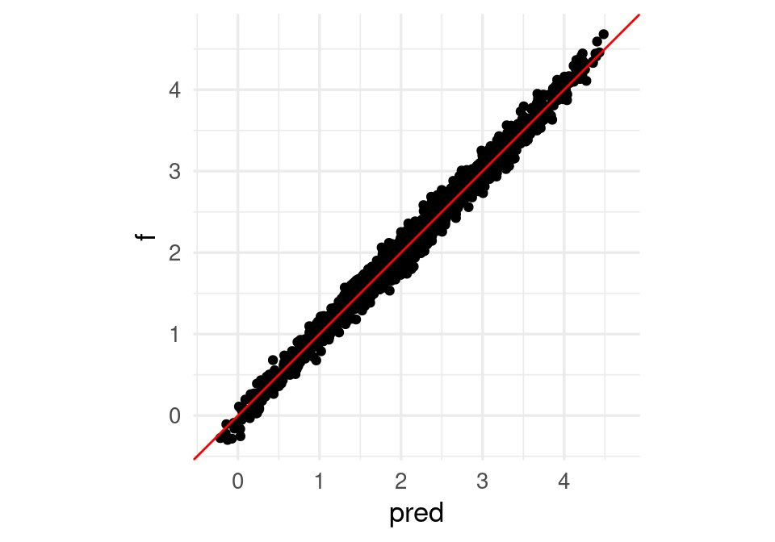
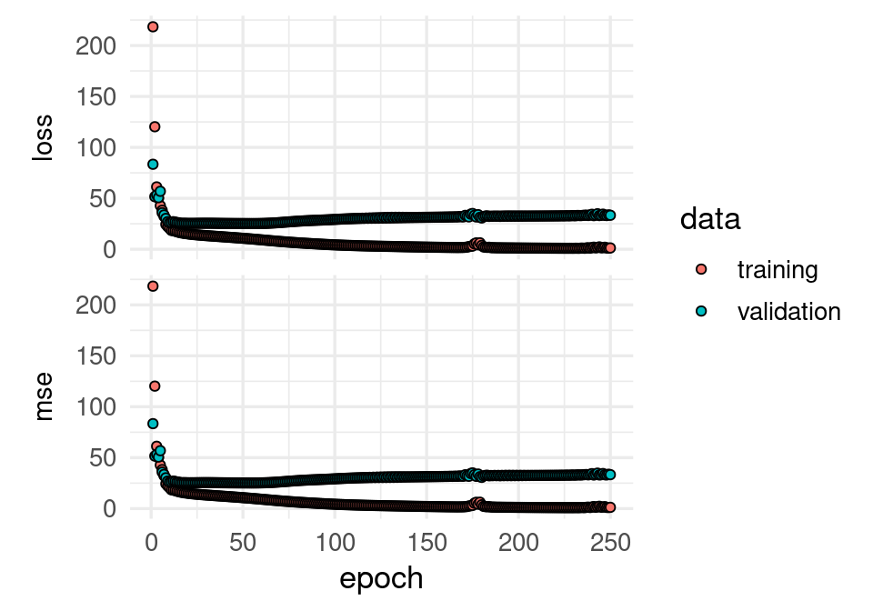

6 Redes neuronales (intro)
6.1 Introducción a redes neuronales
En partes anteriores, vimos cómo hacer más flexibles los métodos de regresión: la idea es construir entradas derivadas a partir de las variables originales, e incluirlas en el modelo de regresión. Este enfoque es bueno cuando tenemos relativamente pocas variables originales de entrada, y tenemos una idea de qué variables derivadas es buena idea incluir (por ejemplo, splines para una variable como edad, interacciones para variables importantes, etc). Sin embargo, si hay una gran cantidad de entradas, esta técnica puede ser prohibitiva en términos de cálculo y trabajo manual.
Por ejemplo, si tenemos unas 100 entradas numéricas, al crear todas las interacciones \(x_i x_j\) y los cuadrados \(x_i^2\) terminamos con unas 5150 variables. Para el problema de dígitos (256 entradas o pixeles) terminaríamos con unas 32 mil entradas adicionales. Aún cuando es posible regularizar, en estos casos suena más conveniente construir entradas derivadas a partir de los datos.
Para hacer esto, consideramos entradas \(X_1, . . . , X_p\), y supongamos que tenemos un problema regresión donde queremos predecir \(Y\). Aunque hay muchas maneras de construir entradas derivadas, una manera simple sería construir \(m\) nuevas entradas mediante:
\[a_k = h \left ( \theta_{k,0} + \sum_{j=1}^p \theta_{k,j}x_j \right)\]
para \(k=1,\ldots, m\), donde \(h\) es una función no lineal (logística o relu entre otras), y las \(\theta\) son parámetros que seleccionaremos más tarde. La idea es hacer combinaciones lineales de variables transformadas.
Modelamos ahora la respuesta usando las entradas derivadas en lugar de las originales en una regresión lineal:
\(a_1, . . . , a_m\): \[f(x) = \beta_0 + \sum_{j=1}^m \beta_ja_j\]
Podemos representar este esquema con una red dirigida (\(m=3\) variables derivadas):
La función logística
Una de las transformaciones \(h\) más comunes para construir entradas derivadas es la función logística:
Nota
La función logística está dada por \[h(x)=\frac{e^x}{1+e^x}\]
h <- function(x){exp(x)/(1+exp(x)) }
ggplot(tibble(x = seq(-6, 6, 0.01)), aes(x = x)) + stat_function(fun = h)
Observaciones:
- ¿Por qué usar \(h\) para las entradas derivadas \(a_k\)? En primer lugar, nótese que si no transformamos con alguna función no lineal \(h\), el modelo final \(p_1\) para la probabilidad condicional es el mismo que el de regresión logística (combinaciones lineales de combinaciones lineales son combinaciones lineales). Sin embargo, al transformar con \(h\), las \(x_j\) contribuyen de manera no lineal a las entradas derivadas.
- Las variables \(a_k\) que se pueden obtener son similares (para una variable de entrada) a los splines que vimos en la parte anterior.
- Es posible demostrar que si se crean suficientes entradas derivadas (\(m\) es suficientemente grande), entonces la función \(f(x)\) puede aproximar cualquier función continua. La función \(h\) (que se llama función de activación no es especial: funciones continuas con forma similar a la sigmoide (logística) pueden usarse también (por ejemplo, arcotangente, o lineal rectificada). La idea es que cualquier función se puede aproximar mediante superposición de funciones tipo sigmoide (ver por ejemplo Cybenko 1989, Approximation by Superpositions of a Sigmoidal Function).
¿Cómo construyen entradas las redes neuronales?
Comencemos por un ejemplo simple de clasificación binaria con una sola entrada \(x\). Supondremos que el modelo verdadero está dado por:
h <- function(x){
1/(1 + exp(-x)) # es lo mismo que exp(x)/(1 + exp(x))
}
x <- seq(-2, 2, 0.1)
f <- atan(2 - 2 * x^2)
set.seed(2805721)
x_1 <- runif(10, -2, 2)
y <- rnorm(10, atan(2 - 2 * x_1^2), 0.2)
datos <- tibble(x_1, y)
dat_f <- tibble(x, f)
g <- ggplot(dat_f) + geom_line(aes(x, f))
g
g + geom_point(data = datos, aes(x = x_1, y = y), colour = 'red')
donde adicionalmente graficamos 30 datos simulados. Recordamos que queremos ajustar la curva roja, que da la probabilidad condicional de clase. Podríamos ajustar un modelo de regresión logística expandiendo manualmente el espacio de entradas agregando \(x^2\), y obtendríamos un ajuste razonable. Pero la idea aquí es que podemos crear entradas derivadas de forma automática.
Supongamos entonces que pensamos crear dos entradas \(a_1\) y \(a_2\), funciones de \(x_1\), y luego predecir \(g.1\), la clase, en función de estas dos entradas. Por ejemplo, podríamos tomar:
donde hacemos una regresión para predecir \(y\) mediante \[f(a) = \beta_0 + \beta_1a_1+\beta_2 a_2,\] \(a_1\) y \(a_2\) están dadas por \[a_1(x)=h(\beta_{1,0} + \beta_{1,1} x_1),\] \[a_2(x)=h(\beta_{2,0} + \beta_{2,1} x_1).\]
Por ejemplo, podríamos tomar
a_1 <- h( 1 + 2 * x) # 2(x+1/2)
a_2 <- h(-1 + 2 * x) # 2(x-1/2) # una es una versión desplazada de otra.Las funciones \(a_1\) y \(a_2\) dependen de \(x\) de la siguiente forma:
dat_a <- tibble(x = x, a_1 = a_1, a_2 = a_2)
dat_a_2 <- dat_a |> gather(variable, valor, a_1:a_2)
ggplot(dat_a_2, aes(x=x, y=valor, colour=variable, group=variable)) + geom_line()
Si las escalamos y sumamos, obtenemos
dat_a <- tibble(x=x, a_1 = a_1, a_2 = a_2,
suma = -1.5 + 6 * a_1 - 6 * a_2)
dat_a_2 <- dat_a |>
pivot_longer(a_1:suma, names_to = "variable", values_to = "valor")
ggplot(dat_a_2, aes(x = x, y = valor, colour = variable, group = variable)) + geom_line()y finalmente obtenemos:
dat_2 <- tibble(x, f = (-1.5 + 6 * a_1 - 6 * a_2))
ggplot(dat_2, aes(x=x, y = f)) + geom_line()+
geom_line(data=dat_f, aes(x=x,y=f), col='red') +
geom_point(data = datos, aes(x = x_1, y = y))
que da un ajuste razonable. Este es un ejemplo de cómo la mezcla de dos funciones logísticas puede replicar esta función con forma de chipote. Otras funciones más complejas se pueden obtener incluyendo más \(a_j\)’s que son versiones escaladas y desplazadas de la función logística. El mecanismo para combinar estas \(a_j\)’s es similar al de los splines que vimos en la sección anterior.
¿Cómo ajustar los parámetros?
Para encontrar los mejores parámetros, minimizamos la devianza sobre los parámetros \(\beta_0,\beta_1,\beta_2\) y \(\beta_{1,0},\beta_{1,1},\beta_{2,0},\beta_{2,1}\).
Veremos más adelante que conviene hacer esto usando descenso o en gradiente o descenso en gradiente estocástico, pero por el momento usamos la función optim de R para minimizar la devianza. En primer lugar, creamos una función que para todas las entradas calcula los valores de salida. En esta función hacemos feed-forward de las entradas a través de la red para calcular la salida.
## esta función calcula los valores de cada nodo en toda la red,
## para cada entrada
feed_fow <- function(beta, x){
a_1 <- h(beta[1] + beta[2] * x) # calcula variable 1 de capa oculta
a_2 <- h(beta[3] + beta[4] * x) # calcula variable 2 de capa oculta
f <- (beta[5] + beta[6] * a_1 + beta[7] * a_2) # calcula capa de salida
f
}Nótese que simplemente seguimos el diagrama mostrado arriba para hacer los cálculos, combinando linealmente las entradas en cada capa.
Ahora definimos una función para calcular la devianza. Conviene crear una función que crea funciones, para obtener una función que sólo se evalúa en los parámetros para cada conjunto de datos de entrenamiento fijos:
perdida_cuad_fun <- function(x, y){
# esta función es una fábrica de funciones
perdida_cuad <- function(beta){
f <- feed_fow(beta, x)
mean((y - f)^2)
}
perdida_cuad
}Por ejemplo:
perdida_cuad <- perdida_cuad_fun(x_1, y) # crea función
## ahora dev toma solamente los 7 parámetros beta:
perdida_cuad(c(0,0,0,0,0,0,0))[1] 1.034101Finalmente, intentamos resolver el problema de minimización de la pérdida cuadrática de los datos de entrenamiento. Para esto usaremos la función optim de R:
set.seed(5)
salida <- optim(rnorm(7), perdida_cuad, method = 'BFGS') # inicializar al azar punto inicial
beta <- salida$par
beta[1] -9.097577 5.315080 -6.973249 -6.762489 1.093208 -3.309966 -2.488820Y ahora podemos graficar con el vector \(\beta\) encontrado:
## hacer feed forward con beta encontrados
p_2 <- feed_fow(beta, x)
dat_2 <- data.frame(x, p_2 = p_2)
ggplot(dat_2, aes(x = x, y = p_2)) + geom_line()+
geom_line(data = dat_f, aes(x = x, y = f), col='red') +
geom_point(data = datos, aes(x = x_1, y = y))
Los coeficientes estimados, que en este caso muchas veces se llaman pesos, son:
beta |> round(2)[1] -9.10 5.32 -6.97 -6.76 1.09 -3.31 -2.49que parecen ser muy grandes. Igualmente, de la figura vemos que el ajuste no parece ser muy estable (esto se puede confirmar corriendo con distintos conjuntos de entrenamiento). Podemos entonces regularizar ligeramente la devianza para resolver este problema. En primer lugar, definimos la devianza regularizada (ridge), donde penalizamos todos los coeficientes que multiplican a una variable, pero no los intercepts:
perdida_cuad_fun_r <- function(x, y, lambda){
# esta función es una fábrica de funciones
perdida_reg <- function(beta){
f <- feed_fow(beta, x)
# en esta regularizacion quitamos sesgos, pero puede hacerse también con sesgos.
mean((y - f)^2) + lambda * sum(beta[c(2,4,6:7)]^2)
}
perdida_reg
}perdida_r <- perdida_cuad_fun_r(x_1, y, 0.001) # crea función dev
set.seed(5)
salida <- optim(rnorm(7, 0, 1), perdida_r, method = 'BFGS') # inicializar al azar punto inicial
beta <- salida$par
perdida_cuad(beta) / nrow(datos)[1] 0.001831033f_2 <- feed_fow(beta, x)
dat_2 <- data.frame(x, f_2 = f_2)
beta[1] -2.072798 2.136928 -4.317303 -4.221802 1.458438 -3.053558 -2.952405ggplot(dat_2, aes(x = x, y = f_2)) + geom_line() +
geom_line(data = dat_f, aes(x = x, y = f), col='red') +
geom_point(data = datos, aes(x = x_1, y = y))y obtenemos un ajuste más estable. Podemos usar también keras. El modelo, con una capa intermedia de dos unidades, y regularización ridge para los coeficientes, y optimización por descenso en gradiente se define como:
library(keras3)
# para reproducibilidad:
tensorflow::set_random_seed(13)
# construir modelo
ejemplo_mod <- keras_model_sequential()
ejemplo_mod |>
layer_dense(units = 2,
activation = "sigmoid", kernel_regularizer = regularizer_l2(0.001)) |>
layer_dense(units = 1,
activation = "linear", kernel_regularizer = regularizer_l2(0.001))x_mat <- as.matrix(datos$x_1, ncol = 1)
y <- datos$y
# usamos devianza como medida de error y descenso en gradiente:
ejemplo_mod |> compile(loss = "mse",
optimizer = optimizer_sgd(learning_rate = 0.2),
metrics = "mse")
# nota: esta learning rate (lr) es demasiado alta para problemas típicos
historia <- ejemplo_mod |>
fit(x_mat, y,
batch_size = nrow(x_mat), epochs = 500, verbose = 0)Después de verificar convergencia (chécalo examinando la variable historia), graficamos para ver que obtuvimos resultados similares:
dat_3 <- tibble(x = x, f_2 = predict(ejemplo_mod, as.matrix(x, ncol = 1))[,1])2/2 - 0s - 19ms/stepggplot(dat_3, aes(x = x, y = f_2)) + geom_line()+
geom_line(data = dat_f, aes(x = x, y = f), col='red') +
geom_point(data = datos, aes(x = x_1, y = y))Los coeficientes obtenidos se muestran abajo. Nótese: la primera componente de la lista son los coeficientes de la unidad 1 y 2 para \(x\). La segunda son los sesgos u ordenadas al origen, la tercera los coeficientes de la respuesta para las unidades 1 y 2, y el cuarto es el sesgo u ordenada al origen de la unidad de salida:
get_weights(ejemplo_mod)[[1]]
[,1] [,2]
[1,] -2.45195 -2.848297
[[2]]
[1] -2.567333 2.578543
[[3]]
[,1]
[1,] -3.460155
[2,] 3.080145
[[4]]
[1] -1.392124Ejercicio: compara los coeficientes que obtuviste en este ejemplo con los anteriores.
6.2 Interacciones en redes neuronales
Es posible capturar interacciones con redes neuronales. Consideremos el siguiente ejemplo simple:
f <- function(x1, x2){
2 + 0.1* x1 + 0.1 * x2 + 10 * (x1 - 0.5) * (x2 - 0.5)
}
dat <- expand.grid(x1 = seq(0, 1, 0.05), x2 = seq(0, 1, 0.05))
dat <- dat |> mutate(f = f(x1, x2))
ggplot(dat, aes(x=x1, y=x2)) + geom_tile(aes(fill=f))Esta función puede entenderse como un o exclusivo: la respuesta es alta sólo cuando \(x_1\) y \(x_2\) tienen valores opuestos (\(x_1\) grande pero \(x_2\) chica y viceversa).
No es posible modelar correctamente esta función mediante el modelo lineal (sin interacciones). Pero podemos incluir la interacción en el modelo lineal o intentar usar una red neuronal. Primero simulamos unos datos y probamos el modelo logístico con y sin interacciones:
set.seed(322)
n <- 2000
dat_ent <- tibble(x1 = rbeta(n, 1, 1), x2 = rbeta(n, 1, 1)) |>
mutate(f = f(x1, x2)) |>
mutate(y = f + rnorm(n, 0, 0.1))
mod_1 <- lm(y ~ x1 + x2, data = dat_ent)
mod_1
Call:
lm(formula = y ~ x1 + x2, data = dat_ent)
Coefficients:
(Intercept) x1 x2
1.8936 0.2046 0.2097 El resultado del modelo lineal no es bueno:
tibble(y_hat = fitted(mod_1), y = dat_ent$y) |>
ggplot(aes(x = y_hat, y = y)) + geom_point(color = "red") +
geom_abline() +
coord_obs_pred()Sin embargo, agregando una interacción lo mejoramos considerablemente (examina la raíz del error cuadrático medio, por ejemplo):
mod_2 <- lm(y ~ x1 + x2 + x1:x2, data = dat_ent)
mod_2
Call:
lm(formula = y ~ x1 + x2 + x1:x2, data = dat_ent)
Coefficients:
(Intercept) x1 x2 x1:x2
4.499 -4.895 -4.885 9.964 tibble(y_hat = fitted(mod_2), y = dat_ent$y) |>
ggplot(aes(x = y_hat, y = y)) + geom_point(color = "red") +
geom_abline() +
coord_obs_pred()
Observese la gran diferencia de error entre los dos modelos (en este caso, el sobreajuste no es un problema).
Ahora consideramos qué red neuronal puede ser apropiada.
tensorflow::set_random_seed(421)
mod_inter <- keras_model_sequential()
mod_inter |>
layer_dense(units = 4, activation = "sigmoid",
name = "capa_intermedia") |>
layer_dense(units = 1, name = "capa_final",
activation = "linear") mod_inter |> compile(loss = "mse",
optimizer = optimizer_sgd(learning_rate = 0.3, momentum = 0.5))
historia <- mod_inter |>
fit(dat_ent |> select(x1, x2) |> as.matrix(), dat_ent$y,
batch_size = 20,
epochs = 100, verbose = 0)Verificamos que esta red captura la interacción:
preds <- predict(mod_inter,
dat |> select(x1, x2) |> as.matrix())14/14 - 0s - 3ms/stepdat <- dat |> mutate(f_red = preds)
ggplot(dat, aes(x = x1, y = x2)) +
geom_tile(aes(fill = f_red))preds_ent <- predict(mod_inter, dat_ent |> select(x1, x2) |> as.matrix())63/63 - 0s - 696us/steptibble(pred = preds_ent[,1], f = dat_ent$y) |>
ggplot(aes(x = pred, y = f)) +
geom_point() +
geom_abline(colour = "red") +
coord_obs_pred()
Aunque podemos extraer los cálculos de la red ajustada, vamos a hacer el cálculo de la red a mano. La función feed forward es:
beta <- get_weights(mod_inter)
feed_fow <- function(beta, x){
a <- h(t(beta[[1]]) %*% x + as.matrix(beta[[2]], 2, 1))
f <- t(beta[[3]]) %*% a + as.matrix(beta[[4]], 1, 1)
f
}Observación: ¿cómo funciona esta red? Consideremos la capa intermedia (3 unidades) para cuatro casos: \((0,0), (0,1), (1,0), (1,1)\):
mat_entrada <- tibble(x_1 = c(0,0,1,1), x_2 = c(0,1,0,1)) |> as.matrix()
capa_1 <- keras_model(inputs = mod_inter$inputs[[1]],
outputs = get_layer(mod_inter, "capa_intermedia")$output)
pred_mat <- predict(capa_1, mat_entrada) |> round(2)1/1 - 0s - 21ms/steprownames(pred_mat) <- c("apagadas", "segunda", "primera", "ambas")
pred_mat [,1] [,2] [,3] [,4]
apagadas 0.09 0.00 0.57 0.07
segunda 0.55 0.05 0.07 0.00
primera 0.00 0.05 0.05 0.56
ambas 0.05 0.56 0.00 0.05Los pesos de la última capa son:
beta[3:4][[1]]
[,1]
[1,] -5.659053
[2,] 5.010898
[3,] 5.338413
[4,] -5.363252
[[2]]
[1] 2.272053Ejercicio: interpreta la red en términos de qué unidades están encendidas (valor cercano a 1) o apagadas (valor cercano a 0). ¿Puedes ajustar este modelo con dos tres unidades intermedias? Haz varias pruebas: ¿qué dificultades encuentras?
6.3 Cálculo en redes: feed-forward
Ahora generalizamos lo que vimos arriba para definir la arquitectura básica de redes neuronales y cómo se hacen cálculos en las redes.
Tip
A las variables originales les llamamos capa de entrada de la red, y a la variable de salida capa de salida. Puede haber más de una capa intermedia. A estas les llamamos capas ocultas.
Cuando todas las conexiones posibles de cada capa a la siguiente están presente, decimos que la red es completamente conexa.
Como vimos en el ejemplo de arriba, para hacer cálculos en la red empezamos con la primera capa, hacemos combinaciones lineales y aplicamos nuestra función no lineal \(h\). Una vez que calculamos la segunda capa, podemos calcular la siguiente de la misma forma: combinaciones lineales y aplicación de \(h\). Y así sucesivamente hasta que llegamos a la capa final.
6.4 Notación
Sea \(L\) el número total de capas. En primer lugar, para un cierto caso de entrada \(x = (x_1,x_2,\ldots, x_p)\), denotamos por:
- \(a^{(l)}_j\) el valor que toma la unidad \(j\) de la capa \(l\), para \(j=0,1,\ldots, n_{l}\), donde \(n_l\) es el número de unidades de la capa \(l\).
- Ponemos \(a^{(l)}_0=1\) para lidiar con los sesgos.
- *En particular, ponemos \(a^{(1)}_j = x_j\), que son los valores de las entradas (primera capa)
- Para un problema de regresión, la última capa solo tiene un elemento, que es \(y = a^{(L)}\).
Adicionalmente, escribimos
\(\theta_{i,k}^{(l)}=\) es el peso de entrada \(a_{k}^{(l-1)}\) de capa \(l-1\) en la entrada \(a_{i}^{(l)}\) de la capa \(l\).
Los sesgos están dados por \[\theta_{i,0}^{(l)}\]
Ejemplo
En nuestro ejemplo, tenemos que en la capa \(l=3\) hay dos unidades. Así que podemos calcular los valores \(a^{(3)}_1\) y \(a^{(3)}_2\). Están dados por
\[a_1^{(3)} = h(\theta_{1,0}^{(2)} + \theta_{1,1}^{(2)} a_1^{(2)}+ \theta_{1,2}^{(2)}a_2^{(2)}+ \theta_{1,3}^{(2)} a_3^{(2)})\] \[a_2^{(3)} = h(\theta_{2,0}^{(2)} + \theta_{2,1}^{(2)} a_1^{(2)}+ \theta_{2,2}^{(2)}a_2^{(2)}+ \theta_{2,3}^{(2)} a_3^{(2)})\]
Como se ilustra en la siguiente gráfica:
Para visualizar las ordenadas (que también se llaman sesgos en este contexto), ponemos \(a_{0}^{(2)}=1\).
Ejemplo
Consideremos propagar a la capa 3 a partir de la capa 2. Usaremos los siguientes pesos para capa 3 y valores de la capa 2 (en gris están los sesgos):

Que en nuestra notación escribimos como \[a^{(2)}_0 = 1, a^{(2)}_1 = -2, a^{(2)}_2 = 5, a^{(2)}=3\] y los pesos son, para la primera unidad: \[\theta^{(2)}_{1,0} = 3, \,\,\, \theta^{(2)}_{1,1} = 1.5,\,\,\,\theta^{(2)}_{1,2} = -1,\,\,\theta^{(2)}_{1,3} = -0.5 \] y para la segunda unidad \[\theta^{(2)}_{2,0} = 1, \,\,\, \theta^{(2)}_{2,1} = 2,\,\,\,\theta^{(2)}_{2,2} = 0.5,\,\, \theta^{(2)}_{2,3} = -0.2\] Y ahora queremos calcular los valores que toman las unidades de la capa 3, que son \(a^{(3)}_1\) y \(a^{(3)}_2\)$
Para hacer feed forward a la siguiente capa, hacemos entonces
\[a^{(3)}_1 = h(3 + a^{(2)}_1 - a^{(2)}_2 -0.5 a_3^{(2)}),\] \[a^{(3)}_2 = h(1 + 2a^{(2)}_1 + 0.5a^{(2)}_2 - 0.2 a_3^{(2)}),\]
Ponemos los pesos y valores de la capa 2 (incluyendo sesgo):
a_2 <- c(1, -2, 5, 3) # ponemos un 1 al principio para el sesgo
theta_2_1 = c(3, 1.5, -1.0, -0.5)
theta_2_2 = c(1, 2, 0.5, -0.2)y calculamos
a_3 <- c(1, h(sum(theta_2_1*a_2)),h(sum(theta_2_2*a_2))) # ponemos un 1 al principio
a_3[1] 1.000000000 0.001501182 0.249739894
6.5 Algoritmo de Feed forward
Para calcular los valores de salida de una red a partir de pesos y datos de entrada, usamos el algoritmo feed-forward, calculando capa por capa.
Feed-forward
Para la primera capa, escribimos las variables de entrada: \[a^{(1)}_j = x_j, j=1\ldots,n_1\] Para la primera capa oculta, o la segunda capa \[a^{(2)}_j = h\left( \theta_{j,0}^{(1)}+ \sum_{k=1}^{n_1} \theta_{j,k}^{(1)} a^{(1)}_k \right), j=1\ldots,n_2\] para la \(l\)-ésima capa: \[a^{(l)}_j = h\left( \theta_{j,0}^{(l-1)}+ \sum_{k=1}^{n_{l-1}} \theta_{j,k}^{(l-1)} a^{(l-1)}_k \right), j=1\ldots,n_{l}\] y así sucesivamente. Para la capa final o de salida en un problema de regresión, suponiendo que tenemos \(L\) capas (\(L-2\) capas ocultas): \[f(x) = \theta_{1,0}^{(L-1)}+ \sum_{k=1}^{n_{L-1}} \theta_{1,k}^{(L-1)} a^{(L-1)}_k .\]
Nótese que entonces:
Tip
Cada capa se caracteriza por el conjunto de parámetros \(\Theta^{(l)}\), que es una matriz de \(n_l\times n_{l-1}\).
La red completa entonces se caracteriza por:
- La estructura elegida (número de capas ocultas y número de nodos en cada capa oculta).
- Las matrices de pesos en cada capa \(\Theta^{(1)},\Theta^{(2)},\ldots, \Theta^{(L-1)}\)
Adicionalmente, escribimos en forma vectorial: \[a^{(l)} = (a^{(l)}_0, a^{(l)}_1, a^{(l)}_2, \ldots, a^{(l)}_{n_l})^t\]
Para calcular la salidas, igual que hicimos, antes, propagaremos hacia adelante los valores de las variables de entrada usando los pesos. Agregando entradas adicionales en cada capa \(a_0^{(l)}\), \(l=1,2,\ldots, L-1\), donde \(a_0^{l}=1\), y agregando a \(\Theta^{(l)}\) una columna con las ordenadas al origen (o sesgos) podemos escribir:
Feed-forward matricial
Capa 1 (vector de entradas) \[ a^{(1)} = x\]
Capa 2 \[ a^{(2)} = h(\Theta^{(1)}a^{(1)})\]
Capa \(l\) (oculta) \[ a^{(l)} = h(\Theta^{(l-1)}a^{(l-1)})\] donde \(h\) se aplica componente a componente sobre los vectores correspondientes.
Capa de salida:
En un problema de regresión, la capa de salida se calcula como un regresión lineal: \[a^{(L)}= f(x) = \Theta^{(L-1)}a^{(L-1)}\] Nótese que feed-foward consiste principalmente de multiplicaciones de matrices con algunas aplicaciones de \(h\)
6.6 Algoritmo de Backpropagation: cálculo del gradiente (regresión)
Para ajustar los pesos y sesgos de las redes (valores \(\theta\)), utilizaremos descenso en gradiente y otros algoritmos derivados del gradiente (descenso estocástico). En esta parte entonces veremos cómo calcular estos gradientes con el algoritmo de back-propagation, que es una aplicación de la regla de la cadena para derivar. Back-propagation resulta en una fórmula recursiva donde propagamos errores de la red como gradientes desde el final de red (capa de salida) hasta el principio, capa por capa.
Consideramos el problema de regresión
Recordamos que la pérdida cuadrática (con regularización ridge, dividiendo entre 2 por conveniencia) es
\[D = -\frac{1}{2n}\sum_{i=1}^n (y^{(i)} - f(x^{(i)}))^2 + \lambda \sum_{l=2}^{L} \sum_{k=1}^{n_{l-1}} \sum_{j=1}^{n_l}(\theta_{j,k}^{(l)})^2.\]
Queremos entonces calcular las derivadas de la devianza o función de pérdida con respecto a cada parámetro \(\theta_{j,k}^{(l)}\). Esto nos proporciona el gradiente para nuestro algoritmo de descenso.
Consideramos aquí el problema de regresión con pérdida cuadrática y sin regularización. La parte de la parcial que corresponde al término de regularización es fácil de agregar al final.
Recordamos también nuestra notación para la función logística (o sigmoide):
\[h(z)=\frac{1}{1+e^{-z}}.\] Necesitaremos su derivada, que está dada por (cálculala): \[h'(z) = h(z)(1-h(z))\]
Cálculo para un caso de entrenamiento
Primero simplificamos el problema y consideramos calcular las parciales para un solo caso de entrenamiento \((x,y)\): \[ D= \frac{1}{2}\left ( y -f(x)\right)^2 . \]
Después sumaremos sobre toda la muestra de entrenamiento. Entonces queremos calcular \[\frac{\partial D}{\partial \theta_{j,k}^{(l)}}\]
Y escribiremos, con la notación de arriba, \[a^{(l+1)}_j = h(z^{(l+1)}_j)\] donde \[z^{(l+1)} = \Theta^{(l)} a^{(l)},\] que coordenada a coordenada se escribe como \[z^{(l+1)}_j = \sum_{k=0}^{n_{l}} \theta_{j,k}^{(l)} a^{(l)}_k\]
Paso 1: Derivar respecto a capa \(l+1\)
Como los valores de cada capa determinan los valores de salida y la devianza, podemos escribir (recordemos que \(a_0^{(l)}=1\) es constante): \[D=D(a_0^{(l+1)},a_1^{(l+1)},a_2^{(l+1)},\ldots, a_{n_{l+1}}^{(l+1)})=D(a_1^{(l+1)},a_2^{(l+1)},\ldots, a_{n_{l+1}}^{(l+1)})\]
Así que por la regla de la cadena para varias variables: \[\frac{\partial D}{\partial \theta_{j,k}^{(l)}} = \sum_{t=1}^{n_{l}} \frac{\partial D}{\partial a_t^{(l+1)}}\frac{\partial a_t^{(l+1)}} {\partial \theta_{j,k}^{(l)} }\]
Pero si vemos dónde aparece \(\theta_{j,k}^{(l)}\) en la gráfica de la red:
\[ \cdots a^{(l)}_k \xrightarrow{\theta_{j,k}^{(l)}} a^{(l+1)}_j \cdots \rightarrow D\] Entonces podemos concluir que \(\frac{\partial a_t^{(l+1)}}{\partial \theta_{j,k}^{(l)}} =0\) cuando \(t\neq j\) (pues no dependen de \(\theta_{j,k}^{(l)}\)),
y entonces, para toda \(j=1,2,\ldots, n_{l+1}, k=0,1,\ldots, n_{l}\) \[ \frac{\partial D}{\partial \theta_{j,k}^{(l)}} = \frac{\partial D}{\partial a_j^{(l+1)}}\frac{\partial a_j^{(l+1)}}{\partial \theta_{j,k}^{(l)} }. \tag{6.1}\]
Adicionalmente, como \[a_j^{(l+1)} = h(z_j^{(l+1)}) = h\left (\sum_{k=0}^{n_{l}} \theta_{j,k}^{(l)} a^{(l)}_k \right )\] y las \(a_k^{(l)}\) no dependen de \(\theta_{j,k}^{(l)}\), tenemos por la regla de la cadena que
\[ \frac{\partial a_j^{(l+1)}}{\partial \theta_{j,k}^{(l)} } = h'(z_j^{(l+1)})a_k^{(l)}. \]
Esta última expresión podemos calcularla pues sólo requiere la derivada de \(h\) y los valores otenidos en el paso de feed-forward.
Paso 2: Obtener fórmula recursiva
Así que sólo nos queda calcular las parciales (\(j = 1,\ldots, n_l\)) \[\frac{\partial D}{\partial a_j^{(l)}}\]
Para obtener una fórmula recursiva para esta cantidad (hacia atrás), aplicamos otra vez regla de la cadena, pero con respecto a la capa \(l\) (ojo: queremos obtener una fórmula recursiva!):
\[\frac{\partial D}{\partial a_j^{(l)}}= \sum_{s=1}^{n_{l+1}} \frac{\partial D}{\partial a_s^{(l+1)}}\frac{\partial a_s^{(l+1)}}{\partial a_j^{(l)}},\]
que se puede entender a partir de este diagrama:

Nótese que la suma empieza en \(s=1\), no en \(s=0\), pues \(a_0^{(l+1)}\) no depende de \(a_k^{(l)}\).
En este caso los elementos de la suma no se anulan necesariamente. Primero consideramos la derivada de:
\[\frac{\partial a_s^{(l+1)}}{\partial a_j^{(l)}}=h'(z_s^{(l+1)})\theta_{s,j}^{(l)},\]
de modo que
\[\frac{\partial D}{\partial a_j^{(l)}}= \sum_{s=1}^{n_l} \frac{\partial D}{\partial a_s^{(l+1)}} h'(z_s^{(l+1)})\theta_{s,j}^{(l)}.\]
Nótese que esto nos da una fórmula recursiva para las parciales que nos falta calcular (de \(D\) con respecto a \(a\)), pues las otras cantidades las conocemos por backpropagation.
Paso 3: Simplificación de la recursión
Definimos para \(l=1,\ldots,L-2\):
\[ \delta_s^{ (l+1)}=\frac{\partial D}{\partial a_s^{(l+1)}} h'(z_s^{(l+1)}) \tag{6.2}\]
de manera que la ecuación recursiva es
\[ \frac{\partial D}{\partial a_j^{(l)}} = \sum_{s=1}^{n_{l+1}} \delta_s^{(l+1)}\theta_{s,j}^{(l)}. \tag{6.3}\]
Tenemos que si \(l=2,\ldots,L-1\), entonces podemos escribir (usando (Ecuación 6.3)) como fórmula recursiva:
\[ \delta_j^{(l)} = \left (\sum_{s=1}^{n_l} \delta_s^{(l+1)} \theta_{s,j}^{(l)}\right ) h'(z_j^{(l)}), \tag{6.4}\] para \(j=1,2,\ldots, n_{l}\).
Paso 4: Condiciones iniciales
Para la última capa, tenemos que (en la ecuación de arriba, en este caso la activación \(h\) es \(h(z)=z\) para la última capa):
\[\delta_1^{(L)}=-(y - f(x)).\]
Nótese que esta cantidad indica hacia dónde tenemos que mover \(f(x)\) para hacer el error más chico.
Paso 5: Cálculo de parciales
Finalmente, usando (Ecuación 6.1) y (Ecuación 6.2) , obtenemos \[\frac{\partial D}{\partial \theta_{j,k}^{(l)}} = \delta_j^{(l+1)}a_k^{(l)},\]
y con esto ya podemos hacer backpropagation para calcular el gradiente sobre cada caso de entrenamiento, y solo resta acumular para obtener el gradiente sobre la muestra de entrenamiento.
Muchas veces es útil escribir una versión vectorizada (importante para implementar):
Paso 6: Versión matricial
Ahora podemos escribir estas ecuaciones en forma vectorial. En primer lugar, \[\delta^{(L)}=f(x)-y.\] Y además se puede ver de la ecuación (Ecuación 6.4) que (\(\Theta_{*}^{(l+1)}\) denota la matriz de pesos sin la columna correspondiente al sesgo):
\[ \delta^{(l)}=\left( \Theta_{*}^{(l)} \right)^t\delta^{(l+1)} \circ h'(z^{(l)}) \tag{6.5}\]
donde \(\circ\) denota el producto componente a componente.
Ahora todo ya está calculado. Lo interesante es que las \(\delta^{(l)}\) se calculan de manera recursiva.
Algoritmo de backpropagation
Nota
#Backpropagation
Para problema de clasificación con regularización $ $. Para \(i=1,\ldots, N,\) tomamos el dato de entrenamiento \((x^{(i)}, y^{(i)})\) y hacemos:
- Ponemos \(a^{(1)}=x^{(i)}\) (vector de entradas, incluyendo 1).
- Calculamos \(a^{(2)},a^{(3)},\ldots, a^{(L)}\) usando feed forward para la entrada \(x^{(i)}.\)
- Calculamos \(\delta^{(L)}=a^{(L)}-y^{(i)}\), y luego \(\delta^{(L-1)},\ldots, \delta^{(2)}\) según la recursión (Ecuación 6.4).
- Acumulamos \(\Delta_{j,k}^{(l)}=\Delta_{j,k}^{(l)} + \delta_j^{(l+1)}a_k^{(l)}\).
- Finalmente, ponemos, si \(k\neq 0\), \[D_{j,k}^{(l)} = \frac{2}{N}\Delta_{j,k}^{(l)} + 2\lambda\theta_{j,k}^{(l)}\] y si \(k=0\), \[D_{j,k}^{(l)} = \frac{2}{N}\Delta_{j,k}^{(l)} .\] Entonces: \[D_{j,k}^{(l)} =\frac{\partial D}{\partial \theta_{j,k}^{(l)}}.\]
Nótese que back-propagation consiste principalmente de multiplicaciones de matrices con algunas aplicaciones de \(h\) y acumulaciones, igual que feed-forward.
6.7 Ajuste de parámetros (introducción)
Consideramos la versión con regularización ridge (también llamada L2) de la devianza de entrenamiento como nuestro función objetivo:
Ajuste de redes neuronales
Para un problema de regresión, ajustamos los pesos \(\Theta^{(1)},\Theta^{(2)},\ldots, \Theta^{(L)}\) de la red intentando minimizar el error cuadrático medio (penalizado) sobre la muestra de entrenamiento: \[D = -\frac{1}{2n}\sum_{i=1}^n (y^{(i)} - f(x^{i}))^2= + \lambda \sum_{l=2}^{L} \sum_{k=1}^{n_{l-1}} \sum_{j=1}^{n_l}(\theta_{j,k}^{(l)})^2.\] Este problema en general no es convexo y puede tener múltiples mínimos.
Veremos el proceso de ajuste, selección de arquitectura, etc. más adelante. Por el momento hacemos unas observaciones acerca de este problema de minimización:
Hay varios algoritmos para minimizar este error, algunos avanzados incluyendo información de segundo orden (como Newton), pero actualmente las técnicas más populares, para redes grandes, están derivadas de descenso en gradiente. Más específicamente, una variación, que es descenso estocástico.
Que el algoritmo depende principalmente de multiplicaciones de matrices y acumulaciones implica que puede escalarse de diversas maneras. Una es paralelizando sobre la muestra de entrenamiento (y calcular acumulados al final), pero también se pueden paralelizar las multiplicaciones de matrices (para lo cual los GPUs se prestan muy bien).
Para redes neuronales, el gradiente se calcula con un algoritmo que se llama back-propagation, que es una aplicación de la regla de la cadena para propagar errores desde la capa de salida a lo largo de todas las capas para ajustar los pesos y sesgos.
En estos problemas no buscamos el mínimo global, sino un mínimo local de buen desempeño. Puede haber múltiples mínimos, puntos silla, regiones relativamente planas, precipicios (curvatura alta). Nótese que la simetría implica que podemos obtener la misma red cambiando pesos entre neuronas y las conexiones correspondientes. Esto implica que necesariamente hay varios mínimos.
Todo esto dificulta el entrenamiento de redes neuronales grandes. Para redes grandes, ni siquiera esperamos a alcanzar un mínimo local, sino que nos a veces detenemos prematuramente cuando obtenemos el mejor desempeño posible.
Para este problema, no tiene sentido comenzar las iteraciones con todos los pesos igual a cero, pues las unidades de la red son simétricas: no hay nada que distinga una de otra si todos los pesos son iguales. Esto quiere decir que si iteramos, todas las neuronas van a aprender lo mismo.
Es importante no comenzar valores de los pesos grandes, pues las funciones logísticas pueden quedar en regiones planas donde la minimización es lenta, o podemos tener gradientes demasiado grandes y produzcan inestabilidad en el cálculo del gradiente.
El ajuste de la tasa de aprendizaje es un parámetro importante, más delicado que para problemas convexos. Generalmente lo tratamos con un hiperparámetro más que hay que afinar. Tasas demasiado grandes pueden llevarnos a mínimos locales relativamente malos.
Generalmente los pesos se inicializan al azar con variables independientes gaussianas o uniformes centradas en cero, y con varianza chica (por ejemplo \(U(-0.5,0.5)\)). Una recomendación es usar \(U(-1/\sqrt{m}, 1/\sqrt{m})\) donde \(m\) es el número de entradas. En general, hay que experimentar con este parámetro.
El proceso para ajustar una red es entonces:
- Definir número de capas ocultas, número de neuronas por cada capa, y un valor del parámetro de regularización. Estandarizar las entradas. Usualmente podemos probar comenzar con una o dos capas ocultas, de tamaño proporcional al número de entradas. Es buena idea comenzar con una red relativamente grande que tienen error bajo de entrenamiento aunque sobreajuste, y después regularizar y refinar su tamaño.
- Seleccionar parámetros al azar para \(\Theta^{(2)},\Theta^{(3)},\ldots, \Theta^{(L)}\). Se toman, por ejemplo, normales con media 0 y varianza chica.
- Correr un algoritmo de minimización del error mostrada arriba. Es necesario experimentar con los parámetros del algoritmo de minimización.
- Verificar convergencia del algoritmo a un mínimo local (o el algoritmo no está mejorando).
- Predecir usando el modelo ajustado.
Finalmente, podemos probar distintas arquitecturas y valores del parámetros de regularización, para afinar estos parámetros según validación cruzada o una muestra de validación.
Ejemplo (regresión)
dat_grasa <- read_csv(file = '../datos/bodyfat.csv')
set.seed(183)
grasa_particion <- initial_split(dat_grasa, 0.5)
grasa_ent <- training(grasa_particion)
grasa_pr <- testing(grasa_particion)
nrow(grasa_ent)[1] 126Una exploración de este conjunto de datos revela algunos datos sospechosos. En particular un individuo con estatura de 30 pulgadas (alrededor de 75 cm), con peso normal. Probablemente no queremos incluir en entrenamiento este caso, y tampoco hacer predicciones para posibles personas que tengan tales dimensiones:
library(patchwork)
g_1 <- grasa_ent |> ggplot(aes(x = estatura, y = peso)) +
geom_point()
g_2 <- grasa_ent |> ggplot(aes(x = abdomen, y = peso)) +
geom_point()
g_1 + g_2grasa_receta <- recipe(grasacorp ~ ., grasa_ent) |>
step_filter(estatura > 50) |>
step_normalize(all_predictors()) |>
prep()library(keras3)
# entrenamiento
x_grasa <- grasa_receta |> juice() |>
select(-grasacorp) |> as.matrix()
vars_nombres <- colnames(x_grasa)
y_grasa <- grasa_receta |> juice() |> pull(grasacorp)
# validación
x_grasa_pr <- grasa_receta |> bake(grasa_pr) |>
select(-grasacorp) |> as.matrix()
y_grasa_pr <- grasa_receta |> bake(grasa_pr) |> pull(grasacorp)modelo_red <- keras_model_sequential() |>
layer_dense(units = 50, activation = "sigmoid") |>
layer_dense(units = 50, activation = "sigmoid") |>
layer_dense(units = 1, activation = "linear")
modelo_red |> compile(
loss = "mse", metrics = "mse",
optimizer = optimizer_sgd(learning_rate = 0.01, momentum = 0.9)
)
# esto es más eficiente hacerlo con callbacks en general:
historia <- modelo_red |> fit(
x = x_grasa, y = y_grasa,
validation_data = list(x_grasa_pr, y_grasa_pr),
batch_size = 30, epochs = 250, verbose = 1)Epoch 1/250
[1m1/5[0m [32m━━━━[0m[37m━━━━━━━━━━━━━━━━[0m [1m1s[0m 491ms/step - loss: 371.2946 - mse: 371.2946
[1m5/5[0m [32m━━━━━━━━━━━━━━━━━━━━[0m[37m[0m [1m1s[0m 29ms/step - loss: 260.0376 - mse: 260.0376 - val_loss: 83.4129 - val_mse: 83.4129
Epoch 2/250
[1m1/5[0m [32m━━━━[0m[37m━━━━━━━━━━━━━━━━[0m [1m0s[0m 13ms/step - loss: 73.2279 - mse: 73.2279
[1m5/5[0m [32m━━━━━━━━━━━━━━━━━━━━[0m[37m[0m [1m0s[0m 5ms/step - loss: 103.6785 - mse: 103.6785 - val_loss: 51.5754 - val_mse: 51.5754
Epoch 3/250
[1m1/5[0m [32m━━━━[0m[37m━━━━━━━━━━━━━━━━[0m [1m0s[0m 13ms/step - loss: 41.0798 - mse: 41.0798
[1m5/5[0m [32m━━━━━━━━━━━━━━━━━━━━[0m[37m[0m [1m0s[0m 5ms/step - loss: 55.1550 - mse: 55.1550 - val_loss: 53.2117 - val_mse: 53.2117
Epoch 4/250
[1m1/5[0m [32m━━━━[0m[37m━━━━━━━━━━━━━━━━[0m [1m0s[0m 13ms/step - loss: 41.8359 - mse: 41.8359
[1m5/5[0m [32m━━━━━━━━━━━━━━━━━━━━[0m[37m[0m [1m0s[0m 5ms/step - loss: 46.8067 - mse: 46.8067 - val_loss: 50.5936 - val_mse: 50.5936
Epoch 5/250
[1m1/5[0m [32m━━━━[0m[37m━━━━━━━━━━━━━━━━[0m [1m0s[0m 12ms/step - loss: 56.5675 - mse: 56.5675
[1m5/5[0m [32m━━━━━━━━━━━━━━━━━━━━[0m[37m[0m [1m0s[0m 5ms/step - loss: 46.7040 - mse: 46.7040 - val_loss: 56.8771 - val_mse: 56.8771
Epoch 6/250
[1m1/5[0m [32m━━━━[0m[37m━━━━━━━━━━━━━━━━[0m [1m0s[0m 13ms/step - loss: 54.3354 - mse: 54.3354
[1m5/5[0m [32m━━━━━━━━━━━━━━━━━━━━[0m[37m[0m [1m0s[0m 5ms/step - loss: 43.0142 - mse: 43.0142 - val_loss: 35.8100 - val_mse: 35.8100
Epoch 7/250
[1m1/5[0m [32m━━━━[0m[37m━━━━━━━━━━━━━━━━[0m [1m0s[0m 13ms/step - loss: 33.8200 - mse: 33.8200
[1m5/5[0m [32m━━━━━━━━━━━━━━━━━━━━[0m[37m[0m [1m0s[0m 5ms/step - loss: 33.3196 - mse: 33.3196 - val_loss: 33.6038 - val_mse: 33.6038
Epoch 8/250
[1m1/5[0m [32m━━━━[0m[37m━━━━━━━━━━━━━━━━[0m [1m0s[0m 12ms/step - loss: 32.1236 - mse: 32.1236
[1m5/5[0m [32m━━━━━━━━━━━━━━━━━━━━[0m[37m[0m [1m0s[0m 5ms/step - loss: 26.7658 - mse: 26.7658 - val_loss: 30.2307 - val_mse: 30.2307
Epoch 9/250
[1m1/5[0m [32m━━━━[0m[37m━━━━━━━━━━━━━━━━[0m [1m0s[0m 12ms/step - loss: 30.8269 - mse: 30.8269
[1m5/5[0m [32m━━━━━━━━━━━━━━━━━━━━[0m[37m[0m [1m0s[0m 5ms/step - loss: 24.9625 - mse: 24.9625 - val_loss: 27.0051 - val_mse: 27.0051
Epoch 10/250
[1m1/5[0m [32m━━━━[0m[37m━━━━━━━━━━━━━━━━[0m [1m0s[0m 13ms/step - loss: 24.7748 - mse: 24.7748
[1m5/5[0m [32m━━━━━━━━━━━━━━━━━━━━[0m[37m[0m [1m0s[0m 5ms/step - loss: 22.2964 - mse: 22.2964 - val_loss: 25.9309 - val_mse: 25.9309
Epoch 11/250
[1m1/5[0m [32m━━━━[0m[37m━━━━━━━━━━━━━━━━[0m [1m0s[0m 13ms/step - loss: 20.1663 - mse: 20.1663
[1m5/5[0m [32m━━━━━━━━━━━━━━━━━━━━[0m[37m[0m [1m0s[0m 5ms/step - loss: 19.3947 - mse: 19.3947 - val_loss: 26.2502 - val_mse: 26.2502
Epoch 12/250
[1m1/5[0m [32m━━━━[0m[37m━━━━━━━━━━━━━━━━[0m [1m0s[0m 13ms/step - loss: 18.1804 - mse: 18.1804
[1m5/5[0m [32m━━━━━━━━━━━━━━━━━━━━[0m[37m[0m [1m0s[0m 5ms/step - loss: 18.8185 - mse: 18.8185 - val_loss: 27.0289 - val_mse: 27.0289
Epoch 13/250
[1m1/5[0m [32m━━━━[0m[37m━━━━━━━━━━━━━━━━[0m [1m0s[0m 12ms/step - loss: 17.6545 - mse: 17.6545
[1m5/5[0m [32m━━━━━━━━━━━━━━━━━━━━[0m[37m[0m [1m0s[0m 5ms/step - loss: 18.1798 - mse: 18.1798 - val_loss: 26.7192 - val_mse: 26.7192
Epoch 14/250
[1m1/5[0m [32m━━━━[0m[37m━━━━━━━━━━━━━━━━[0m [1m0s[0m 13ms/step - loss: 17.1457 - mse: 17.1457
[1m5/5[0m [32m━━━━━━━━━━━━━━━━━━━━[0m[37m[0m [1m0s[0m 5ms/step - loss: 17.6890 - mse: 17.6890 - val_loss: 26.1269 - val_mse: 26.1269
Epoch 15/250
[1m1/5[0m [32m━━━━[0m[37m━━━━━━━━━━━━━━━━[0m [1m0s[0m 13ms/step - loss: 16.7010 - mse: 16.7010
[1m5/5[0m [32m━━━━━━━━━━━━━━━━━━━━[0m[37m[0m [1m0s[0m 5ms/step - loss: 17.2119 - mse: 17.2119 - val_loss: 26.0213 - val_mse: 26.0213
Epoch 16/250
[1m1/5[0m [32m━━━━[0m[37m━━━━━━━━━━━━━━━━[0m [1m0s[0m 13ms/step - loss: 16.8253 - mse: 16.8253
[1m5/5[0m [32m━━━━━━━━━━━━━━━━━━━━[0m[37m[0m [1m0s[0m 5ms/step - loss: 16.8784 - mse: 16.8784 - val_loss: 25.4968 - val_mse: 25.4968
Epoch 17/250
[1m1/5[0m [32m━━━━[0m[37m━━━━━━━━━━━━━━━━[0m [1m0s[0m 13ms/step - loss: 16.3074 - mse: 16.3074
[1m5/5[0m [32m━━━━━━━━━━━━━━━━━━━━[0m[37m[0m [1m0s[0m 5ms/step - loss: 16.5263 - mse: 16.5263 - val_loss: 25.4788 - val_mse: 25.4788
Epoch 18/250
[1m1/5[0m [32m━━━━[0m[37m━━━━━━━━━━━━━━━━[0m [1m0s[0m 13ms/step - loss: 16.2110 - mse: 16.2110
[1m5/5[0m [32m━━━━━━━━━━━━━━━━━━━━[0m[37m[0m [1m0s[0m 5ms/step - loss: 16.1264 - mse: 16.1264 - val_loss: 25.5155 - val_mse: 25.5155
Epoch 19/250
[1m1/5[0m [32m━━━━[0m[37m━━━━━━━━━━━━━━━━[0m [1m0s[0m 12ms/step - loss: 16.0603 - mse: 16.0603
[1m5/5[0m [32m━━━━━━━━━━━━━━━━━━━━[0m[37m[0m [1m0s[0m 5ms/step - loss: 15.9332 - mse: 15.9332 - val_loss: 25.4657 - val_mse: 25.4657
Epoch 20/250
[1m1/5[0m [32m━━━━[0m[37m━━━━━━━━━━━━━━━━[0m [1m0s[0m 13ms/step - loss: 15.8355 - mse: 15.8355
[1m5/5[0m [32m━━━━━━━━━━━━━━━━━━━━[0m[37m[0m [1m0s[0m 5ms/step - loss: 15.6467 - mse: 15.6467 - val_loss: 25.4096 - val_mse: 25.4096
Epoch 21/250
[1m1/5[0m [32m━━━━[0m[37m━━━━━━━━━━━━━━━━[0m [1m0s[0m 13ms/step - loss: 15.6199 - mse: 15.6199
[1m5/5[0m [32m━━━━━━━━━━━━━━━━━━━━[0m[37m[0m [1m0s[0m 5ms/step - loss: 15.3785 - mse: 15.3785 - val_loss: 25.3749 - val_mse: 25.3749
Epoch 22/250
[1m1/5[0m [32m━━━━[0m[37m━━━━━━━━━━━━━━━━[0m [1m0s[0m 13ms/step - loss: 15.3480 - mse: 15.3480
[1m5/5[0m [32m━━━━━━━━━━━━━━━━━━━━[0m[37m[0m [1m0s[0m 5ms/step - loss: 15.1411 - mse: 15.1411 - val_loss: 25.4214 - val_mse: 25.4214
Epoch 23/250
[1m1/5[0m [32m━━━━[0m[37m━━━━━━━━━━━━━━━━[0m [1m0s[0m 12ms/step - loss: 15.2261 - mse: 15.2261
[1m5/5[0m [32m━━━━━━━━━━━━━━━━━━━━[0m[37m[0m [1m0s[0m 5ms/step - loss: 14.9327 - mse: 14.9327 - val_loss: 25.3916 - val_mse: 25.3916
Epoch 24/250
[1m1/5[0m [32m━━━━[0m[37m━━━━━━━━━━━━━━━━[0m [1m0s[0m 13ms/step - loss: 15.0004 - mse: 15.0004
[1m5/5[0m [32m━━━━━━━━━━━━━━━━━━━━[0m[37m[0m [1m0s[0m 5ms/step - loss: 14.7313 - mse: 14.7313 - val_loss: 25.4258 - val_mse: 25.4258
Epoch 25/250
[1m1/5[0m [32m━━━━[0m[37m━━━━━━━━━━━━━━━━[0m [1m0s[0m 16ms/step - loss: 14.8402 - mse: 14.8402
[1m5/5[0m [32m━━━━━━━━━━━━━━━━━━━━[0m[37m[0m [1m0s[0m 5ms/step - loss: 14.5366 - mse: 14.5366 - val_loss: 25.4543 - val_mse: 25.4543
Epoch 26/250
[1m1/5[0m [32m━━━━[0m[37m━━━━━━━━━━━━━━━━[0m [1m0s[0m 13ms/step - loss: 14.6551 - mse: 14.6551
[1m5/5[0m [32m━━━━━━━━━━━━━━━━━━━━[0m[37m[0m [1m0s[0m 5ms/step - loss: 14.3569 - mse: 14.3569 - val_loss: 25.4696 - val_mse: 25.4696
Epoch 27/250
[1m1/5[0m [32m━━━━[0m[37m━━━━━━━━━━━━━━━━[0m [1m0s[0m 13ms/step - loss: 14.4531 - mse: 14.4531
[1m5/5[0m [32m━━━━━━━━━━━━━━━━━━━━[0m[37m[0m [1m0s[0m 5ms/step - loss: 14.1735 - mse: 14.1735 - val_loss: 25.4990 - val_mse: 25.4990
Epoch 28/250
[1m1/5[0m [32m━━━━[0m[37m━━━━━━━━━━━━━━━━[0m [1m0s[0m 13ms/step - loss: 14.2833 - mse: 14.2833
[1m5/5[0m [32m━━━━━━━━━━━━━━━━━━━━[0m[37m[0m [1m0s[0m 5ms/step - loss: 14.0110 - mse: 14.0110 - val_loss: 25.5137 - val_mse: 25.5137
Epoch 29/250
[1m1/5[0m [32m━━━━[0m[37m━━━━━━━━━━━━━━━━[0m [1m0s[0m 12ms/step - loss: 14.1111 - mse: 14.1111
[1m5/5[0m [32m━━━━━━━━━━━━━━━━━━━━[0m[37m[0m [1m0s[0m 5ms/step - loss: 13.8558 - mse: 13.8558 - val_loss: 25.5225 - val_mse: 25.5225
Epoch 30/250
[1m1/5[0m [32m━━━━[0m[37m━━━━━━━━━━━━━━━━[0m [1m0s[0m 13ms/step - loss: 13.9562 - mse: 13.9562
[1m5/5[0m [32m━━━━━━━━━━━━━━━━━━━━[0m[37m[0m [1m0s[0m 5ms/step - loss: 13.7030 - mse: 13.7030 - val_loss: 25.5185 - val_mse: 25.5185
Epoch 31/250
[1m1/5[0m [32m━━━━[0m[37m━━━━━━━━━━━━━━━━[0m [1m0s[0m 13ms/step - loss: 13.7999 - mse: 13.7999
[1m5/5[0m [32m━━━━━━━━━━━━━━━━━━━━[0m[37m[0m [1m0s[0m 5ms/step - loss: 13.5542 - mse: 13.5542 - val_loss: 25.5181 - val_mse: 25.5181
Epoch 32/250
[1m1/5[0m [32m━━━━[0m[37m━━━━━━━━━━━━━━━━[0m [1m0s[0m 13ms/step - loss: 13.6616 - mse: 13.6616
[1m5/5[0m [32m━━━━━━━━━━━━━━━━━━━━[0m[37m[0m [1m0s[0m 5ms/step - loss: 13.4124 - mse: 13.4124 - val_loss: 25.5079 - val_mse: 25.5079
Epoch 33/250
[1m1/5[0m [32m━━━━[0m[37m━━━━━━━━━━━━━━━━[0m [1m0s[0m 13ms/step - loss: 13.5243 - mse: 13.5243
[1m5/5[0m [32m━━━━━━━━━━━━━━━━━━━━[0m[37m[0m [1m0s[0m 5ms/step - loss: 13.2750 - mse: 13.2750 - val_loss: 25.4956 - val_mse: 25.4956
Epoch 34/250
[1m1/5[0m [32m━━━━[0m[37m━━━━━━━━━━━━━━━━[0m [1m0s[0m 13ms/step - loss: 13.3948 - mse: 13.3948
[1m5/5[0m [32m━━━━━━━━━━━━━━━━━━━━[0m[37m[0m [1m0s[0m 5ms/step - loss: 13.1402 - mse: 13.1402 - val_loss: 25.4800 - val_mse: 25.4800
Epoch 35/250
[1m1/5[0m [32m━━━━[0m[37m━━━━━━━━━━━━━━━━[0m [1m0s[0m 13ms/step - loss: 13.2716 - mse: 13.2716
[1m5/5[0m [32m━━━━━━━━━━━━━━━━━━━━[0m[37m[0m [1m0s[0m 5ms/step - loss: 13.0079 - mse: 13.0079 - val_loss: 25.4574 - val_mse: 25.4574
Epoch 36/250
[1m1/5[0m [32m━━━━[0m[37m━━━━━━━━━━━━━━━━[0m [1m0s[0m 13ms/step - loss: 13.1484 - mse: 13.1484
[1m5/5[0m [32m━━━━━━━━━━━━━━━━━━━━[0m[37m[0m [1m0s[0m 5ms/step - loss: 12.8759 - mse: 12.8759 - val_loss: 25.4333 - val_mse: 25.4333
Epoch 37/250
[1m1/5[0m [32m━━━━[0m[37m━━━━━━━━━━━━━━━━[0m [1m0s[0m 13ms/step - loss: 13.0293 - mse: 13.0293
[1m5/5[0m [32m━━━━━━━━━━━━━━━━━━━━[0m[37m[0m [1m0s[0m 5ms/step - loss: 12.7459 - mse: 12.7459 - val_loss: 25.4078 - val_mse: 25.4078
Epoch 38/250
[1m1/5[0m [32m━━━━[0m[37m━━━━━━━━━━━━━━━━[0m [1m0s[0m 13ms/step - loss: 12.9087 - mse: 12.9087
[1m5/5[0m [32m━━━━━━━━━━━━━━━━━━━━[0m[37m[0m [1m0s[0m 5ms/step - loss: 12.6171 - mse: 12.6171 - val_loss: 25.3841 - val_mse: 25.3841
Epoch 39/250
[1m1/5[0m [32m━━━━[0m[37m━━━━━━━━━━━━━━━━[0m [1m0s[0m 13ms/step - loss: 12.7864 - mse: 12.7864
[1m5/5[0m [32m━━━━━━━━━━━━━━━━━━━━[0m[37m[0m [1m0s[0m 5ms/step - loss: 12.4881 - mse: 12.4881 - val_loss: 25.3629 - val_mse: 25.3629
Epoch 40/250
[1m1/5[0m [32m━━━━[0m[37m━━━━━━━━━━━━━━━━[0m [1m0s[0m 13ms/step - loss: 12.6622 - mse: 12.6622
[1m5/5[0m [32m━━━━━━━━━━━━━━━━━━━━[0m[37m[0m [1m0s[0m 5ms/step - loss: 12.3589 - mse: 12.3589 - val_loss: 25.3445 - val_mse: 25.3445
Epoch 41/250
[1m1/5[0m [32m━━━━[0m[37m━━━━━━━━━━━━━━━━[0m [1m0s[0m 13ms/step - loss: 12.5383 - mse: 12.5383
[1m5/5[0m [32m━━━━━━━━━━━━━━━━━━━━[0m[37m[0m [1m0s[0m 5ms/step - loss: 12.2300 - mse: 12.2300 - val_loss: 25.3274 - val_mse: 25.3274
Epoch 42/250
[1m1/5[0m [32m━━━━[0m[37m━━━━━━━━━━━━━━━━[0m [1m0s[0m 13ms/step - loss: 12.4155 - mse: 12.4155
[1m5/5[0m [32m━━━━━━━━━━━━━━━━━━━━[0m[37m[0m [1m0s[0m 9ms/step - loss: 12.1015 - mse: 12.1015 - val_loss: 25.3122 - val_mse: 25.3122
Epoch 43/250
[1m1/5[0m [32m━━━━[0m[37m━━━━━━━━━━━━━━━━[0m [1m0s[0m 13ms/step - loss: 12.2951 - mse: 12.2951
[1m5/5[0m [32m━━━━━━━━━━━━━━━━━━━━[0m[37m[0m [1m0s[0m 5ms/step - loss: 11.9738 - mse: 11.9738 - val_loss: 25.2983 - val_mse: 25.2983
Epoch 44/250
[1m1/5[0m [32m━━━━[0m[37m━━━━━━━━━━━━━━━━[0m [1m0s[0m 13ms/step - loss: 12.1767 - mse: 12.1767
[1m5/5[0m [32m━━━━━━━━━━━━━━━━━━━━[0m[37m[0m [1m0s[0m 5ms/step - loss: 11.8465 - mse: 11.8465 - val_loss: 25.2853 - val_mse: 25.2853
Epoch 45/250
[1m1/5[0m [32m━━━━[0m[37m━━━━━━━━━━━━━━━━[0m [1m0s[0m 13ms/step - loss: 12.0599 - mse: 12.0599
[1m5/5[0m [32m━━━━━━━━━━━━━━━━━━━━[0m[37m[0m [1m0s[0m 5ms/step - loss: 11.7193 - mse: 11.7193 - val_loss: 25.2734 - val_mse: 25.2734
Epoch 46/250
[1m1/5[0m [32m━━━━[0m[37m━━━━━━━━━━━━━━━━[0m [1m0s[0m 13ms/step - loss: 11.9452 - mse: 11.9452
[1m5/5[0m [32m━━━━━━━━━━━━━━━━━━━━[0m[37m[0m [1m0s[0m 5ms/step - loss: 11.5922 - mse: 11.5922 - val_loss: 25.2622 - val_mse: 25.2622
Epoch 47/250
[1m1/5[0m [32m━━━━[0m[37m━━━━━━━━━━━━━━━━[0m [1m0s[0m 13ms/step - loss: 11.8326 - mse: 11.8326
[1m5/5[0m [32m━━━━━━━━━━━━━━━━━━━━[0m[37m[0m [1m0s[0m 5ms/step - loss: 11.4650 - mse: 11.4650 - val_loss: 25.2522 - val_mse: 25.2522
Epoch 48/250
[1m1/5[0m [32m━━━━[0m[37m━━━━━━━━━━━━━━━━[0m [1m0s[0m 13ms/step - loss: 11.7225 - mse: 11.7225
[1m5/5[0m [32m━━━━━━━━━━━━━━━━━━━━[0m[37m[0m [1m0s[0m 5ms/step - loss: 11.3375 - mse: 11.3375 - val_loss: 25.2436 - val_mse: 25.2436
Epoch 49/250
[1m1/5[0m [32m━━━━[0m[37m━━━━━━━━━━━━━━━━[0m [1m0s[0m 13ms/step - loss: 11.6147 - mse: 11.6147
[1m5/5[0m [32m━━━━━━━━━━━━━━━━━━━━[0m[37m[0m [1m0s[0m 5ms/step - loss: 11.2097 - mse: 11.2097 - val_loss: 25.2368 - val_mse: 25.2368
Epoch 50/250
[1m1/5[0m [32m━━━━[0m[37m━━━━━━━━━━━━━━━━[0m [1m0s[0m 13ms/step - loss: 11.5093 - mse: 11.5093
[1m5/5[0m [32m━━━━━━━━━━━━━━━━━━━━[0m[37m[0m [1m0s[0m 5ms/step - loss: 11.0816 - mse: 11.0816 - val_loss: 25.2312 - val_mse: 25.2312
Epoch 51/250
[1m1/5[0m [32m━━━━[0m[37m━━━━━━━━━━━━━━━━[0m [1m0s[0m 13ms/step - loss: 11.4053 - mse: 11.4053
[1m5/5[0m [32m━━━━━━━━━━━━━━━━━━━━[0m[37m[0m [1m0s[0m 5ms/step - loss: 10.9531 - mse: 10.9531 - val_loss: 25.2249 - val_mse: 25.2249
Epoch 52/250
[1m1/5[0m [32m━━━━[0m[37m━━━━━━━━━━━━━━━━[0m [1m0s[0m 13ms/step - loss: 11.3010 - mse: 11.3010
[1m5/5[0m [32m━━━━━━━━━━━━━━━━━━━━[0m[37m[0m [1m0s[0m 5ms/step - loss: 10.8235 - mse: 10.8235 - val_loss: 25.2173 - val_mse: 25.2173
Epoch 53/250
[1m1/5[0m [32m━━━━[0m[37m━━━━━━━━━━━━━━━━[0m [1m0s[0m 13ms/step - loss: 11.1964 - mse: 11.1964
[1m5/5[0m [32m━━━━━━━━━━━━━━━━━━━━[0m[37m[0m [1m0s[0m 5ms/step - loss: 10.6923 - mse: 10.6923 - val_loss: 25.2096 - val_mse: 25.2096
Epoch 54/250
[1m1/5[0m [32m━━━━[0m[37m━━━━━━━━━━━━━━━━[0m [1m0s[0m 13ms/step - loss: 11.0926 - mse: 11.0926
[1m5/5[0m [32m━━━━━━━━━━━━━━━━━━━━[0m[37m[0m [1m0s[0m 6ms/step - loss: 10.5591 - mse: 10.5591 - val_loss: 25.2037 - val_mse: 25.2037
Epoch 55/250
[1m1/5[0m [32m━━━━[0m[37m━━━━━━━━━━━━━━━━[0m [1m0s[0m 13ms/step - loss: 10.9902 - mse: 10.9902
[1m5/5[0m [32m━━━━━━━━━━━━━━━━━━━━[0m[37m[0m [1m0s[0m 5ms/step - loss: 10.4237 - mse: 10.4237 - val_loss: 25.2016 - val_mse: 25.2016
Epoch 56/250
[1m1/5[0m [32m━━━━[0m[37m━━━━━━━━━━━━━━━━[0m [1m0s[0m 13ms/step - loss: 10.8890 - mse: 10.8890
[1m5/5[0m [32m━━━━━━━━━━━━━━━━━━━━[0m[37m[0m [1m0s[0m 5ms/step - loss: 10.2858 - mse: 10.2858 - val_loss: 25.2049 - val_mse: 25.2049
Epoch 57/250
[1m1/5[0m [32m━━━━[0m[37m━━━━━━━━━━━━━━━━[0m [1m0s[0m 13ms/step - loss: 10.7887 - mse: 10.7887
[1m5/5[0m [32m━━━━━━━━━━━━━━━━━━━━[0m[37m[0m [1m0s[0m 5ms/step - loss: 10.1455 - mse: 10.1455 - val_loss: 25.2148 - val_mse: 25.2148
Epoch 58/250
[1m1/5[0m [32m━━━━[0m[37m━━━━━━━━━━━━━━━━[0m [1m0s[0m 13ms/step - loss: 10.6891 - mse: 10.6891
[1m5/5[0m [32m━━━━━━━━━━━━━━━━━━━━[0m[37m[0m [1m0s[0m 5ms/step - loss: 10.0035 - mse: 10.0035 - val_loss: 25.2323 - val_mse: 25.2323
Epoch 59/250
[1m1/5[0m [32m━━━━[0m[37m━━━━━━━━━━━━━━━━[0m [1m0s[0m 13ms/step - loss: 10.5901 - mse: 10.5901
[1m5/5[0m [32m━━━━━━━━━━━━━━━━━━━━[0m[37m[0m [1m0s[0m 5ms/step - loss: 9.8602 - mse: 9.8602 - val_loss: 25.2581 - val_mse: 25.2581
Epoch 60/250
[1m1/5[0m [32m━━━━[0m[37m━━━━━━━━━━━━━━━━[0m [1m0s[0m 13ms/step - loss: 10.4915 - mse: 10.4915
[1m5/5[0m [32m━━━━━━━━━━━━━━━━━━━━[0m[37m[0m [1m0s[0m 5ms/step - loss: 9.7160 - mse: 9.7160 - val_loss: 25.2930 - val_mse: 25.2930
Epoch 61/250
[1m1/5[0m [32m━━━━[0m[37m━━━━━━━━━━━━━━━━[0m [1m0s[0m 13ms/step - loss: 10.3935 - mse: 10.3935
[1m5/5[0m [32m━━━━━━━━━━━━━━━━━━━━[0m[37m[0m [1m0s[0m 5ms/step - loss: 9.5714 - mse: 9.5714 - val_loss: 25.3376 - val_mse: 25.3376
Epoch 62/250
[1m1/5[0m [32m━━━━[0m[37m━━━━━━━━━━━━━━━━[0m [1m0s[0m 15ms/step - loss: 10.2959 - mse: 10.2959
[1m5/5[0m [32m━━━━━━━━━━━━━━━━━━━━[0m[37m[0m [1m0s[0m 5ms/step - loss: 9.4265 - mse: 9.4265 - val_loss: 25.3921 - val_mse: 25.3921
Epoch 63/250
[1m1/5[0m [32m━━━━[0m[37m━━━━━━━━━━━━━━━━[0m [1m0s[0m 13ms/step - loss: 10.1986 - mse: 10.1986
[1m5/5[0m [32m━━━━━━━━━━━━━━━━━━━━[0m[37m[0m [1m0s[0m 5ms/step - loss: 9.2815 - mse: 9.2815 - val_loss: 25.4568 - val_mse: 25.4568
Epoch 64/250
[1m1/5[0m [32m━━━━[0m[37m━━━━━━━━━━━━━━━━[0m [1m0s[0m 13ms/step - loss: 10.1015 - mse: 10.1015
[1m5/5[0m [32m━━━━━━━━━━━━━━━━━━━━[0m[37m[0m [1m0s[0m 5ms/step - loss: 9.1366 - mse: 9.1366 - val_loss: 25.5315 - val_mse: 25.5315
Epoch 65/250
[1m1/5[0m [32m━━━━[0m[37m━━━━━━━━━━━━━━━━[0m [1m0s[0m 13ms/step - loss: 10.0041 - mse: 10.0041
[1m5/5[0m [32m━━━━━━━━━━━━━━━━━━━━[0m[37m[0m [1m0s[0m 5ms/step - loss: 8.9919 - mse: 8.9919 - val_loss: 25.6160 - val_mse: 25.6160
Epoch 66/250
[1m1/5[0m [32m━━━━[0m[37m━━━━━━━━━━━━━━━━[0m [1m0s[0m 13ms/step - loss: 9.9061 - mse: 9.9061
[1m5/5[0m [32m━━━━━━━━━━━━━━━━━━━━[0m[37m[0m [1m0s[0m 5ms/step - loss: 8.8476 - mse: 8.8476 - val_loss: 25.7101 - val_mse: 25.7101
Epoch 67/250
[1m1/5[0m [32m━━━━[0m[37m━━━━━━━━━━━━━━━━[0m [1m0s[0m 14ms/step - loss: 9.8068 - mse: 9.8068
[1m5/5[0m [32m━━━━━━━━━━━━━━━━━━━━[0m[37m[0m [1m0s[0m 5ms/step - loss: 8.7040 - mse: 8.7040 - val_loss: 25.8136 - val_mse: 25.8136
Epoch 68/250
[1m1/5[0m [32m━━━━[0m[37m━━━━━━━━━━━━━━━━[0m [1m0s[0m 13ms/step - loss: 9.7055 - mse: 9.7055
[1m5/5[0m [32m━━━━━━━━━━━━━━━━━━━━[0m[37m[0m [1m0s[0m 5ms/step - loss: 8.5614 - mse: 8.5614 - val_loss: 25.9260 - val_mse: 25.9260
Epoch 69/250
[1m1/5[0m [32m━━━━[0m[37m━━━━━━━━━━━━━━━━[0m [1m0s[0m 13ms/step - loss: 9.6014 - mse: 9.6014
[1m5/5[0m [32m━━━━━━━━━━━━━━━━━━━━[0m[37m[0m [1m0s[0m 5ms/step - loss: 8.4199 - mse: 8.4199 - val_loss: 26.0465 - val_mse: 26.0465
Epoch 70/250
[1m1/5[0m [32m━━━━[0m[37m━━━━━━━━━━━━━━━━[0m [1m0s[0m 13ms/step - loss: 9.4937 - mse: 9.4937
[1m5/5[0m [32m━━━━━━━━━━━━━━━━━━━━[0m[37m[0m [1m0s[0m 5ms/step - loss: 8.2796 - mse: 8.2796 - val_loss: 26.1738 - val_mse: 26.1738
Epoch 71/250
[1m1/5[0m [32m━━━━[0m[37m━━━━━━━━━━━━━━━━[0m [1m0s[0m 13ms/step - loss: 9.3818 - mse: 9.3818
[1m5/5[0m [32m━━━━━━━━━━━━━━━━━━━━[0m[37m[0m [1m0s[0m 5ms/step - loss: 8.1404 - mse: 8.1404 - val_loss: 26.3064 - val_mse: 26.3064
Epoch 72/250
[1m1/5[0m [32m━━━━[0m[37m━━━━━━━━━━━━━━━━[0m [1m0s[0m 12ms/step - loss: 9.2655 - mse: 9.2655
[1m5/5[0m [32m━━━━━━━━━━━━━━━━━━━━[0m[37m[0m [1m0s[0m 5ms/step - loss: 8.0023 - mse: 8.0023 - val_loss: 26.4426 - val_mse: 26.4426
Epoch 73/250
[1m1/5[0m [32m━━━━[0m[37m━━━━━━━━━━━━━━━━[0m [1m0s[0m 13ms/step - loss: 9.1449 - mse: 9.1449
[1m5/5[0m [32m━━━━━━━━━━━━━━━━━━━━[0m[37m[0m [1m0s[0m 5ms/step - loss: 7.8655 - mse: 7.8655 - val_loss: 26.5807 - val_mse: 26.5807
Epoch 74/250
[1m1/5[0m [32m━━━━[0m[37m━━━━━━━━━━━━━━━━[0m [1m0s[0m 13ms/step - loss: 9.0205 - mse: 9.0205
[1m5/5[0m [32m━━━━━━━━━━━━━━━━━━━━[0m[37m[0m [1m0s[0m 5ms/step - loss: 7.7300 - mse: 7.7300 - val_loss: 26.7193 - val_mse: 26.7193
Epoch 75/250
[1m1/5[0m [32m━━━━[0m[37m━━━━━━━━━━━━━━━━[0m [1m0s[0m 13ms/step - loss: 8.8930 - mse: 8.8930
[1m5/5[0m [32m━━━━━━━━━━━━━━━━━━━━[0m[37m[0m [1m0s[0m 5ms/step - loss: 7.5960 - mse: 7.5960 - val_loss: 26.8575 - val_mse: 26.8575
Epoch 76/250
[1m1/5[0m [32m━━━━[0m[37m━━━━━━━━━━━━━━━━[0m [1m0s[0m 13ms/step - loss: 8.7629 - mse: 8.7629
[1m5/5[0m [32m━━━━━━━━━━━━━━━━━━━━[0m[37m[0m [1m0s[0m 5ms/step - loss: 7.4635 - mse: 7.4635 - val_loss: 26.9940 - val_mse: 26.9940
Epoch 77/250
[1m1/5[0m [32m━━━━[0m[37m━━━━━━━━━━━━━━━━[0m [1m0s[0m 12ms/step - loss: 8.6310 - mse: 8.6310
[1m5/5[0m [32m━━━━━━━━━━━━━━━━━━━━[0m[37m[0m [1m0s[0m 5ms/step - loss: 7.3327 - mse: 7.3327 - val_loss: 27.1281 - val_mse: 27.1281
Epoch 78/250
[1m1/5[0m [32m━━━━[0m[37m━━━━━━━━━━━━━━━━[0m [1m0s[0m 13ms/step - loss: 8.4976 - mse: 8.4976
[1m5/5[0m [32m━━━━━━━━━━━━━━━━━━━━[0m[37m[0m [1m0s[0m 5ms/step - loss: 7.2037 - mse: 7.2037 - val_loss: 27.2586 - val_mse: 27.2586
Epoch 79/250
[1m1/5[0m [32m━━━━[0m[37m━━━━━━━━━━━━━━━━[0m [1m0s[0m 13ms/step - loss: 8.3633 - mse: 8.3633
[1m5/5[0m [32m━━━━━━━━━━━━━━━━━━━━[0m[37m[0m [1m0s[0m 5ms/step - loss: 7.0764 - mse: 7.0764 - val_loss: 27.3850 - val_mse: 27.3850
Epoch 80/250
[1m1/5[0m [32m━━━━[0m[37m━━━━━━━━━━━━━━━━[0m [1m0s[0m 13ms/step - loss: 8.2285 - mse: 8.2285
[1m5/5[0m [32m━━━━━━━━━━━━━━━━━━━━[0m[37m[0m [1m0s[0m 5ms/step - loss: 6.9508 - mse: 6.9508 - val_loss: 27.5064 - val_mse: 27.5064
Epoch 81/250
[1m1/5[0m [32m━━━━[0m[37m━━━━━━━━━━━━━━━━[0m [1m0s[0m 13ms/step - loss: 8.0934 - mse: 8.0934
[1m5/5[0m [32m━━━━━━━━━━━━━━━━━━━━[0m[37m[0m [1m0s[0m 5ms/step - loss: 6.8269 - mse: 6.8269 - val_loss: 27.6225 - val_mse: 27.6225
Epoch 82/250
[1m1/5[0m [32m━━━━[0m[37m━━━━━━━━━━━━━━━━[0m [1m0s[0m 13ms/step - loss: 7.9587 - mse: 7.9587
[1m5/5[0m [32m━━━━━━━━━━━━━━━━━━━━[0m[37m[0m [1m0s[0m 5ms/step - loss: 6.7046 - mse: 6.7046 - val_loss: 27.7328 - val_mse: 27.7328
Epoch 83/250
[1m1/5[0m [32m━━━━[0m[37m━━━━━━━━━━━━━━━━[0m [1m0s[0m 13ms/step - loss: 7.8245 - mse: 7.8245
[1m5/5[0m [32m━━━━━━━━━━━━━━━━━━━━[0m[37m[0m [1m0s[0m 5ms/step - loss: 6.5837 - mse: 6.5837 - val_loss: 27.8372 - val_mse: 27.8372
Epoch 84/250
[1m1/5[0m [32m━━━━[0m[37m━━━━━━━━━━━━━━━━[0m [1m0s[0m 17ms/step - loss: 7.6913 - mse: 7.6913
[1m5/5[0m [32m━━━━━━━━━━━━━━━━━━━━[0m[37m[0m [1m0s[0m 5ms/step - loss: 6.4642 - mse: 6.4642 - val_loss: 27.9356 - val_mse: 27.9356
Epoch 85/250
[1m1/5[0m [32m━━━━[0m[37m━━━━━━━━━━━━━━━━[0m [1m0s[0m 13ms/step - loss: 7.5594 - mse: 7.5594
[1m5/5[0m [32m━━━━━━━━━━━━━━━━━━━━[0m[37m[0m [1m0s[0m 5ms/step - loss: 6.3460 - mse: 6.3460 - val_loss: 28.0283 - val_mse: 28.0283
Epoch 86/250
[1m1/5[0m [32m━━━━[0m[37m━━━━━━━━━━━━━━━━[0m [1m0s[0m 13ms/step - loss: 7.4291 - mse: 7.4291
[1m5/5[0m [32m━━━━━━━━━━━━━━━━━━━━[0m[37m[0m [1m0s[0m 5ms/step - loss: 6.2290 - mse: 6.2290 - val_loss: 28.1155 - val_mse: 28.1155
Epoch 87/250
[1m1/5[0m [32m━━━━[0m[37m━━━━━━━━━━━━━━━━[0m [1m0s[0m 13ms/step - loss: 7.3006 - mse: 7.3006
[1m5/5[0m [32m━━━━━━━━━━━━━━━━━━━━[0m[37m[0m [1m0s[0m 5ms/step - loss: 6.1130 - mse: 6.1130 - val_loss: 28.1981 - val_mse: 28.1981
Epoch 88/250
[1m1/5[0m [32m━━━━[0m[37m━━━━━━━━━━━━━━━━[0m [1m0s[0m 13ms/step - loss: 7.1742 - mse: 7.1742
[1m5/5[0m [32m━━━━━━━━━━━━━━━━━━━━[0m[37m[0m [1m0s[0m 5ms/step - loss: 5.9981 - mse: 5.9981 - val_loss: 28.2764 - val_mse: 28.2764
Epoch 89/250
[1m1/5[0m [32m━━━━[0m[37m━━━━━━━━━━━━━━━━[0m [1m0s[0m 13ms/step - loss: 7.0499 - mse: 7.0499
[1m5/5[0m [32m━━━━━━━━━━━━━━━━━━━━[0m[37m[0m [1m0s[0m 5ms/step - loss: 5.8842 - mse: 5.8842 - val_loss: 28.3519 - val_mse: 28.3519
Epoch 90/250
[1m1/5[0m [32m━━━━[0m[37m━━━━━━━━━━━━━━━━[0m [1m0s[0m 13ms/step - loss: 6.9280 - mse: 6.9280
[1m5/5[0m [32m━━━━━━━━━━━━━━━━━━━━[0m[37m[0m [1m0s[0m 5ms/step - loss: 5.7713 - mse: 5.7713 - val_loss: 28.4250 - val_mse: 28.4250
Epoch 91/250
[1m1/5[0m [32m━━━━[0m[37m━━━━━━━━━━━━━━━━[0m [1m0s[0m 13ms/step - loss: 6.8083 - mse: 6.8083
[1m5/5[0m [32m━━━━━━━━━━━━━━━━━━━━[0m[37m[0m [1m0s[0m 5ms/step - loss: 5.6596 - mse: 5.6596 - val_loss: 28.4977 - val_mse: 28.4977
Epoch 92/250
[1m1/5[0m [32m━━━━[0m[37m━━━━━━━━━━━━━━━━[0m [1m0s[0m 13ms/step - loss: 6.6911 - mse: 6.6911
[1m5/5[0m [32m━━━━━━━━━━━━━━━━━━━━[0m[37m[0m [1m0s[0m 5ms/step - loss: 5.5493 - mse: 5.5493 - val_loss: 28.5703 - val_mse: 28.5703
Epoch 93/250
[1m1/5[0m [32m━━━━[0m[37m━━━━━━━━━━━━━━━━[0m [1m0s[0m 13ms/step - loss: 6.5759 - mse: 6.5759
[1m5/5[0m [32m━━━━━━━━━━━━━━━━━━━━[0m[37m[0m [1m0s[0m 5ms/step - loss: 5.4406 - mse: 5.4406 - val_loss: 28.6452 - val_mse: 28.6452
Epoch 94/250
[1m1/5[0m [32m━━━━[0m[37m━━━━━━━━━━━━━━━━[0m [1m0s[0m 12ms/step - loss: 6.4630 - mse: 6.4630
[1m5/5[0m [32m━━━━━━━━━━━━━━━━━━━━[0m[37m[0m [1m0s[0m 5ms/step - loss: 5.3339 - mse: 5.3339 - val_loss: 28.7219 - val_mse: 28.7219
Epoch 95/250
[1m1/5[0m [32m━━━━[0m[37m━━━━━━━━━━━━━━━━[0m [1m0s[0m 13ms/step - loss: 6.3516 - mse: 6.3516
[1m5/5[0m [32m━━━━━━━━━━━━━━━━━━━━[0m[37m[0m [1m0s[0m 5ms/step - loss: 5.2295 - mse: 5.2295 - val_loss: 28.8028 - val_mse: 28.8028
Epoch 96/250
[1m1/5[0m [32m━━━━[0m[37m━━━━━━━━━━━━━━━━[0m [1m0s[0m 13ms/step - loss: 6.2426 - mse: 6.2426
[1m5/5[0m [32m━━━━━━━━━━━━━━━━━━━━[0m[37m[0m [1m0s[0m 5ms/step - loss: 5.1278 - mse: 5.1278 - val_loss: 28.8857 - val_mse: 28.8857
Epoch 97/250
[1m1/5[0m [32m━━━━[0m[37m━━━━━━━━━━━━━━━━[0m [1m0s[0m 13ms/step - loss: 6.1347 - mse: 6.1347
[1m5/5[0m [32m━━━━━━━━━━━━━━━━━━━━[0m[37m[0m [1m0s[0m 5ms/step - loss: 5.0288 - mse: 5.0288 - val_loss: 28.9738 - val_mse: 28.9738
Epoch 98/250
[1m1/5[0m [32m━━━━[0m[37m━━━━━━━━━━━━━━━━[0m [1m0s[0m 13ms/step - loss: 6.0298 - mse: 6.0298
[1m5/5[0m [32m━━━━━━━━━━━━━━━━━━━━[0m[37m[0m [1m0s[0m 5ms/step - loss: 4.9332 - mse: 4.9332 - val_loss: 29.0619 - val_mse: 29.0619
Epoch 99/250
[1m1/5[0m [32m━━━━[0m[37m━━━━━━━━━━━━━━━━[0m [1m0s[0m 13ms/step - loss: 5.9257 - mse: 5.9257
[1m5/5[0m [32m━━━━━━━━━━━━━━━━━━━━[0m[37m[0m [1m0s[0m 5ms/step - loss: 4.8404 - mse: 4.8404 - val_loss: 29.1553 - val_mse: 29.1553
Epoch 100/250
[1m1/5[0m [32m━━━━[0m[37m━━━━━━━━━━━━━━━━[0m [1m0s[0m 13ms/step - loss: 5.8255 - mse: 5.8255
[1m5/5[0m [32m━━━━━━━━━━━━━━━━━━━━[0m[37m[0m [1m0s[0m 5ms/step - loss: 4.7513 - mse: 4.7513 - val_loss: 29.2451 - val_mse: 29.2451
Epoch 101/250
[1m1/5[0m [32m━━━━[0m[37m━━━━━━━━━━━━━━━━[0m [1m0s[0m 13ms/step - loss: 5.7257 - mse: 5.7257
[1m5/5[0m [32m━━━━━━━━━━━━━━━━━━━━[0m[37m[0m [1m0s[0m 5ms/step - loss: 4.6647 - mse: 4.6647 - val_loss: 29.3410 - val_mse: 29.3410
Epoch 102/250
[1m1/5[0m [32m━━━━[0m[37m━━━━━━━━━━━━━━━━[0m [1m0s[0m 13ms/step - loss: 5.6313 - mse: 5.6313
[1m5/5[0m [32m━━━━━━━━━━━━━━━━━━━━[0m[37m[0m [1m0s[0m 5ms/step - loss: 4.5820 - mse: 4.5820 - val_loss: 29.4282 - val_mse: 29.4282
Epoch 103/250
[1m1/5[0m [32m━━━━[0m[37m━━━━━━━━━━━━━━━━[0m [1m0s[0m 13ms/step - loss: 5.5362 - mse: 5.5362
[1m5/5[0m [32m━━━━━━━━━━━━━━━━━━━━[0m[37m[0m [1m0s[0m 5ms/step - loss: 4.5013 - mse: 4.5013 - val_loss: 29.5243 - val_mse: 29.5243
Epoch 104/250
[1m1/5[0m [32m━━━━[0m[37m━━━━━━━━━━━━━━━━[0m [1m0s[0m 13ms/step - loss: 5.4484 - mse: 5.4484
[1m5/5[0m [32m━━━━━━━━━━━━━━━━━━━━[0m[37m[0m [1m0s[0m 5ms/step - loss: 4.4246 - mse: 4.4246 - val_loss: 29.6045 - val_mse: 29.6045
Epoch 105/250
[1m1/5[0m [32m━━━━[0m[37m━━━━━━━━━━━━━━━━[0m [1m0s[0m 13ms/step - loss: 5.3578 - mse: 5.3578
[1m5/5[0m [32m━━━━━━━━━━━━━━━━━━━━[0m[37m[0m [1m0s[0m 5ms/step - loss: 4.3492 - mse: 4.3492 - val_loss: 29.7001 - val_mse: 29.7001
Epoch 106/250
[1m1/5[0m [32m━━━━[0m[37m━━━━━━━━━━━━━━━━[0m [1m0s[0m 13ms/step - loss: 5.2774 - mse: 5.2774
[1m5/5[0m [32m━━━━━━━━━━━━━━━━━━━━[0m[37m[0m [1m0s[0m 5ms/step - loss: 4.2780 - mse: 4.2780 - val_loss: 29.7689 - val_mse: 29.7689
Epoch 107/250
[1m1/5[0m [32m━━━━[0m[37m━━━━━━━━━━━━━━━━[0m [1m0s[0m 13ms/step - loss: 5.1904 - mse: 5.1904
[1m5/5[0m [32m━━━━━━━━━━━━━━━━━━━━[0m[37m[0m [1m0s[0m 5ms/step - loss: 4.2069 - mse: 4.2069 - val_loss: 29.8650 - val_mse: 29.8650
Epoch 108/250
[1m1/5[0m [32m━━━━[0m[37m━━━━━━━━━━━━━━━━[0m [1m0s[0m 13ms/step - loss: 5.1181 - mse: 5.1181
[1m5/5[0m [32m━━━━━━━━━━━━━━━━━━━━[0m[37m[0m [1m0s[0m 5ms/step - loss: 4.1410 - mse: 4.1410 - val_loss: 29.9179 - val_mse: 29.9179
Epoch 109/250
[1m1/5[0m [32m━━━━[0m[37m━━━━━━━━━━━━━━━━[0m [1m0s[0m 13ms/step - loss: 5.0332 - mse: 5.0332
[1m5/5[0m [32m━━━━━━━━━━━━━━━━━━━━[0m[37m[0m [1m0s[0m 5ms/step - loss: 4.0735 - mse: 4.0735 - val_loss: 30.0180 - val_mse: 30.0180
Epoch 110/250
[1m1/5[0m [32m━━━━[0m[37m━━━━━━━━━━━━━━━━[0m [1m0s[0m 13ms/step - loss: 4.9701 - mse: 4.9701
[1m5/5[0m [32m━━━━━━━━━━━━━━━━━━━━[0m[37m[0m [1m0s[0m 5ms/step - loss: 4.0126 - mse: 4.0126 - val_loss: 30.0495 - val_mse: 30.0495
Epoch 111/250
[1m1/5[0m [32m━━━━[0m[37m━━━━━━━━━━━━━━━━[0m [1m0s[0m 13ms/step - loss: 4.8851 - mse: 4.8851
[1m5/5[0m [32m━━━━━━━━━━━━━━━━━━━━[0m[37m[0m [1m0s[0m 5ms/step - loss: 3.9478 - mse: 3.9478 - val_loss: 30.1603 - val_mse: 30.1603
Epoch 112/250
[1m1/5[0m [32m━━━━[0m[37m━━━━━━━━━━━━━━━━[0m [1m0s[0m 18ms/step - loss: 4.8327 - mse: 4.8327
[1m5/5[0m [32m━━━━━━━━━━━━━━━━━━━━[0m[37m[0m [1m0s[0m 5ms/step - loss: 3.8918 - mse: 3.8918 - val_loss: 30.1635 - val_mse: 30.1635
Epoch 113/250
[1m1/5[0m [32m━━━━[0m[37m━━━━━━━━━━━━━━━━[0m [1m0s[0m 19ms/step - loss: 4.7448 - mse: 4.7448
[1m5/5[0m [32m━━━━━━━━━━━━━━━━━━━━[0m[37m[0m [1m0s[0m 5ms/step - loss: 3.8289 - mse: 3.8289 - val_loss: 30.2941 - val_mse: 30.2941
Epoch 114/250
[1m1/5[0m [32m━━━━[0m[37m━━━━━━━━━━━━━━━━[0m [1m0s[0m 13ms/step - loss: 4.7054 - mse: 4.7054
[1m5/5[0m [32m━━━━━━━━━━━━━━━━━━━━[0m[37m[0m [1m0s[0m 5ms/step - loss: 3.7781 - mse: 3.7781 - val_loss: 30.2600 - val_mse: 30.2600
Epoch 115/250
[1m1/5[0m [32m━━━━[0m[37m━━━━━━━━━━━━━━━━[0m [1m0s[0m 13ms/step - loss: 4.6112 - mse: 4.6112
[1m5/5[0m [32m━━━━━━━━━━━━━━━━━━━━[0m[37m[0m [1m0s[0m 5ms/step - loss: 3.7161 - mse: 3.7161 - val_loss: 30.4226 - val_mse: 30.4226
Epoch 116/250
[1m1/5[0m [32m━━━━[0m[37m━━━━━━━━━━━━━━━━[0m [1m0s[0m 13ms/step - loss: 4.5879 - mse: 4.5879
[1m5/5[0m [32m━━━━━━━━━━━━━━━━━━━━[0m[37m[0m [1m0s[0m 5ms/step - loss: 3.6711 - mse: 3.6711 - val_loss: 30.3396 - val_mse: 30.3396
Epoch 117/250
[1m1/5[0m [32m━━━━[0m[37m━━━━━━━━━━━━━━━━[0m [1m0s[0m 13ms/step - loss: 4.4835 - mse: 4.4835
[1m5/5[0m [32m━━━━━━━━━━━━━━━━━━━━[0m[37m[0m [1m0s[0m 5ms/step - loss: 3.6089 - mse: 3.6089 - val_loss: 30.5488 - val_mse: 30.5488
Epoch 118/250
[1m1/5[0m [32m━━━━[0m[37m━━━━━━━━━━━━━━━━[0m [1m0s[0m 13ms/step - loss: 4.4802 - mse: 4.4802
[1m5/5[0m [32m━━━━━━━━━━━━━━━━━━━━[0m[37m[0m [1m0s[0m 9ms/step - loss: 3.5706 - mse: 3.5706 - val_loss: 30.4035 - val_mse: 30.4035
Epoch 119/250
[1m1/5[0m [32m━━━━[0m[37m━━━━━━━━━━━━━━━━[0m [1m0s[0m 13ms/step - loss: 4.3613 - mse: 4.3613
[1m5/5[0m [32m━━━━━━━━━━━━━━━━━━━━[0m[37m[0m [1m0s[0m 5ms/step - loss: 3.5074 - mse: 3.5074 - val_loss: 30.6750 - val_mse: 30.6750
Epoch 120/250
[1m1/5[0m [32m━━━━[0m[37m━━━━━━━━━━━━━━━━[0m [1m0s[0m 13ms/step - loss: 4.3821 - mse: 4.3821
[1m5/5[0m [32m━━━━━━━━━━━━━━━━━━━━[0m[37m[0m [1m0s[0m 5ms/step - loss: 3.4767 - mse: 3.4767 - val_loss: 30.4537 - val_mse: 30.4537
Epoch 121/250
[1m1/5[0m [32m━━━━[0m[37m━━━━━━━━━━━━━━━━[0m [1m0s[0m 13ms/step - loss: 4.2448 - mse: 4.2448
[1m5/5[0m [32m━━━━━━━━━━━━━━━━━━━━[0m[37m[0m [1m0s[0m 5ms/step - loss: 3.4114 - mse: 3.4114 - val_loss: 30.8017 - val_mse: 30.8017
Epoch 122/250
[1m1/5[0m [32m━━━━[0m[37m━━━━━━━━━━━━━━━━[0m [1m0s[0m 13ms/step - loss: 4.2936 - mse: 4.2936
[1m5/5[0m [32m━━━━━━━━━━━━━━━━━━━━[0m[37m[0m [1m0s[0m 5ms/step - loss: 3.3894 - mse: 3.3894 - val_loss: 30.4937 - val_mse: 30.4937
Epoch 123/250
[1m1/5[0m [32m━━━━[0m[37m━━━━━━━━━━━━━━━━[0m [1m0s[0m 13ms/step - loss: 4.1345 - mse: 4.1345
[1m5/5[0m [32m━━━━━━━━━━━━━━━━━━━━[0m[37m[0m [1m0s[0m 5ms/step - loss: 3.3210 - mse: 3.3210 - val_loss: 30.9277 - val_mse: 30.9277
Epoch 124/250
[1m1/5[0m [32m━━━━[0m[37m━━━━━━━━━━━━━━━━[0m [1m0s[0m 13ms/step - loss: 4.2135 - mse: 4.2135
[1m5/5[0m [32m━━━━━━━━━━━━━━━━━━━━[0m[37m[0m [1m0s[0m 5ms/step - loss: 3.3084 - mse: 3.3084 - val_loss: 30.5276 - val_mse: 30.5276
Epoch 125/250
[1m1/5[0m [32m━━━━[0m[37m━━━━━━━━━━━━━━━━[0m [1m0s[0m 13ms/step - loss: 4.0310 - mse: 4.0310
[1m5/5[0m [32m━━━━━━━━━━━━━━━━━━━━[0m[37m[0m [1m0s[0m 5ms/step - loss: 3.2359 - mse: 3.2359 - val_loss: 31.0486 - val_mse: 31.0486
Epoch 126/250
[1m1/5[0m [32m━━━━[0m[37m━━━━━━━━━━━━━━━━[0m [1m0s[0m 13ms/step - loss: 4.1395 - mse: 4.1395
[1m5/5[0m [32m━━━━━━━━━━━━━━━━━━━━[0m[37m[0m [1m0s[0m 5ms/step - loss: 3.2326 - mse: 3.2326 - val_loss: 30.5602 - val_mse: 30.5602
Epoch 127/250
[1m1/5[0m [32m━━━━[0m[37m━━━━━━━━━━━━━━━━[0m [1m0s[0m 13ms/step - loss: 3.9342 - mse: 3.9342
[1m5/5[0m [32m━━━━━━━━━━━━━━━━━━━━[0m[37m[0m [1m0s[0m 5ms/step - loss: 3.1552 - mse: 3.1552 - val_loss: 31.1575 - val_mse: 31.1575
Epoch 128/250
[1m1/5[0m [32m━━━━[0m[37m━━━━━━━━━━━━━━━━[0m [1m0s[0m 13ms/step - loss: 4.0679 - mse: 4.0679
[1m5/5[0m [32m━━━━━━━━━━━━━━━━━━━━[0m[37m[0m [1m0s[0m 5ms/step - loss: 3.1597 - mse: 3.1597 - val_loss: 30.5962 - val_mse: 30.5962
Epoch 129/250
[1m1/5[0m [32m━━━━[0m[37m━━━━━━━━━━━━━━━━[0m [1m0s[0m 13ms/step - loss: 3.8433 - mse: 3.8433
[1m5/5[0m [32m━━━━━━━━━━━━━━━━━━━━[0m[37m[0m [1m0s[0m 5ms/step - loss: 3.0770 - mse: 3.0770 - val_loss: 31.2462 - val_mse: 31.2462
Epoch 130/250
[1m1/5[0m [32m━━━━[0m[37m━━━━━━━━━━━━━━━━[0m [1m0s[0m 13ms/step - loss: 3.9938 - mse: 3.9938
[1m5/5[0m [32m━━━━━━━━━━━━━━━━━━━━[0m[37m[0m [1m0s[0m 5ms/step - loss: 3.0868 - mse: 3.0868 - val_loss: 30.6394 - val_mse: 30.6394
Epoch 131/250
[1m1/5[0m [32m━━━━[0m[37m━━━━━━━━━━━━━━━━[0m [1m0s[0m 13ms/step - loss: 3.7570 - mse: 3.7570
[1m5/5[0m [32m━━━━━━━━━━━━━━━━━━━━[0m[37m[0m [1m0s[0m 5ms/step - loss: 2.9994 - mse: 2.9994 - val_loss: 31.3070 - val_mse: 31.3070
Epoch 132/250
[1m1/5[0m [32m━━━━[0m[37m━━━━━━━━━━━━━━━━[0m [1m0s[0m 13ms/step - loss: 3.9127 - mse: 3.9127
[1m5/5[0m [32m━━━━━━━━━━━━━━━━━━━━[0m[37m[0m [1m0s[0m 5ms/step - loss: 3.0110 - mse: 3.0110 - val_loss: 30.6931 - val_mse: 30.6931
Epoch 133/250
[1m1/5[0m [32m━━━━[0m[37m━━━━━━━━━━━━━━━━[0m [1m0s[0m 13ms/step - loss: 3.6745 - mse: 3.6745
[1m5/5[0m [32m━━━━━━━━━━━━━━━━━━━━[0m[37m[0m [1m0s[0m 5ms/step - loss: 2.9209 - mse: 2.9209 - val_loss: 31.3350 - val_mse: 31.3350
Epoch 134/250
[1m1/5[0m [32m━━━━[0m[37m━━━━━━━━━━━━━━━━[0m [1m0s[0m 13ms/step - loss: 3.8215 - mse: 3.8215
[1m5/5[0m [32m━━━━━━━━━━━━━━━━━━━━[0m[37m[0m [1m0s[0m 5ms/step - loss: 2.9306 - mse: 2.9306 - val_loss: 30.7600 - val_mse: 30.7600
Epoch 135/250
[1m1/5[0m [32m━━━━[0m[37m━━━━━━━━━━━━━━━━[0m [1m0s[0m 13ms/step - loss: 3.5957 - mse: 3.5957
[1m5/5[0m [32m━━━━━━━━━━━━━━━━━━━━[0m[37m[0m [1m0s[0m 5ms/step - loss: 2.8413 - mse: 2.8413 - val_loss: 31.3303 - val_mse: 31.3303
Epoch 136/250
[1m1/5[0m [32m━━━━[0m[37m━━━━━━━━━━━━━━━━[0m [1m0s[0m 13ms/step - loss: 3.7201 - mse: 3.7201
[1m5/5[0m [32m━━━━━━━━━━━━━━━━━━━━[0m[37m[0m [1m0s[0m 5ms/step - loss: 2.8460 - mse: 2.8460 - val_loss: 30.8421 - val_mse: 30.8421
Epoch 137/250
[1m1/5[0m [32m━━━━[0m[37m━━━━━━━━━━━━━━━━[0m [1m0s[0m 13ms/step - loss: 3.5218 - mse: 3.5218
[1m5/5[0m [32m━━━━━━━━━━━━━━━━━━━━[0m[37m[0m [1m0s[0m 5ms/step - loss: 2.7621 - mse: 2.7621 - val_loss: 31.3000 - val_mse: 31.3000
Epoch 138/250
[1m1/5[0m [32m━━━━[0m[37m━━━━━━━━━━━━━━━━[0m [1m0s[0m 13ms/step - loss: 3.6122 - mse: 3.6122
[1m5/5[0m [32m━━━━━━━━━━━━━━━━━━━━[0m[37m[0m [1m0s[0m 5ms/step - loss: 2.7597 - mse: 2.7597 - val_loss: 30.9383 - val_mse: 30.9383
Epoch 139/250
[1m1/5[0m [32m━━━━[0m[37m━━━━━━━━━━━━━━━━[0m [1m0s[0m 13ms/step - loss: 3.4542 - mse: 3.4542
[1m5/5[0m [32m━━━━━━━━━━━━━━━━━━━━[0m[37m[0m [1m0s[0m 5ms/step - loss: 2.6863 - mse: 2.6863 - val_loss: 31.2589 - val_mse: 31.2589
Epoch 140/250
[1m1/5[0m [32m━━━━[0m[37m━━━━━━━━━━━━━━━━[0m [1m0s[0m 13ms/step - loss: 3.5045 - mse: 3.5045
[1m5/5[0m [32m━━━━━━━━━━━━━━━━━━━━[0m[37m[0m [1m0s[0m 5ms/step - loss: 2.6758 - mse: 2.6758 - val_loss: 31.0420 - val_mse: 31.0420
Epoch 141/250
[1m1/5[0m [32m━━━━[0m[37m━━━━━━━━━━━━━━━━[0m [1m0s[0m 13ms/step - loss: 3.3932 - mse: 3.3932
[1m5/5[0m [32m━━━━━━━━━━━━━━━━━━━━[0m[37m[0m [1m0s[0m 5ms/step - loss: 2.6164 - mse: 2.6164 - val_loss: 31.2250 - val_mse: 31.2250
Epoch 142/250
[1m1/5[0m [32m━━━━[0m[37m━━━━━━━━━━━━━━━━[0m [1m0s[0m 21ms/step - loss: 3.4036 - mse: 3.4036
[1m5/5[0m [32m━━━━━━━━━━━━━━━━━━━━[0m[37m[0m [1m0s[0m 5ms/step - loss: 2.5976 - mse: 2.5976 - val_loss: 31.1402 - val_mse: 31.1402
Epoch 143/250
[1m1/5[0m [32m━━━━[0m[37m━━━━━━━━━━━━━━━━[0m [1m0s[0m 13ms/step - loss: 3.3349 - mse: 3.3349
[1m5/5[0m [32m━━━━━━━━━━━━━━━━━━━━[0m[37m[0m [1m0s[0m 5ms/step - loss: 2.5522 - mse: 2.5522 - val_loss: 31.2127 - val_mse: 31.2127
Epoch 144/250
[1m1/5[0m [32m━━━━[0m[37m━━━━━━━━━━━━━━━━[0m [1m0s[0m 13ms/step - loss: 3.3129 - mse: 3.3129
[1m5/5[0m [32m━━━━━━━━━━━━━━━━━━━━[0m[37m[0m [1m0s[0m 5ms/step - loss: 2.5255 - mse: 2.5255 - val_loss: 31.2197 - val_mse: 31.2197
Epoch 145/250
[1m1/5[0m [32m━━━━[0m[37m━━━━━━━━━━━━━━━━[0m [1m0s[0m 13ms/step - loss: 3.2729 - mse: 3.2729
[1m5/5[0m [32m━━━━━━━━━━━━━━━━━━━━[0m[37m[0m [1m0s[0m 5ms/step - loss: 2.4902 - mse: 2.4902 - val_loss: 31.2278 - val_mse: 31.2278
Epoch 146/250
[1m1/5[0m [32m━━━━[0m[37m━━━━━━━━━━━━━━━━[0m [1m0s[0m 13ms/step - loss: 3.2319 - mse: 3.2319
[1m5/5[0m [32m━━━━━━━━━━━━━━━━━━━━[0m[37m[0m [1m0s[0m 5ms/step - loss: 2.4582 - mse: 2.4582 - val_loss: 31.2748 - val_mse: 31.2748
Epoch 147/250
[1m1/5[0m [32m━━━━[0m[37m━━━━━━━━━━━━━━━━[0m [1m0s[0m 13ms/step - loss: 3.2031 - mse: 3.2031
[1m5/5[0m [32m━━━━━━━━━━━━━━━━━━━━[0m[37m[0m [1m0s[0m 5ms/step - loss: 2.4278 - mse: 2.4278 - val_loss: 31.2668 - val_mse: 31.2668
Epoch 148/250
[1m1/5[0m [32m━━━━[0m[37m━━━━━━━━━━━━━━━━[0m [1m0s[0m 12ms/step - loss: 3.1573 - mse: 3.1573
[1m5/5[0m [32m━━━━━━━━━━━━━━━━━━━━[0m[37m[0m [1m0s[0m 5ms/step - loss: 2.3938 - mse: 2.3938 - val_loss: 31.3106 - val_mse: 31.3106
Epoch 149/250
[1m1/5[0m [32m━━━━[0m[37m━━━━━━━━━━━━━━━━[0m [1m0s[0m 13ms/step - loss: 3.1272 - mse: 3.1272
[1m5/5[0m [32m━━━━━━━━━━━━━━━━━━━━[0m[37m[0m [1m0s[0m 5ms/step - loss: 2.3647 - mse: 2.3647 - val_loss: 31.3181 - val_mse: 31.3181
Epoch 150/250
[1m1/5[0m [32m━━━━[0m[37m━━━━━━━━━━━━━━━━[0m [1m0s[0m 13ms/step - loss: 3.0849 - mse: 3.0849
[1m5/5[0m [32m━━━━━━━━━━━━━━━━━━━━[0m[37m[0m [1m0s[0m 5ms/step - loss: 2.3311 - mse: 2.3311 - val_loss: 31.3422 - val_mse: 31.3422
Epoch 151/250
[1m1/5[0m [32m━━━━[0m[37m━━━━━━━━━━━━━━━━[0m [1m0s[0m 13ms/step - loss: 3.0491 - mse: 3.0491
[1m5/5[0m [32m━━━━━━━━━━━━━━━━━━━━[0m[37m[0m [1m0s[0m 5ms/step - loss: 2.3014 - mse: 2.3014 - val_loss: 31.3654 - val_mse: 31.3654
Epoch 152/250
[1m1/5[0m [32m━━━━[0m[37m━━━━━━━━━━━━━━━━[0m [1m0s[0m 13ms/step - loss: 3.0113 - mse: 3.0113
[1m5/5[0m [32m━━━━━━━━━━━━━━━━━━━━[0m[37m[0m [1m0s[0m 5ms/step - loss: 2.2699 - mse: 2.2699 - val_loss: 31.3830 - val_mse: 31.3830
Epoch 153/250
[1m1/5[0m [32m━━━━[0m[37m━━━━━━━━━━━━━━━━[0m [1m0s[0m 13ms/step - loss: 2.9711 - mse: 2.9711
[1m5/5[0m [32m━━━━━━━━━━━━━━━━━━━━[0m[37m[0m [1m0s[0m 5ms/step - loss: 2.2380 - mse: 2.2380 - val_loss: 31.4049 - val_mse: 31.4049
Epoch 154/250
[1m1/5[0m [32m━━━━[0m[37m━━━━━━━━━━━━━━━━[0m [1m0s[0m 14ms/step - loss: 2.9354 - mse: 2.9354
[1m5/5[0m [32m━━━━━━━━━━━━━━━━━━━━[0m[37m[0m [1m0s[0m 5ms/step - loss: 2.2091 - mse: 2.2091 - val_loss: 31.4281 - val_mse: 31.4281
Epoch 155/250
[1m1/5[0m [32m━━━━[0m[37m━━━━━━━━━━━━━━━━[0m [1m0s[0m 13ms/step - loss: 2.8945 - mse: 2.8945
[1m5/5[0m [32m━━━━━━━━━━━━━━━━━━━━[0m[37m[0m [1m0s[0m 5ms/step - loss: 2.1766 - mse: 2.1766 - val_loss: 31.4520 - val_mse: 31.4520
Epoch 156/250
[1m1/5[0m [32m━━━━[0m[37m━━━━━━━━━━━━━━━━[0m [1m0s[0m 13ms/step - loss: 2.8572 - mse: 2.8572
[1m5/5[0m [32m━━━━━━━━━━━━━━━━━━━━[0m[37m[0m [1m0s[0m 5ms/step - loss: 2.1465 - mse: 2.1465 - val_loss: 31.4679 - val_mse: 31.4679
Epoch 157/250
[1m1/5[0m [32m━━━━[0m[37m━━━━━━━━━━━━━━━━[0m [1m0s[0m 13ms/step - loss: 2.8199 - mse: 2.8199
[1m5/5[0m [32m━━━━━━━━━━━━━━━━━━━━[0m[37m[0m [1m0s[0m 5ms/step - loss: 2.1186 - mse: 2.1186 - val_loss: 31.5071 - val_mse: 31.5071
Epoch 158/250
[1m1/5[0m [32m━━━━[0m[37m━━━━━━━━━━━━━━━━[0m [1m0s[0m 13ms/step - loss: 2.7797 - mse: 2.7797
[1m5/5[0m [32m━━━━━━━━━━━━━━━━━━━━[0m[37m[0m [1m0s[0m 5ms/step - loss: 2.0855 - mse: 2.0855 - val_loss: 31.5239 - val_mse: 31.5239
Epoch 159/250
[1m1/5[0m [32m━━━━[0m[37m━━━━━━━━━━━━━━━━[0m [1m0s[0m 13ms/step - loss: 2.7455 - mse: 2.7455
[1m5/5[0m [32m━━━━━━━━━━━━━━━━━━━━[0m[37m[0m [1m0s[0m 5ms/step - loss: 2.0590 - mse: 2.0590 - val_loss: 31.5430 - val_mse: 31.5430
Epoch 160/250
[1m1/5[0m [32m━━━━[0m[37m━━━━━━━━━━━━━━━━[0m [1m0s[0m 13ms/step - loss: 2.7074 - mse: 2.7074
[1m5/5[0m [32m━━━━━━━━━━━━━━━━━━━━[0m[37m[0m [1m0s[0m 5ms/step - loss: 2.0321 - mse: 2.0321 - val_loss: 31.6072 - val_mse: 31.6072
Epoch 161/250
[1m1/5[0m [32m━━━━[0m[37m━━━━━━━━━━━━━━━━[0m [1m0s[0m 13ms/step - loss: 2.6706 - mse: 2.6706
[1m5/5[0m [32m━━━━━━━━━━━━━━━━━━━━[0m[37m[0m [1m0s[0m 5ms/step - loss: 1.9984 - mse: 1.9984 - val_loss: 31.5955 - val_mse: 31.5955
Epoch 162/250
[1m1/5[0m [32m━━━━[0m[37m━━━━━━━━━━━━━━━━[0m [1m0s[0m 13ms/step - loss: 2.6437 - mse: 2.6437
[1m5/5[0m [32m━━━━━━━━━━━━━━━━━━━━[0m[37m[0m [1m0s[0m 5ms/step - loss: 1.9812 - mse: 1.9812 - val_loss: 31.6374 - val_mse: 31.6374
Epoch 163/250
[1m1/5[0m [32m━━━━[0m[37m━━━━━━━━━━━━━━━━[0m [1m0s[0m 13ms/step - loss: 2.5999 - mse: 2.5999
[1m5/5[0m [32m━━━━━━━━━━━━━━━━━━━━[0m[37m[0m [1m0s[0m 5ms/step - loss: 1.9514 - mse: 1.9514 - val_loss: 31.7232 - val_mse: 31.7232
Epoch 164/250
[1m1/5[0m [32m━━━━[0m[37m━━━━━━━━━━━━━━━━[0m [1m0s[0m 13ms/step - loss: 2.5697 - mse: 2.5697
[1m5/5[0m [32m━━━━━━━━━━━━━━━━━━━━[0m[37m[0m [1m0s[0m 5ms/step - loss: 1.9184 - mse: 1.9184 - val_loss: 31.6554 - val_mse: 31.6554
Epoch 165/250
[1m1/5[0m [32m━━━━[0m[37m━━━━━━━━━━━━━━━━[0m [1m0s[0m 13ms/step - loss: 2.5688 - mse: 2.5688
[1m5/5[0m [32m━━━━━━━━━━━━━━━━━━━━[0m[37m[0m [1m0s[0m 5ms/step - loss: 1.9266 - mse: 1.9266 - val_loss: 31.7786 - val_mse: 31.7786
Epoch 166/250
[1m1/5[0m [32m━━━━[0m[37m━━━━━━━━━━━━━━━━[0m [1m0s[0m 13ms/step - loss: 2.5107 - mse: 2.5107
[1m5/5[0m [32m━━━━━━━━━━━━━━━━━━━━[0m[37m[0m [1m0s[0m 5ms/step - loss: 1.8867 - mse: 1.8867 - val_loss: 31.8240 - val_mse: 31.8240
Epoch 167/250
[1m1/5[0m [32m━━━━[0m[37m━━━━━━━━━━━━━━━━[0m [1m0s[0m 13ms/step - loss: 2.4746 - mse: 2.4746
[1m5/5[0m [32m━━━━━━━━━━━━━━━━━━━━[0m[37m[0m [1m0s[0m 5ms/step - loss: 1.8570 - mse: 1.8570 - val_loss: 31.7064 - val_mse: 31.7064
Epoch 168/250
[1m1/5[0m [32m━━━━[0m[37m━━━━━━━━━━━━━━━━[0m [1m0s[0m 13ms/step - loss: 2.5557 - mse: 2.5557
[1m5/5[0m [32m━━━━━━━━━━━━━━━━━━━━[0m[37m[0m [1m0s[0m 5ms/step - loss: 1.9305 - mse: 1.9305 - val_loss: 32.1288 - val_mse: 32.1288
Epoch 169/250
[1m1/5[0m [32m━━━━[0m[37m━━━━━━━━━━━━━━━━[0m [1m0s[0m 13ms/step - loss: 2.5742 - mse: 2.5742
[1m5/5[0m [32m━━━━━━━━━━━━━━━━━━━━[0m[37m[0m [1m0s[0m 5ms/step - loss: 1.9222 - mse: 1.9222 - val_loss: 31.8624 - val_mse: 31.8624
Epoch 170/250
[1m1/5[0m [32m━━━━[0m[37m━━━━━━━━━━━━━━━━[0m [1m0s[0m 13ms/step - loss: 2.4434 - mse: 2.4434
[1m5/5[0m [32m━━━━━━━━━━━━━━━━━━━━[0m[37m[0m [1m0s[0m 5ms/step - loss: 1.9090 - mse: 1.9090 - val_loss: 31.7564 - val_mse: 31.7564
Epoch 171/250
[1m1/5[0m [32m━━━━[0m[37m━━━━━━━━━━━━━━━━[0m [1m0s[0m 13ms/step - loss: 2.5870 - mse: 2.5870
[1m5/5[0m [32m━━━━━━━━━━━━━━━━━━━━[0m[37m[0m [1m0s[0m 6ms/step - loss: 2.0801 - mse: 2.0801 - val_loss: 33.2385 - val_mse: 33.2385
Epoch 172/250
[1m1/5[0m [32m━━━━[0m[37m━━━━━━━━━━━━━━━━[0m [1m0s[0m 13ms/step - loss: 3.3658 - mse: 3.3658
[1m5/5[0m [32m━━━━━━━━━━━━━━━━━━━━[0m[37m[0m [1m0s[0m 5ms/step - loss: 2.4257 - mse: 2.4257 - val_loss: 32.2732 - val_mse: 32.2732
Epoch 173/250
[1m1/5[0m [32m━━━━[0m[37m━━━━━━━━━━━━━━━━[0m [1m0s[0m 13ms/step - loss: 3.2699 - mse: 3.2699
[1m5/5[0m [32m━━━━━━━━━━━━━━━━━━━━[0m[37m[0m [1m0s[0m 5ms/step - loss: 2.6766 - mse: 2.6766 - val_loss: 31.7297 - val_mse: 31.7297
Epoch 174/250
[1m1/5[0m [32m━━━━[0m[37m━━━━━━━━━━━━━━━━[0m [1m0s[0m 13ms/step - loss: 2.4479 - mse: 2.4479
[1m5/5[0m [32m━━━━━━━━━━━━━━━━━━━━[0m[37m[0m [1m0s[0m 5ms/step - loss: 2.7158 - mse: 2.7158 - val_loss: 34.4486 - val_mse: 34.4486
Epoch 175/250
[1m1/5[0m [32m━━━━[0m[37m━━━━━━━━━━━━━━━━[0m [1m0s[0m 13ms/step - loss: 4.7539 - mse: 4.7539
[1m5/5[0m [32m━━━━━━━━━━━━━━━━━━━━[0m[37m[0m [1m0s[0m 5ms/step - loss: 3.7572 - mse: 3.7572 - val_loss: 35.0701 - val_mse: 35.0701
Epoch 176/250
[1m1/5[0m [32m━━━━[0m[37m━━━━━━━━━━━━━━━━[0m [1m0s[0m 13ms/step - loss: 7.2430 - mse: 7.2430
[1m5/5[0m [32m━━━━━━━━━━━━━━━━━━━━[0m[37m[0m [1m0s[0m 5ms/step - loss: 5.7999 - mse: 5.7999 - val_loss: 33.2638 - val_mse: 33.2638
Epoch 177/250
[1m1/5[0m [32m━━━━[0m[37m━━━━━━━━━━━━━━━━[0m [1m0s[0m 13ms/step - loss: 4.2644 - mse: 4.2644
[1m5/5[0m [32m━━━━━━━━━━━━━━━━━━━━[0m[37m[0m [1m0s[0m 5ms/step - loss: 5.3300 - mse: 5.3300 - val_loss: 31.6757 - val_mse: 31.6757
Epoch 178/250
[1m1/5[0m [32m━━━━[0m[37m━━━━━━━━━━━━━━━━[0m [1m0s[0m 13ms/step - loss: 3.0253 - mse: 3.0253
[1m5/5[0m [32m━━━━━━━━━━━━━━━━━━━━[0m[37m[0m [1m0s[0m 5ms/step - loss: 4.1574 - mse: 4.1574 - val_loss: 33.9455 - val_mse: 33.9455
Epoch 179/250
[1m1/5[0m [32m━━━━[0m[37m━━━━━━━━━━━━━━━━[0m [1m0s[0m 12ms/step - loss: 6.6193 - mse: 6.6193
[1m5/5[0m [32m━━━━━━━━━━━━━━━━━━━━[0m[37m[0m [1m0s[0m 5ms/step - loss: 6.8680 - mse: 6.8680 - val_loss: 31.3319 - val_mse: 31.3319
Epoch 180/250
[1m1/5[0m [32m━━━━[0m[37m━━━━━━━━━━━━━━━━[0m [1m0s[0m 13ms/step - loss: 3.4054 - mse: 3.4054
[1m5/5[0m [32m━━━━━━━━━━━━━━━━━━━━[0m[37m[0m [1m0s[0m 5ms/step - loss: 3.5976 - mse: 3.5976 - val_loss: 30.6920 - val_mse: 30.6920
Epoch 181/250
[1m1/5[0m [32m━━━━[0m[37m━━━━━━━━━━━━━━━━[0m [1m0s[0m 13ms/step - loss: 2.2868 - mse: 2.2868
[1m5/5[0m [32m━━━━━━━━━━━━━━━━━━━━[0m[37m[0m [1m0s[0m 5ms/step - loss: 2.2753 - mse: 2.2753 - val_loss: 32.0951 - val_mse: 32.0951
Epoch 182/250
[1m1/5[0m [32m━━━━[0m[37m━━━━━━━━━━━━━━━━[0m [1m0s[0m 13ms/step - loss: 2.4324 - mse: 2.4324
[1m5/5[0m [32m━━━━━━━━━━━━━━━━━━━━[0m[37m[0m [1m0s[0m 5ms/step - loss: 2.0661 - mse: 2.0661 - val_loss: 32.5811 - val_mse: 32.5811
Epoch 183/250
[1m1/5[0m [32m━━━━[0m[37m━━━━━━━━━━━━━━━━[0m [1m0s[0m 13ms/step - loss: 2.5116 - mse: 2.5116
[1m5/5[0m [32m━━━━━━━━━━━━━━━━━━━━[0m[37m[0m [1m0s[0m 5ms/step - loss: 2.0088 - mse: 2.0088 - val_loss: 32.7618 - val_mse: 32.7618
Epoch 184/250
[1m1/5[0m [32m━━━━[0m[37m━━━━━━━━━━━━━━━━[0m [1m0s[0m 13ms/step - loss: 2.4973 - mse: 2.4973
[1m5/5[0m [32m━━━━━━━━━━━━━━━━━━━━[0m[37m[0m [1m0s[0m 5ms/step - loss: 2.0923 - mse: 2.0923 - val_loss: 32.2091 - val_mse: 32.2091
Epoch 185/250
[1m1/5[0m [32m━━━━[0m[37m━━━━━━━━━━━━━━━━[0m [1m0s[0m 13ms/step - loss: 2.1439 - mse: 2.1439
[1m5/5[0m [32m━━━━━━━━━━━━━━━━━━━━[0m[37m[0m [1m0s[0m 5ms/step - loss: 1.6979 - mse: 1.6979 - val_loss: 32.4754 - val_mse: 32.4754
Epoch 186/250
[1m1/5[0m [32m━━━━[0m[37m━━━━━━━━━━━━━━━━[0m [1m0s[0m 13ms/step - loss: 2.2200 - mse: 2.2200
[1m5/5[0m [32m━━━━━━━━━━━━━━━━━━━━[0m[37m[0m [1m0s[0m 5ms/step - loss: 1.7013 - mse: 1.7013 - val_loss: 32.3437 - val_mse: 32.3437
Epoch 187/250
[1m1/5[0m [32m━━━━[0m[37m━━━━━━━━━━━━━━━━[0m [1m0s[0m 13ms/step - loss: 2.0209 - mse: 2.0209
[1m5/5[0m [32m━━━━━━━━━━━━━━━━━━━━[0m[37m[0m [1m0s[0m 5ms/step - loss: 1.6291 - mse: 1.6291 - val_loss: 32.5857 - val_mse: 32.5857
Epoch 188/250
[1m1/5[0m [32m━━━━[0m[37m━━━━━━━━━━━━━━━━[0m [1m0s[0m 13ms/step - loss: 2.0217 - mse: 2.0217
[1m5/5[0m [32m━━━━━━━━━━━━━━━━━━━━[0m[37m[0m [1m0s[0m 5ms/step - loss: 1.5475 - mse: 1.5475 - val_loss: 32.3496 - val_mse: 32.3496
Epoch 189/250
[1m1/5[0m [32m━━━━[0m[37m━━━━━━━━━━━━━━━━[0m [1m0s[0m 13ms/step - loss: 1.9683 - mse: 1.9683
[1m5/5[0m [32m━━━━━━━━━━━━━━━━━━━━[0m[37m[0m [1m0s[0m 5ms/step - loss: 1.5413 - mse: 1.5413 - val_loss: 32.5944 - val_mse: 32.5944
Epoch 190/250
[1m1/5[0m [32m━━━━[0m[37m━━━━━━━━━━━━━━━━[0m [1m0s[0m 13ms/step - loss: 1.9849 - mse: 1.9849
[1m5/5[0m [32m━━━━━━━━━━━━━━━━━━━━[0m[37m[0m [1m0s[0m 5ms/step - loss: 1.5324 - mse: 1.5324 - val_loss: 32.2206 - val_mse: 32.2206
Epoch 191/250
[1m1/5[0m [32m━━━━[0m[37m━━━━━━━━━━━━━━━━[0m [1m0s[0m 13ms/step - loss: 1.8433 - mse: 1.8433
[1m5/5[0m [32m━━━━━━━━━━━━━━━━━━━━[0m[37m[0m [1m0s[0m 5ms/step - loss: 1.4651 - mse: 1.4651 - val_loss: 32.6225 - val_mse: 32.6225
Epoch 192/250
[1m1/5[0m [32m━━━━[0m[37m━━━━━━━━━━━━━━━━[0m [1m0s[0m 14ms/step - loss: 1.9230 - mse: 1.9230
[1m5/5[0m [32m━━━━━━━━━━━━━━━━━━━━[0m[37m[0m [1m0s[0m 5ms/step - loss: 1.4739 - mse: 1.4739 - val_loss: 32.3223 - val_mse: 32.3223
Epoch 193/250
[1m1/5[0m [32m━━━━[0m[37m━━━━━━━━━━━━━━━━[0m [1m0s[0m 13ms/step - loss: 1.7867 - mse: 1.7867
[1m5/5[0m [32m━━━━━━━━━━━━━━━━━━━━[0m[37m[0m [1m0s[0m 5ms/step - loss: 1.4270 - mse: 1.4270 - val_loss: 32.7145 - val_mse: 32.7145
Epoch 194/250
[1m1/5[0m [32m━━━━[0m[37m━━━━━━━━━━━━━━━━[0m [1m0s[0m 13ms/step - loss: 1.8679 - mse: 1.8679
[1m5/5[0m [32m━━━━━━━━━━━━━━━━━━━━[0m[37m[0m [1m0s[0m 5ms/step - loss: 1.4282 - mse: 1.4282 - val_loss: 32.3315 - val_mse: 32.3315
Epoch 195/250
[1m1/5[0m [32m━━━━[0m[37m━━━━━━━━━━━━━━━━[0m [1m0s[0m 13ms/step - loss: 1.7696 - mse: 1.7696
[1m5/5[0m [32m━━━━━━━━━━━━━━━━━━━━[0m[37m[0m [1m0s[0m 5ms/step - loss: 1.4046 - mse: 1.4046 - val_loss: 32.7447 - val_mse: 32.7447
Epoch 196/250
[1m1/5[0m [32m━━━━[0m[37m━━━━━━━━━━━━━━━━[0m [1m0s[0m 13ms/step - loss: 1.8543 - mse: 1.8543
[1m5/5[0m [32m━━━━━━━━━━━━━━━━━━━━[0m[37m[0m [1m0s[0m 5ms/step - loss: 1.4174 - mse: 1.4174 - val_loss: 32.3194 - val_mse: 32.3194
Epoch 197/250
[1m1/5[0m [32m━━━━[0m[37m━━━━━━━━━━━━━━━━[0m [1m0s[0m 14ms/step - loss: 1.7210 - mse: 1.7210
[1m5/5[0m [32m━━━━━━━━━━━━━━━━━━━━[0m[37m[0m [1m0s[0m 5ms/step - loss: 1.3702 - mse: 1.3702 - val_loss: 32.7254 - val_mse: 32.7254
Epoch 198/250
[1m1/5[0m [32m━━━━[0m[37m━━━━━━━━━━━━━━━━[0m [1m0s[0m 14ms/step - loss: 1.7958 - mse: 1.7958
[1m5/5[0m [32m━━━━━━━━━━━━━━━━━━━━[0m[37m[0m [1m0s[0m 5ms/step - loss: 1.3757 - mse: 1.3757 - val_loss: 32.3492 - val_mse: 32.3492
Epoch 199/250
[1m1/5[0m [32m━━━━[0m[37m━━━━━━━━━━━━━━━━[0m [1m0s[0m 13ms/step - loss: 1.6688 - mse: 1.6688
[1m5/5[0m [32m━━━━━━━━━━━━━━━━━━━━[0m[37m[0m [1m0s[0m 5ms/step - loss: 1.3290 - mse: 1.3290 - val_loss: 32.7091 - val_mse: 32.7091
Epoch 200/250
[1m1/5[0m [32m━━━━[0m[37m━━━━━━━━━━━━━━━━[0m [1m0s[0m 13ms/step - loss: 1.7449 - mse: 1.7449
[1m5/5[0m [32m━━━━━━━━━━━━━━━━━━━━[0m[37m[0m [1m0s[0m 5ms/step - loss: 1.3373 - mse: 1.3373 - val_loss: 32.3768 - val_mse: 32.3768
Epoch 201/250
[1m1/5[0m [32m━━━━[0m[37m━━━━━━━━━━━━━━━━[0m [1m0s[0m 18ms/step - loss: 1.6380 - mse: 1.6380
[1m5/5[0m [32m━━━━━━━━━━━━━━━━━━━━[0m[37m[0m [1m0s[0m 5ms/step - loss: 1.2997 - mse: 1.2997 - val_loss: 32.7061 - val_mse: 32.7061
Epoch 202/250
[1m1/5[0m [32m━━━━[0m[37m━━━━━━━━━━━━━━━━[0m [1m0s[0m 13ms/step - loss: 1.6972 - mse: 1.6972
[1m5/5[0m [32m━━━━━━━━━━━━━━━━━━━━[0m[37m[0m [1m0s[0m 5ms/step - loss: 1.3044 - mse: 1.3044 - val_loss: 32.4127 - val_mse: 32.4127
Epoch 203/250
[1m1/5[0m [32m━━━━[0m[37m━━━━━━━━━━━━━━━━[0m [1m0s[0m 13ms/step - loss: 1.6123 - mse: 1.6123
[1m5/5[0m [32m━━━━━━━━━━━━━━━━━━━━[0m[37m[0m [1m0s[0m 5ms/step - loss: 1.2747 - mse: 1.2747 - val_loss: 32.6749 - val_mse: 32.6749
Epoch 204/250
[1m1/5[0m [32m━━━━[0m[37m━━━━━━━━━━━━━━━━[0m [1m0s[0m 13ms/step - loss: 1.6491 - mse: 1.6491
[1m5/5[0m [32m━━━━━━━━━━━━━━━━━━━━[0m[37m[0m [1m0s[0m 5ms/step - loss: 1.2738 - mse: 1.2738 - val_loss: 32.4679 - val_mse: 32.4679
Epoch 205/250
[1m1/5[0m [32m━━━━[0m[37m━━━━━━━━━━━━━━━━[0m [1m0s[0m 13ms/step - loss: 1.5732 - mse: 1.5732
[1m5/5[0m [32m━━━━━━━━━━━━━━━━━━━━[0m[37m[0m [1m0s[0m 5ms/step - loss: 1.2409 - mse: 1.2409 - val_loss: 32.6359 - val_mse: 32.6359
Epoch 206/250
[1m1/5[0m [32m━━━━[0m[37m━━━━━━━━━━━━━━━━[0m [1m0s[0m 13ms/step - loss: 1.5996 - mse: 1.5996
[1m5/5[0m [32m━━━━━━━━━━━━━━━━━━━━[0m[37m[0m [1m0s[0m 5ms/step - loss: 1.2414 - mse: 1.2414 - val_loss: 32.5214 - val_mse: 32.5214
Epoch 207/250
[1m1/5[0m [32m━━━━[0m[37m━━━━━━━━━━━━━━━━[0m [1m0s[0m 13ms/step - loss: 1.5459 - mse: 1.5459
[1m5/5[0m [32m━━━━━━━━━━━━━━━━━━━━[0m[37m[0m [1m0s[0m 5ms/step - loss: 1.2155 - mse: 1.2155 - val_loss: 32.6245 - val_mse: 32.6245
Epoch 208/250
[1m1/5[0m [32m━━━━[0m[37m━━━━━━━━━━━━━━━━[0m [1m0s[0m 13ms/step - loss: 1.5548 - mse: 1.5548
[1m5/5[0m [32m━━━━━━━━━━━━━━━━━━━━[0m[37m[0m [1m0s[0m 5ms/step - loss: 1.2110 - mse: 1.2110 - val_loss: 32.5499 - val_mse: 32.5499
Epoch 209/250
[1m1/5[0m [32m━━━━[0m[37m━━━━━━━━━━━━━━━━[0m [1m0s[0m 12ms/step - loss: 1.5251 - mse: 1.5251
[1m5/5[0m [32m━━━━━━━━━━━━━━━━━━━━[0m[37m[0m [1m0s[0m 5ms/step - loss: 1.1969 - mse: 1.1969 - val_loss: 32.6256 - val_mse: 32.6256
Epoch 210/250
[1m1/5[0m [32m━━━━[0m[37m━━━━━━━━━━━━━━━━[0m [1m0s[0m 13ms/step - loss: 1.5186 - mse: 1.5186
[1m5/5[0m [32m━━━━━━━━━━━━━━━━━━━━[0m[37m[0m [1m0s[0m 5ms/step - loss: 1.1868 - mse: 1.1868 - val_loss: 32.5890 - val_mse: 32.5890
Epoch 211/250
[1m1/5[0m [32m━━━━[0m[37m━━━━━━━━━━━━━━━━[0m [1m0s[0m 13ms/step - loss: 1.4989 - mse: 1.4989
[1m5/5[0m [32m━━━━━━━━━━━━━━━━━━━━[0m[37m[0m [1m0s[0m 5ms/step - loss: 1.1748 - mse: 1.1748 - val_loss: 32.6091 - val_mse: 32.6091
Epoch 212/250
[1m1/5[0m [32m━━━━[0m[37m━━━━━━━━━━━━━━━━[0m [1m0s[0m 14ms/step - loss: 1.4864 - mse: 1.4864
[1m5/5[0m [32m━━━━━━━━━━━━━━━━━━━━[0m[37m[0m [1m0s[0m 5ms/step - loss: 1.1656 - mse: 1.1656 - val_loss: 32.6358 - val_mse: 32.6358
Epoch 213/250
[1m1/5[0m [32m━━━━[0m[37m━━━━━━━━━━━━━━━━[0m [1m0s[0m 13ms/step - loss: 1.4704 - mse: 1.4704
[1m5/5[0m [32m━━━━━━━━━━━━━━━━━━━━[0m[37m[0m [1m0s[0m 5ms/step - loss: 1.1514 - mse: 1.1514 - val_loss: 32.6185 - val_mse: 32.6185
Epoch 214/250
[1m1/5[0m [32m━━━━[0m[37m━━━━━━━━━━━━━━━━[0m [1m0s[0m 13ms/step - loss: 1.4601 - mse: 1.4601
[1m5/5[0m [32m━━━━━━━━━━━━━━━━━━━━[0m[37m[0m [1m0s[0m 5ms/step - loss: 1.1458 - mse: 1.1458 - val_loss: 32.6404 - val_mse: 32.6404
Epoch 215/250
[1m1/5[0m [32m━━━━[0m[37m━━━━━━━━━━━━━━━━[0m [1m0s[0m 13ms/step - loss: 1.4443 - mse: 1.4443
[1m5/5[0m [32m━━━━━━━━━━━━━━━━━━━━[0m[37m[0m [1m0s[0m 5ms/step - loss: 1.1337 - mse: 1.1337 - val_loss: 32.6596 - val_mse: 32.6596
Epoch 216/250
[1m1/5[0m [32m━━━━[0m[37m━━━━━━━━━━━━━━━━[0m [1m0s[0m 13ms/step - loss: 1.4267 - mse: 1.4267
[1m5/5[0m [32m━━━━━━━━━━━━━━━━━━━━[0m[37m[0m [1m0s[0m 5ms/step - loss: 1.1194 - mse: 1.1194 - val_loss: 32.6481 - val_mse: 32.6481
Epoch 217/250
[1m1/5[0m [32m━━━━[0m[37m━━━━━━━━━━━━━━━━[0m [1m0s[0m 13ms/step - loss: 1.4240 - mse: 1.4240
[1m5/5[0m [32m━━━━━━━━━━━━━━━━━━━━[0m[37m[0m [1m0s[0m 5ms/step - loss: 1.1183 - mse: 1.1183 - val_loss: 32.6735 - val_mse: 32.6735
Epoch 218/250
[1m1/5[0m [32m━━━━[0m[37m━━━━━━━━━━━━━━━━[0m [1m0s[0m 13ms/step - loss: 1.4037 - mse: 1.4037
[1m5/5[0m [32m━━━━━━━━━━━━━━━━━━━━[0m[37m[0m [1m0s[0m 5ms/step - loss: 1.1035 - mse: 1.1035 - val_loss: 32.6968 - val_mse: 32.6968
Epoch 219/250
[1m1/5[0m [32m━━━━[0m[37m━━━━━━━━━━━━━━━━[0m [1m0s[0m 13ms/step - loss: 1.3888 - mse: 1.3888
[1m5/5[0m [32m━━━━━━━━━━━━━━━━━━━━[0m[37m[0m [1m0s[0m 5ms/step - loss: 1.0903 - mse: 1.0903 - val_loss: 32.6717 - val_mse: 32.6717
Epoch 220/250
[1m1/5[0m [32m━━━━[0m[37m━━━━━━━━━━━━━━━━[0m [1m0s[0m 13ms/step - loss: 1.3874 - mse: 1.3874
[1m5/5[0m [32m━━━━━━━━━━━━━━━━━━━━[0m[37m[0m [1m0s[0m 5ms/step - loss: 1.0920 - mse: 1.0920 - val_loss: 32.7284 - val_mse: 32.7284
Epoch 221/250
[1m1/5[0m [32m━━━━[0m[37m━━━━━━━━━━━━━━━━[0m [1m0s[0m 13ms/step - loss: 1.3717 - mse: 1.3717
[1m5/5[0m [32m━━━━━━━━━━━━━━━━━━━━[0m[37m[0m [1m0s[0m 5ms/step - loss: 1.0777 - mse: 1.0777 - val_loss: 32.7303 - val_mse: 32.7303
Epoch 222/250
[1m1/5[0m [32m━━━━[0m[37m━━━━━━━━━━━━━━━━[0m [1m0s[0m 13ms/step - loss: 1.3536 - mse: 1.3536
[1m5/5[0m [32m━━━━━━━━━━━━━━━━━━━━[0m[37m[0m [1m0s[0m 5ms/step - loss: 1.0646 - mse: 1.0646 - val_loss: 32.7022 - val_mse: 32.7022
Epoch 223/250
[1m1/5[0m [32m━━━━[0m[37m━━━━━━━━━━━━━━━━[0m [1m0s[0m 13ms/step - loss: 1.3513 - mse: 1.3513
[1m5/5[0m [32m━━━━━━━━━━━━━━━━━━━━[0m[37m[0m [1m0s[0m 5ms/step - loss: 1.0667 - mse: 1.0667 - val_loss: 32.7999 - val_mse: 32.7999
Epoch 224/250
[1m1/5[0m [32m━━━━[0m[37m━━━━━━━━━━━━━━━━[0m [1m0s[0m 13ms/step - loss: 1.3485 - mse: 1.3485
[1m5/5[0m [32m━━━━━━━━━━━━━━━━━━━━[0m[37m[0m [1m0s[0m 5ms/step - loss: 1.0562 - mse: 1.0562 - val_loss: 32.7715 - val_mse: 32.7715
Epoch 225/250
[1m1/5[0m [32m━━━━[0m[37m━━━━━━━━━━━━━━━━[0m [1m0s[0m 13ms/step - loss: 1.3284 - mse: 1.3284
[1m5/5[0m [32m━━━━━━━━━━━━━━━━━━━━[0m[37m[0m [1m0s[0m 5ms/step - loss: 1.0476 - mse: 1.0476 - val_loss: 32.7366 - val_mse: 32.7366
Epoch 226/250
[1m1/5[0m [32m━━━━[0m[37m━━━━━━━━━━━━━━━━[0m [1m0s[0m 13ms/step - loss: 1.3131 - mse: 1.3131
[1m5/5[0m [32m━━━━━━━━━━━━━━━━━━━━[0m[37m[0m [1m0s[0m 5ms/step - loss: 1.0426 - mse: 1.0426 - val_loss: 32.8933 - val_mse: 32.8933
Epoch 227/250
[1m1/5[0m [32m━━━━[0m[37m━━━━━━━━━━━━━━━━[0m [1m0s[0m 13ms/step - loss: 1.3358 - mse: 1.3358
[1m5/5[0m [32m━━━━━━━━━━━━━━━━━━━━[0m[37m[0m [1m0s[0m 5ms/step - loss: 1.0407 - mse: 1.0407 - val_loss: 32.8301 - val_mse: 32.8301
Epoch 228/250
[1m1/5[0m [32m━━━━[0m[37m━━━━━━━━━━━━━━━━[0m [1m0s[0m 13ms/step - loss: 1.3268 - mse: 1.3268
[1m5/5[0m [32m━━━━━━━━━━━━━━━━━━━━[0m[37m[0m [1m0s[0m 5ms/step - loss: 1.0491 - mse: 1.0491 - val_loss: 32.7765 - val_mse: 32.7765
Epoch 229/250
[1m1/5[0m [32m━━━━[0m[37m━━━━━━━━━━━━━━━━[0m [1m0s[0m 13ms/step - loss: 1.2740 - mse: 1.2740
[1m5/5[0m [32m━━━━━━━━━━━━━━━━━━━━[0m[37m[0m [1m0s[0m 5ms/step - loss: 1.0244 - mse: 1.0244 - val_loss: 33.0106 - val_mse: 33.0106
Epoch 230/250
[1m1/5[0m [32m━━━━[0m[37m━━━━━━━━━━━━━━━━[0m [1m0s[0m 13ms/step - loss: 1.3327 - mse: 1.3327
[1m5/5[0m [32m━━━━━━━━━━━━━━━━━━━━[0m[37m[0m [1m0s[0m 6ms/step - loss: 1.0329 - mse: 1.0329 - val_loss: 32.9242 - val_mse: 32.9242
Epoch 231/250
[1m1/5[0m [32m━━━━[0m[37m━━━━━━━━━━━━━━━━[0m [1m0s[0m 13ms/step - loss: 1.3769 - mse: 1.3769
[1m5/5[0m [32m━━━━━━━━━━━━━━━━━━━━[0m[37m[0m [1m0s[0m 5ms/step - loss: 1.0896 - mse: 1.0896 - val_loss: 32.8403 - val_mse: 32.8403
Epoch 232/250
[1m1/5[0m [32m━━━━[0m[37m━━━━━━━━━━━━━━━━[0m [1m0s[0m 13ms/step - loss: 1.2533 - mse: 1.2533
[1m5/5[0m [32m━━━━━━━━━━━━━━━━━━━━[0m[37m[0m [1m0s[0m 5ms/step - loss: 1.0326 - mse: 1.0326 - val_loss: 33.1354 - val_mse: 33.1354
Epoch 233/250
[1m1/5[0m [32m━━━━[0m[37m━━━━━━━━━━━━━━━━[0m [1m0s[0m 13ms/step - loss: 1.3261 - mse: 1.3261
[1m5/5[0m [32m━━━━━━━━━━━━━━━━━━━━[0m[37m[0m [1m0s[0m 5ms/step - loss: 1.0354 - mse: 1.0354 - val_loss: 33.0877 - val_mse: 33.0877
Epoch 234/250
[1m1/5[0m [32m━━━━[0m[37m━━━━━━━━━━━━━━━━[0m [1m0s[0m 13ms/step - loss: 1.5297 - mse: 1.5297
[1m5/5[0m [32m━━━━━━━━━━━━━━━━━━━━[0m[37m[0m [1m0s[0m 5ms/step - loss: 1.2088 - mse: 1.2088 - val_loss: 32.9986 - val_mse: 32.9986
Epoch 235/250
[1m1/5[0m [32m━━━━[0m[37m━━━━━━━━━━━━━━━━[0m [1m0s[0m 13ms/step - loss: 1.3304 - mse: 1.3304
[1m5/5[0m [32m━━━━━━━━━━━━━━━━━━━━[0m[37m[0m [1m0s[0m 5ms/step - loss: 1.1326 - mse: 1.1326 - val_loss: 33.2108 - val_mse: 33.2108
Epoch 236/250
[1m1/5[0m [32m━━━━[0m[37m━━━━━━━━━━━━━━━━[0m [1m0s[0m 13ms/step - loss: 1.2864 - mse: 1.2864
[1m5/5[0m [32m━━━━━━━━━━━━━━━━━━━━[0m[37m[0m [1m0s[0m 5ms/step - loss: 1.0578 - mse: 1.0578 - val_loss: 33.3535 - val_mse: 33.3535
Epoch 237/250
[1m1/5[0m [32m━━━━[0m[37m━━━━━━━━━━━━━━━━[0m [1m0s[0m 13ms/step - loss: 1.8406 - mse: 1.8406
[1m5/5[0m [32m━━━━━━━━━━━━━━━━━━━━[0m[37m[0m [1m0s[0m 5ms/step - loss: 1.4624 - mse: 1.4624 - val_loss: 33.4437 - val_mse: 33.4437
Epoch 238/250
[1m1/5[0m [32m━━━━[0m[37m━━━━━━━━━━━━━━━━[0m [1m0s[0m 13ms/step - loss: 1.7128 - mse: 1.7128
[1m5/5[0m [32m━━━━━━━━━━━━━━━━━━━━[0m[37m[0m [1m0s[0m 5ms/step - loss: 1.4678 - mse: 1.4678 - val_loss: 33.1342 - val_mse: 33.1342
Epoch 239/250
[1m1/5[0m [32m━━━━[0m[37m━━━━━━━━━━━━━━━━[0m [1m0s[0m 13ms/step - loss: 1.1994 - mse: 1.1994
[1m5/5[0m [32m━━━━━━━━━━━━━━━━━━━━[0m[37m[0m [1m0s[0m 5ms/step - loss: 1.1229 - mse: 1.1229 - val_loss: 33.6418 - val_mse: 33.6418
Epoch 240/250
[1m1/5[0m [32m━━━━[0m[37m━━━━━━━━━━━━━━━━[0m [1m0s[0m 13ms/step - loss: 2.2260 - mse: 2.2260
[1m5/5[0m [32m━━━━━━━━━━━━━━━━━━━━[0m[37m[0m [1m0s[0m 5ms/step - loss: 1.8357 - mse: 1.8357 - val_loss: 34.3064 - val_mse: 34.3064
Epoch 241/250
[1m1/5[0m [32m━━━━[0m[37m━━━━━━━━━━━━━━━━[0m [1m0s[0m 13ms/step - loss: 2.5367 - mse: 2.5367
[1m5/5[0m [32m━━━━━━━━━━━━━━━━━━━━[0m[37m[0m [1m0s[0m 5ms/step - loss: 2.0971 - mse: 2.0971 - val_loss: 32.9611 - val_mse: 32.9611
Epoch 242/250
[1m1/5[0m [32m━━━━[0m[37m━━━━━━━━━━━━━━━━[0m [1m0s[0m 13ms/step - loss: 1.1802 - mse: 1.1802
[1m5/5[0m [32m━━━━━━━━━━━━━━━━━━━━[0m[37m[0m [1m0s[0m 5ms/step - loss: 1.2394 - mse: 1.2394 - val_loss: 33.6337 - val_mse: 33.6337
Epoch 243/250
[1m1/5[0m [32m━━━━[0m[37m━━━━━━━━━━━━━━━━[0m [1m0s[0m 13ms/step - loss: 2.3075 - mse: 2.3075
[1m5/5[0m [32m━━━━━━━━━━━━━━━━━━━━[0m[37m[0m [1m0s[0m 5ms/step - loss: 2.0536 - mse: 2.0536 - val_loss: 34.8405 - val_mse: 34.8405
Epoch 244/250
[1m1/5[0m [32m━━━━[0m[37m━━━━━━━━━━━━━━━━[0m [1m0s[0m 13ms/step - loss: 3.0608 - mse: 3.0608
[1m5/5[0m [32m━━━━━━━━━━━━━━━━━━━━[0m[37m[0m [1m0s[0m 5ms/step - loss: 2.5009 - mse: 2.5009 - val_loss: 33.0552 - val_mse: 33.0552
Epoch 245/250
[1m1/5[0m [32m━━━━[0m[37m━━━━━━━━━━━━━━━━[0m [1m0s[0m 13ms/step - loss: 1.3275 - mse: 1.3275
[1m5/5[0m [32m━━━━━━━━━━━━━━━━━━━━[0m[37m[0m [1m0s[0m 5ms/step - loss: 1.2936 - mse: 1.2936 - val_loss: 33.2845 - val_mse: 33.2845
Epoch 246/250
[1m1/5[0m [32m━━━━[0m[37m━━━━━━━━━━━━━━━━[0m [1m0s[0m 13ms/step - loss: 1.8981 - mse: 1.8981
[1m5/5[0m [32m━━━━━━━━━━━━━━━━━━━━[0m[37m[0m [1m0s[0m 5ms/step - loss: 1.7770 - mse: 1.7770 - val_loss: 34.4407 - val_mse: 34.4407
Epoch 247/250
[1m1/5[0m [32m━━━━[0m[37m━━━━━━━━━━━━━━━━[0m [1m0s[0m 13ms/step - loss: 2.5539 - mse: 2.5539
[1m5/5[0m [32m━━━━━━━━━━━━━━━━━━━━[0m[37m[0m [1m0s[0m 5ms/step - loss: 2.1583 - mse: 2.1583 - val_loss: 33.2546 - val_mse: 33.2546
Epoch 248/250
[1m1/5[0m [32m━━━━[0m[37m━━━━━━━━━━━━━━━━[0m [1m0s[0m 13ms/step - loss: 1.4231 - mse: 1.4231
[1m5/5[0m [32m━━━━━━━━━━━━━━━━━━━━[0m[37m[0m [1m0s[0m 5ms/step - loss: 1.2071 - mse: 1.2071 - val_loss: 33.0622 - val_mse: 33.0622
Epoch 249/250
[1m1/5[0m [32m━━━━[0m[37m━━━━━━━━━━━━━━━━[0m [1m0s[0m 13ms/step - loss: 1.3826 - mse: 1.3826
[1m5/5[0m [32m━━━━━━━━━━━━━━━━━━━━[0m[37m[0m [1m0s[0m 5ms/step - loss: 1.2386 - mse: 1.2386 - val_loss: 33.7442 - val_mse: 33.7442
Epoch 250/250
[1m1/5[0m [32m━━━━[0m[37m━━━━━━━━━━━━━━━━[0m [1m0s[0m 13ms/step - loss: 1.6531 - mse: 1.6531
[1m5/5[0m [32m━━━━━━━━━━━━━━━━━━━━[0m[37m[0m [1m0s[0m 5ms/step - loss: 1.4239 - mse: 1.4239 - val_loss: 33.3320 - val_mse: 33.3320Vemos que con esta red podemos alcanzar un error de entrenamiento cercano a cero, aún cuando vemos que sobreajusta al evaluar con la muestra de validación.
plot(historia, smooth = FALSE)
Notamos que las predicciones no son muy buenas:
preds <- predict(modelo_red, x_grasa_pr) 4/4 - 0s - 12ms/steppreds |> head() [,1]
[1,] 9.408182
[2,] 20.048317
[3,] 8.154854
[4,] 8.547846
[5,] 8.719688
[6,] 8.244875Y obtenemos el siguiente resultado:
g_1 <- tibble(preds = preds[, 1], y = y_grasa_pr) |>
ggplot(aes(x = preds, y = y)) +
geom_point() +
geom_abline(slope = 1, intercept = 0, color = "red") +
coord_obs_pred()
g_1Podemos ahora experimentar con los parámetros del optimizador, número de unidades, número de capas y regularización L2.
- Cada cambio de número de unidades/capas o regularización requiere ajustes a la tasa de aprendizaje y otros parámetros del optimizador.
- Varias arquitecturas (número de capas y unidades) pueden dar resultados similares. En este caso, usualmente escogemos el modelo más computacionalmente simple, o dependiendo del tipo de errores de cada modelo.
- Recordamos que una consecuencia del sobreajuste es que el error de prueba es mayor que el de entrenamiento (hay un gap de generalización). Para mejorar el desempeño, podemos reducir el error de entrenamiento (reducir sesgo), y/o reducir sobreajuste (gap entre entrenamiento y prueba).
modelo_red_2 <- keras_model_sequential() |>
layer_dense(units = 30, activation = "sigmoid",
kernel_regularizer = regularizer_l2(0.1)) |>
layer_dense(units = 30, activation = "sigmoid",
kernel_regularizer = regularizer_l2(0.1)) |>
layer_dense(units = 1, activation = "linear",
kernel_regularizer = regularizer_l2(0.01))
modelo_red_2 |> compile(loss = "mse",metrics = c("mse"),
optimizer = optimizer_sgd(learning_rate = 0.0005, momentum = 0.95)
)
historia <- modelo_red_2 |> fit(
x = x_grasa, y = y_grasa,
validation_data = list(x_grasa_pr, y_grasa_pr),
batch_size = 30, epochs = 500, verbose = 1)Epoch 1/500
[1m1/5[0m [32m━━━━[0m[37m━━━━━━━━━━━━━━━━[0m [1m2s[0m 563ms/step - loss: 395.5947 - mse: 390.9590
[1m5/5[0m [32m━━━━━━━━━━━━━━━━━━━━[0m[37m[0m [1m1s[0m 32ms/step - loss: 425.5728 - mse: 420.9389 - val_loss: 317.2727 - val_mse: 312.6415
Epoch 2/500
[1m1/5[0m [32m━━━━[0m[37m━━━━━━━━━━━━━━━━[0m [1m0s[0m 13ms/step - loss: 295.0576 - mse: 290.4265
[1m5/5[0m [32m━━━━━━━━━━━━━━━━━━━━[0m[37m[0m [1m0s[0m 5ms/step - loss: 296.8948 - mse: 292.2542 - val_loss: 150.3288 - val_mse: 145.6028
Epoch 3/500
[1m1/5[0m [32m━━━━[0m[37m━━━━━━━━━━━━━━━━[0m [1m0s[0m 13ms/step - loss: 132.4550 - mse: 127.7292
[1m5/5[0m [32m━━━━━━━━━━━━━━━━━━━━[0m[37m[0m [1m0s[0m 7ms/step - loss: 133.1680 - mse: 128.3928 - val_loss: 66.8864 - val_mse: 61.8658
Epoch 4/500
[1m1/5[0m [32m━━━━[0m[37m━━━━━━━━━━━━━━━━[0m [1m0s[0m 13ms/step - loss: 54.4238 - mse: 49.4032
[1m5/5[0m [32m━━━━━━━━━━━━━━━━━━━━[0m[37m[0m [1m0s[0m 5ms/step - loss: 72.3654 - mse: 67.2674 - val_loss: 113.0077 - val_mse: 107.6288
Epoch 5/500
[1m1/5[0m [32m━━━━[0m[37m━━━━━━━━━━━━━━━━[0m [1m0s[0m 13ms/step - loss: 103.7894 - mse: 98.4106
[1m5/5[0m [32m━━━━━━━━━━━━━━━━━━━━[0m[37m[0m [1m0s[0m 5ms/step - loss: 120.0171 - mse: 114.5915 - val_loss: 143.9743 - val_mse: 138.4392
Epoch 6/500
[1m1/5[0m [32m━━━━[0m[37m━━━━━━━━━━━━━━━━[0m [1m0s[0m 13ms/step - loss: 133.8020 - mse: 128.2670
[1m5/5[0m [32m━━━━━━━━━━━━━━━━━━━━[0m[37m[0m [1m0s[0m 5ms/step - loss: 129.6526 - mse: 124.1193 - val_loss: 92.6712 - val_mse: 87.1548
Epoch 7/500
[1m1/5[0m [32m━━━━[0m[37m━━━━━━━━━━━━━━━━[0m [1m0s[0m 13ms/step - loss: 81.0299 - mse: 75.5136
[1m5/5[0m [32m━━━━━━━━━━━━━━━━━━━━[0m[37m[0m [1m0s[0m 5ms/step - loss: 80.3804 - mse: 74.8606 - val_loss: 60.4856 - val_mse: 54.9007
Epoch 8/500
[1m1/5[0m [32m━━━━[0m[37m━━━━━━━━━━━━━━━━[0m [1m0s[0m 12ms/step - loss: 48.6990 - mse: 43.1142
[1m5/5[0m [32m━━━━━━━━━━━━━━━━━━━━[0m[37m[0m [1m0s[0m 5ms/step - loss: 63.9023 - mse: 58.2789 - val_loss: 68.2526 - val_mse: 62.4496
Epoch 9/500
[1m1/5[0m [32m━━━━[0m[37m━━━━━━━━━━━━━━━━[0m [1m0s[0m 13ms/step - loss: 56.3188 - mse: 50.5157
[1m5/5[0m [32m━━━━━━━━━━━━━━━━━━━━[0m[37m[0m [1m0s[0m 5ms/step - loss: 75.4705 - mse: 69.6133 - val_loss: 73.9312 - val_mse: 67.8619
Epoch 10/500
[1m1/5[0m [32m━━━━[0m[37m━━━━━━━━━━━━━━━━[0m [1m0s[0m 12ms/step - loss: 62.7215 - mse: 56.6522
[1m5/5[0m [32m━━━━━━━━━━━━━━━━━━━━[0m[37m[0m [1m0s[0m 5ms/step - loss: 77.3542 - mse: 71.2306 - val_loss: 64.9859 - val_mse: 58.6511
Epoch 11/500
[1m1/5[0m [32m━━━━[0m[37m━━━━━━━━━━━━━━━━[0m [1m0s[0m 13ms/step - loss: 55.2960 - mse: 48.9612
[1m5/5[0m [32m━━━━━━━━━━━━━━━━━━━━[0m[37m[0m [1m0s[0m 5ms/step - loss: 64.0597 - mse: 57.6689 - val_loss: 53.4194 - val_mse: 46.8025
Epoch 12/500
[1m1/5[0m [32m━━━━[0m[37m━━━━━━━━━━━━━━━━[0m [1m0s[0m 13ms/step - loss: 44.5767 - mse: 37.9599
[1m5/5[0m [32m━━━━━━━━━━━━━━━━━━━━[0m[37m[0m [1m0s[0m 5ms/step - loss: 49.9113 - mse: 43.2324 - val_loss: 52.2846 - val_mse: 45.3585
Epoch 13/500
[1m1/5[0m [32m━━━━[0m[37m━━━━━━━━━━━━━━━━[0m [1m0s[0m 12ms/step - loss: 42.8115 - mse: 35.8854
[1m5/5[0m [32m━━━━━━━━━━━━━━━━━━━━[0m[37m[0m [1m0s[0m 5ms/step - loss: 46.0770 - mse: 39.0867 - val_loss: 58.5116 - val_mse: 51.2783
Epoch 14/500
[1m1/5[0m [32m━━━━[0m[37m━━━━━━━━━━━━━━━━[0m [1m0s[0m 13ms/step - loss: 48.0026 - mse: 40.7693
[1m5/5[0m [32m━━━━━━━━━━━━━━━━━━━━[0m[37m[0m [1m0s[0m 5ms/step - loss: 48.4146 - mse: 41.1236 - val_loss: 60.9351 - val_mse: 53.4332
Epoch 15/500
[1m1/5[0m [32m━━━━[0m[37m━━━━━━━━━━━━━━━━[0m [1m0s[0m 13ms/step - loss: 50.6305 - mse: 43.1286
[1m5/5[0m [32m━━━━━━━━━━━━━━━━━━━━[0m[37m[0m [1m0s[0m 5ms/step - loss: 48.3101 - mse: 40.7611 - val_loss: 57.0386 - val_mse: 49.3194
Epoch 16/500
[1m1/5[0m [32m━━━━[0m[37m━━━━━━━━━━━━━━━━[0m [1m0s[0m 13ms/step - loss: 48.8703 - mse: 41.1511
[1m5/5[0m [32m━━━━━━━━━━━━━━━━━━━━[0m[37m[0m [1m0s[0m 5ms/step - loss: 45.5030 - mse: 37.7468 - val_loss: 52.4616 - val_mse: 44.5738
Epoch 17/500
[1m1/5[0m [32m━━━━[0m[37m━━━━━━━━━━━━━━━━[0m [1m0s[0m 13ms/step - loss: 47.5312 - mse: 39.6435
[1m5/5[0m [32m━━━━━━━━━━━━━━━━━━━━[0m[37m[0m [1m0s[0m 5ms/step - loss: 44.2066 - mse: 36.2920 - val_loss: 50.5532 - val_mse: 42.5468
Epoch 18/500
[1m1/5[0m [32m━━━━[0m[37m━━━━━━━━━━━━━━━━[0m [1m0s[0m 12ms/step - loss: 48.4360 - mse: 40.4296
[1m5/5[0m [32m━━━━━━━━━━━━━━━━━━━━[0m[37m[0m [1m0s[0m 5ms/step - loss: 44.9704 - mse: 36.9480 - val_loss: 50.0402 - val_mse: 41.9682
Epoch 19/500
[1m1/5[0m [32m━━━━[0m[37m━━━━━━━━━━━━━━━━[0m [1m0s[0m 13ms/step - loss: 49.4093 - mse: 41.3373
[1m5/5[0m [32m━━━━━━━━━━━━━━━━━━━━[0m[37m[0m [1m0s[0m 5ms/step - loss: 45.3690 - mse: 37.2917 - val_loss: 49.0826 - val_mse: 40.9951
Epoch 20/500
[1m1/5[0m [32m━━━━[0m[37m━━━━━━━━━━━━━━━━[0m [1m0s[0m 12ms/step - loss: 48.5694 - mse: 40.4819
[1m5/5[0m [32m━━━━━━━━━━━━━━━━━━━━[0m[37m[0m [1m0s[0m 5ms/step - loss: 43.9592 - mse: 35.8755 - val_loss: 47.5184 - val_mse: 39.4554
Epoch 21/500
[1m1/5[0m [32m━━━━[0m[37m━━━━━━━━━━━━━━━━[0m [1m0s[0m 13ms/step - loss: 46.1541 - mse: 38.0911
[1m5/5[0m [32m━━━━━━━━━━━━━━━━━━━━[0m[37m[0m [1m0s[0m 5ms/step - loss: 41.3428 - mse: 33.2899 - val_loss: 46.0497 - val_mse: 38.0382
Epoch 22/500
[1m1/5[0m [32m━━━━[0m[37m━━━━━━━━━━━━━━━━[0m [1m0s[0m 13ms/step - loss: 43.4425 - mse: 35.4310
[1m5/5[0m [32m━━━━━━━━━━━━━━━━━━━━[0m[37m[0m [1m0s[0m 5ms/step - loss: 38.7941 - mse: 30.7964 - val_loss: 44.7717 - val_mse: 36.8269
Epoch 23/500
[1m1/5[0m [32m━━━━[0m[37m━━━━━━━━━━━━━━━━[0m [1m0s[0m 13ms/step - loss: 41.0892 - mse: 33.1445
[1m5/5[0m [32m━━━━━━━━━━━━━━━━━━━━[0m[37m[0m [1m0s[0m 5ms/step - loss: 36.7833 - mse: 28.8541 - val_loss: 43.0553 - val_mse: 35.1834
Epoch 24/500
[1m1/5[0m [32m━━━━[0m[37m━━━━━━━━━━━━━━━━[0m [1m0s[0m 13ms/step - loss: 38.7632 - mse: 30.8913
[1m5/5[0m [32m━━━━━━━━━━━━━━━━━━━━[0m[37m[0m [1m0s[0m 5ms/step - loss: 34.9356 - mse: 27.0791 - val_loss: 40.6654 - val_mse: 32.8634
Epoch 25/500
[1m1/5[0m [32m━━━━[0m[37m━━━━━━━━━━━━━━━━[0m [1m0s[0m 13ms/step - loss: 36.1814 - mse: 28.3794
[1m5/5[0m [32m━━━━━━━━━━━━━━━━━━━━[0m[37m[0m [1m0s[0m 5ms/step - loss: 33.0478 - mse: 25.2593 - val_loss: 38.2719 - val_mse: 30.5283
Epoch 26/500
[1m1/5[0m [32m━━━━[0m[37m━━━━━━━━━━━━━━━━[0m [1m0s[0m 13ms/step - loss: 33.7826 - mse: 26.0390
[1m5/5[0m [32m━━━━━━━━━━━━━━━━━━━━[0m[37m[0m [1m0s[0m 5ms/step - loss: 31.4864 - mse: 23.7529 - val_loss: 36.6139 - val_mse: 28.9109
Epoch 27/500
[1m1/5[0m [32m━━━━[0m[37m━━━━━━━━━━━━━━━━[0m [1m0s[0m 13ms/step - loss: 32.1040 - mse: 24.4010
[1m5/5[0m [32m━━━━━━━━━━━━━━━━━━━━[0m[37m[0m [1m0s[0m 5ms/step - loss: 30.5286 - mse: 22.8315 - val_loss: 35.6965 - val_mse: 28.0142
Epoch 28/500
[1m1/5[0m [32m━━━━[0m[37m━━━━━━━━━━━━━━━━[0m [1m0s[0m 13ms/step - loss: 31.0706 - mse: 23.3883
[1m5/5[0m [32m━━━━━━━━━━━━━━━━━━━━[0m[37m[0m [1m0s[0m 5ms/step - loss: 29.9109 - mse: 22.2307 - val_loss: 35.0837 - val_mse: 27.4050
Epoch 29/500
[1m1/5[0m [32m━━━━[0m[37m━━━━━━━━━━━━━━━━[0m [1m0s[0m 13ms/step - loss: 30.2609 - mse: 22.5821
[1m5/5[0m [32m━━━━━━━━━━━━━━━━━━━━[0m[37m[0m [1m0s[0m 5ms/step - loss: 29.2493 - mse: 21.5698 - val_loss: 34.5801 - val_mse: 26.8933
Epoch 30/500
[1m1/5[0m [32m━━━━[0m[37m━━━━━━━━━━━━━━━━[0m [1m0s[0m 13ms/step - loss: 29.5121 - mse: 21.8253
[1m5/5[0m [32m━━━━━━━━━━━━━━━━━━━━[0m[37m[0m [1m0s[0m 5ms/step - loss: 28.5276 - mse: 20.8386 - val_loss: 34.3037 - val_mse: 26.6045
Epoch 31/500
[1m1/5[0m [32m━━━━[0m[37m━━━━━━━━━━━━━━━━[0m [1m0s[0m 13ms/step - loss: 28.9463 - mse: 21.2471
[1m5/5[0m [32m━━━━━━━━━━━━━━━━━━━━[0m[37m[0m [1m0s[0m 5ms/step - loss: 27.9645 - mse: 20.2634 - val_loss: 34.3003 - val_mse: 26.5923
Epoch 32/500
[1m1/5[0m [32m━━━━[0m[37m━━━━━━━━━━━━━━━━[0m [1m0s[0m 13ms/step - loss: 28.5952 - mse: 20.8872
[1m5/5[0m [32m━━━━━━━━━━━━━━━━━━━━[0m[37m[0m [1m0s[0m 5ms/step - loss: 27.6308 - mse: 19.9225 - val_loss: 34.4093 - val_mse: 26.7026
Epoch 33/500
[1m1/5[0m [32m━━━━[0m[37m━━━━━━━━━━━━━━━━[0m [1m0s[0m 17ms/step - loss: 28.3019 - mse: 20.5951
[1m5/5[0m [32m━━━━━━━━━━━━━━━━━━━━[0m[37m[0m [1m0s[0m 7ms/step - loss: 27.4072 - mse: 19.7030 - val_loss: 34.4700 - val_mse: 26.7787
Epoch 34/500
[1m1/5[0m [32m━━━━[0m[37m━━━━━━━━━━━━━━━━[0m [1m0s[0m 19ms/step - loss: 27.9411 - mse: 20.2498
[1m5/5[0m [32m━━━━━━━━━━━━━━━━━━━━[0m[37m[0m [1m0s[0m 5ms/step - loss: 27.1931 - mse: 19.5074 - val_loss: 34.4388 - val_mse: 26.7782
Epoch 35/500
[1m1/5[0m [32m━━━━[0m[37m━━━━━━━━━━━━━━━━[0m [1m0s[0m 13ms/step - loss: 27.5140 - mse: 19.8534
[1m5/5[0m [32m━━━━━━━━━━━━━━━━━━━━[0m[37m[0m [1m0s[0m 5ms/step - loss: 26.9674 - mse: 19.3154 - val_loss: 34.3051 - val_mse: 26.6889
Epoch 36/500
[1m1/5[0m [32m━━━━[0m[37m━━━━━━━━━━━━━━━━[0m [1m0s[0m 13ms/step - loss: 27.0381 - mse: 19.4219
[1m5/5[0m [32m━━━━━━━━━━━━━━━━━━━━[0m[37m[0m [1m0s[0m 5ms/step - loss: 26.7056 - mse: 19.1004 - val_loss: 34.0461 - val_mse: 26.4851
Epoch 37/500
[1m1/5[0m [32m━━━━[0m[37m━━━━━━━━━━━━━━━━[0m [1m0s[0m 13ms/step - loss: 26.4998 - mse: 18.9389
[1m5/5[0m [32m━━━━━━━━━━━━━━━━━━━━[0m[37m[0m [1m0s[0m 5ms/step - loss: 26.3738 - mse: 18.8255 - val_loss: 33.6849 - val_mse: 26.1861
Epoch 38/500
[1m1/5[0m [32m━━━━[0m[37m━━━━━━━━━━━━━━━━[0m [1m0s[0m 13ms/step - loss: 25.9259 - mse: 18.4271
[1m5/5[0m [32m━━━━━━━━━━━━━━━━━━━━[0m[37m[0m [1m0s[0m 5ms/step - loss: 25.9938 - mse: 18.5086 - val_loss: 33.3060 - val_mse: 25.8726
Epoch 39/500
[1m1/5[0m [32m━━━━[0m[37m━━━━━━━━━━━━━━━━[0m [1m0s[0m 13ms/step - loss: 25.3985 - mse: 17.9651
[1m5/5[0m [32m━━━━━━━━━━━━━━━━━━━━[0m[37m[0m [1m0s[0m 5ms/step - loss: 25.6356 - mse: 18.2160 - val_loss: 32.9866 - val_mse: 25.6188
Epoch 40/500
[1m1/5[0m [32m━━━━[0m[37m━━━━━━━━━━━━━━━━[0m [1m0s[0m 13ms/step - loss: 24.9800 - mse: 17.6122
[1m5/5[0m [32m━━━━━━━━━━━━━━━━━━━━[0m[37m[0m [1m0s[0m 5ms/step - loss: 25.3446 - mse: 17.9903 - val_loss: 32.7520 - val_mse: 25.4478
Epoch 41/500
[1m1/5[0m [32m━━━━[0m[37m━━━━━━━━━━━━━━━━[0m [1m0s[0m 13ms/step - loss: 24.6731 - mse: 17.3689
[1m5/5[0m [32m━━━━━━━━━━━━━━━━━━━━[0m[37m[0m [1m0s[0m 5ms/step - loss: 25.1194 - mse: 17.8280 - val_loss: 32.5968 - val_mse: 25.3530
Epoch 42/500
[1m1/5[0m [32m━━━━[0m[37m━━━━━━━━━━━━━━━━[0m [1m0s[0m 13ms/step - loss: 24.4597 - mse: 17.2159
[1m5/5[0m [32m━━━━━━━━━━━━━━━━━━━━[0m[37m[0m [1m0s[0m 5ms/step - loss: 24.9485 - mse: 17.7169 - val_loss: 32.5072 - val_mse: 25.3202
Epoch 43/500
[1m1/5[0m [32m━━━━[0m[37m━━━━━━━━━━━━━━━━[0m [1m0s[0m 13ms/step - loss: 24.3289 - mse: 17.1419
[1m5/5[0m [32m━━━━━━━━━━━━━━━━━━━━[0m[37m[0m [1m0s[0m 5ms/step - loss: 24.8266 - mse: 17.6511 - val_loss: 32.4546 - val_mse: 25.3213
Epoch 44/500
[1m1/5[0m [32m━━━━[0m[37m━━━━━━━━━━━━━━━━[0m [1m0s[0m 13ms/step - loss: 24.2603 - mse: 17.1270
[1m5/5[0m [32m━━━━━━━━━━━━━━━━━━━━[0m[37m[0m [1m0s[0m 5ms/step - loss: 24.7372 - mse: 17.6149 - val_loss: 32.4008 - val_mse: 25.3190
Epoch 45/500
[1m1/5[0m [32m━━━━[0m[37m━━━━━━━━━━━━━━━━[0m [1m0s[0m 13ms/step - loss: 24.2167 - mse: 17.1349
[1m5/5[0m [32m━━━━━━━━━━━━━━━━━━━━[0m[37m[0m [1m0s[0m 5ms/step - loss: 24.6544 - mse: 17.5833 - val_loss: 32.3192 - val_mse: 25.2879
Epoch 46/500
[1m1/5[0m [32m━━━━[0m[37m━━━━━━━━━━━━━━━━[0m [1m0s[0m 13ms/step - loss: 24.1665 - mse: 17.1352
[1m5/5[0m [32m━━━━━━━━━━━━━━━━━━━━[0m[37m[0m [1m0s[0m 5ms/step - loss: 24.5618 - mse: 17.5411 - val_loss: 32.2027 - val_mse: 25.2218
Epoch 47/500
[1m1/5[0m [32m━━━━[0m[37m━━━━━━━━━━━━━━━━[0m [1m0s[0m 13ms/step - loss: 24.0960 - mse: 17.1150
[1m5/5[0m [32m━━━━━━━━━━━━━━━━━━━━[0m[37m[0m [1m0s[0m 5ms/step - loss: 24.4581 - mse: 17.4878 - val_loss: 32.0552 - val_mse: 25.1248
Epoch 48/500
[1m1/5[0m [32m━━━━[0m[37m━━━━━━━━━━━━━━━━[0m [1m0s[0m 13ms/step - loss: 24.0029 - mse: 17.0725
[1m5/5[0m [32m━━━━━━━━━━━━━━━━━━━━[0m[37m[0m [1m0s[0m 5ms/step - loss: 24.3480 - mse: 17.4283 - val_loss: 31.8866 - val_mse: 25.0067
Epoch 49/500
[1m1/5[0m [32m━━━━[0m[37m━━━━━━━━━━━━━━━━[0m [1m0s[0m 13ms/step - loss: 23.8913 - mse: 17.0114
[1m5/5[0m [32m━━━━━━━━━━━━━━━━━━━━[0m[37m[0m [1m0s[0m 5ms/step - loss: 24.2369 - mse: 17.3677 - val_loss: 31.7126 - val_mse: 24.8826
Epoch 50/500
[1m1/5[0m [32m━━━━[0m[37m━━━━━━━━━━━━━━━━[0m [1m0s[0m 13ms/step - loss: 23.7709 - mse: 16.9409
[1m5/5[0m [32m━━━━━━━━━━━━━━━━━━━━[0m[37m[0m [1m0s[0m 5ms/step - loss: 24.1307 - mse: 17.3111 - val_loss: 31.5494 - val_mse: 24.7679
Epoch 51/500
[1m1/5[0m [32m━━━━[0m[37m━━━━━━━━━━━━━━━━[0m [1m0s[0m 13ms/step - loss: 23.6536 - mse: 16.8721
[1m5/5[0m [32m━━━━━━━━━━━━━━━━━━━━[0m[37m[0m [1m0s[0m 5ms/step - loss: 24.0329 - mse: 17.2614 - val_loss: 31.4063 - val_mse: 24.6713
Epoch 52/500
[1m1/5[0m [32m━━━━[0m[37m━━━━━━━━━━━━━━━━[0m [1m0s[0m 12ms/step - loss: 23.5463 - mse: 16.8113
[1m5/5[0m [32m━━━━━━━━━━━━━━━━━━━━[0m[37m[0m [1m0s[0m 5ms/step - loss: 23.9425 - mse: 17.2171 - val_loss: 31.2852 - val_mse: 24.5946
Epoch 53/500
[1m1/5[0m [32m━━━━[0m[37m━━━━━━━━━━━━━━━━[0m [1m0s[0m 13ms/step - loss: 23.4504 - mse: 16.7598
[1m5/5[0m [32m━━━━━━━━━━━━━━━━━━━━[0m[37m[0m [1m0s[0m 5ms/step - loss: 23.8571 - mse: 17.1756 - val_loss: 31.1850 - val_mse: 24.5367
Epoch 54/500
[1m1/5[0m [32m━━━━[0m[37m━━━━━━━━━━━━━━━━[0m [1m0s[0m 13ms/step - loss: 23.3653 - mse: 16.7169
[1m5/5[0m [32m━━━━━━━━━━━━━━━━━━━━[0m[37m[0m [1m0s[0m 5ms/step - loss: 23.7767 - mse: 17.1371 - val_loss: 31.1021 - val_mse: 24.4943
Epoch 55/500
[1m1/5[0m [32m━━━━[0m[37m━━━━━━━━━━━━━━━━[0m [1m0s[0m 13ms/step - loss: 23.2887 - mse: 16.6809
[1m5/5[0m [32m━━━━━━━━━━━━━━━━━━━━[0m[37m[0m [1m0s[0m 5ms/step - loss: 23.7023 - mse: 17.1031 - val_loss: 31.0298 - val_mse: 24.4615
Epoch 56/500
[1m1/5[0m [32m━━━━[0m[37m━━━━━━━━━━━━━━━━[0m [1m0s[0m 13ms/step - loss: 23.2161 - mse: 16.6479
[1m5/5[0m [32m━━━━━━━━━━━━━━━━━━━━[0m[37m[0m [1m0s[0m 5ms/step - loss: 23.6337 - mse: 17.0737 - val_loss: 30.9604 - val_mse: 24.4309
Epoch 57/500
[1m1/5[0m [32m━━━━[0m[37m━━━━━━━━━━━━━━━━[0m [1m0s[0m 13ms/step - loss: 23.1423 - mse: 16.6128
[1m5/5[0m [32m━━━━━━━━━━━━━━━━━━━━[0m[37m[0m [1m0s[0m 5ms/step - loss: 23.5685 - mse: 17.0473 - val_loss: 30.8876 - val_mse: 24.3963
Epoch 58/500
[1m1/5[0m [32m━━━━[0m[37m━━━━━━━━━━━━━━━━[0m [1m0s[0m 13ms/step - loss: 23.0635 - mse: 16.5723
[1m5/5[0m [32m━━━━━━━━━━━━━━━━━━━━[0m[37m[0m [1m0s[0m 5ms/step - loss: 23.5040 - mse: 17.0209 - val_loss: 30.8085 - val_mse: 24.3551
Epoch 59/500
[1m1/5[0m [32m━━━━[0m[37m━━━━━━━━━━━━━━━━[0m [1m0s[0m 13ms/step - loss: 22.9787 - mse: 16.5253
[1m5/5[0m [32m━━━━━━━━━━━━━━━━━━━━[0m[37m[0m [1m0s[0m 5ms/step - loss: 23.4376 - mse: 16.9922 - val_loss: 30.7237 - val_mse: 24.3075
Epoch 60/500
[1m1/5[0m [32m━━━━[0m[37m━━━━━━━━━━━━━━━━[0m [1m0s[0m 13ms/step - loss: 22.8893 - mse: 16.4731
[1m5/5[0m [32m━━━━━━━━━━━━━━━━━━━━[0m[37m[0m [1m0s[0m 5ms/step - loss: 23.3686 - mse: 16.9603 - val_loss: 30.6361 - val_mse: 24.2563
Epoch 61/500
[1m1/5[0m [32m━━━━[0m[37m━━━━━━━━━━━━━━━━[0m [1m0s[0m 13ms/step - loss: 22.7987 - mse: 16.4189
[1m5/5[0m [32m━━━━━━━━━━━━━━━━━━━━[0m[37m[0m [1m0s[0m 5ms/step - loss: 23.2981 - mse: 16.9260 - val_loss: 30.5500 - val_mse: 24.2056
Epoch 62/500
[1m1/5[0m [32m━━━━[0m[37m━━━━━━━━━━━━━━━━[0m [1m0s[0m 13ms/step - loss: 22.7112 - mse: 16.3669
[1m5/5[0m [32m━━━━━━━━━━━━━━━━━━━━[0m[37m[0m [1m0s[0m 7ms/step - loss: 23.2287 - mse: 16.8919 - val_loss: 30.4690 - val_mse: 24.1591
Epoch 63/500
[1m1/5[0m [32m━━━━[0m[37m━━━━━━━━━━━━━━━━[0m [1m0s[0m 13ms/step - loss: 22.6302 - mse: 16.3203
[1m5/5[0m [32m━━━━━━━━━━━━━━━━━━━━[0m[37m[0m [1m0s[0m 5ms/step - loss: 23.1630 - mse: 16.8604 - val_loss: 30.3949 - val_mse: 24.1185
Epoch 64/500
[1m1/5[0m [32m━━━━[0m[37m━━━━━━━━━━━━━━━━[0m [1m0s[0m 13ms/step - loss: 22.5571 - mse: 16.2806
[1m5/5[0m [32m━━━━━━━━━━━━━━━━━━━━[0m[37m[0m [1m0s[0m 5ms/step - loss: 23.1022 - mse: 16.8328 - val_loss: 30.3276 - val_mse: 24.0835
Epoch 65/500
[1m1/5[0m [32m━━━━[0m[37m━━━━━━━━━━━━━━━━[0m [1m0s[0m 13ms/step - loss: 22.4916 - mse: 16.2475
[1m5/5[0m [32m━━━━━━━━━━━━━━━━━━━━[0m[37m[0m [1m0s[0m 9ms/step - loss: 23.0464 - mse: 16.8091 - val_loss: 30.2652 - val_mse: 24.0524
Epoch 66/500
[1m1/5[0m [32m━━━━[0m[37m━━━━━━━━━━━━━━━━[0m [1m0s[0m 13ms/step - loss: 22.4319 - mse: 16.2192
[1m5/5[0m [32m━━━━━━━━━━━━━━━━━━━━[0m[37m[0m [1m0s[0m 5ms/step - loss: 22.9941 - mse: 16.7880 - val_loss: 30.2052 - val_mse: 24.0230
Epoch 67/500
[1m1/5[0m [32m━━━━[0m[37m━━━━━━━━━━━━━━━━[0m [1m0s[0m 13ms/step - loss: 22.3757 - mse: 16.1935
[1m5/5[0m [32m━━━━━━━━━━━━━━━━━━━━[0m[37m[0m [1m0s[0m 5ms/step - loss: 22.9436 - mse: 16.7679 - val_loss: 30.1455 - val_mse: 23.9930
Epoch 68/500
[1m1/5[0m [32m━━━━[0m[37m━━━━━━━━━━━━━━━━[0m [1m0s[0m 13ms/step - loss: 22.3207 - mse: 16.1683
[1m5/5[0m [32m━━━━━━━━━━━━━━━━━━━━[0m[37m[0m [1m0s[0m 6ms/step - loss: 22.8936 - mse: 16.7475 - val_loss: 30.0849 - val_mse: 23.9616
Epoch 69/500
[1m1/5[0m [32m━━━━[0m[37m━━━━━━━━━━━━━━━━[0m [1m0s[0m 13ms/step - loss: 22.2657 - mse: 16.1424
[1m5/5[0m [32m━━━━━━━━━━━━━━━━━━━━[0m[37m[0m [1m0s[0m 5ms/step - loss: 22.8435 - mse: 16.7264 - val_loss: 30.0236 - val_mse: 23.9288
Epoch 70/500
[1m1/5[0m [32m━━━━[0m[37m━━━━━━━━━━━━━━━━[0m [1m0s[0m 13ms/step - loss: 22.2102 - mse: 16.1155
[1m5/5[0m [32m━━━━━━━━━━━━━━━━━━━━[0m[37m[0m [1m0s[0m 5ms/step - loss: 22.7937 - mse: 16.7050 - val_loss: 29.9622 - val_mse: 23.8954
Epoch 71/500
[1m1/5[0m [32m━━━━[0m[37m━━━━━━━━━━━━━━━━[0m [1m0s[0m 12ms/step - loss: 22.1548 - mse: 16.0879
[1m5/5[0m [32m━━━━━━━━━━━━━━━━━━━━[0m[37m[0m [1m0s[0m 5ms/step - loss: 22.7447 - mse: 16.6838 - val_loss: 29.9020 - val_mse: 23.8624
Epoch 72/500
[1m1/5[0m [32m━━━━[0m[37m━━━━━━━━━━━━━━━━[0m [1m0s[0m 12ms/step - loss: 22.1002 - mse: 16.0605
[1m5/5[0m [32m━━━━━━━━━━━━━━━━━━━━[0m[37m[0m [1m0s[0m 5ms/step - loss: 22.6970 - mse: 16.6632 - val_loss: 29.8440 - val_mse: 23.8310
Epoch 73/500
[1m1/5[0m [32m━━━━[0m[37m━━━━━━━━━━━━━━━━[0m [1m0s[0m 13ms/step - loss: 22.0470 - mse: 16.0340
[1m5/5[0m [32m━━━━━━━━━━━━━━━━━━━━[0m[37m[0m [1m0s[0m 5ms/step - loss: 22.6510 - mse: 16.6437 - val_loss: 29.7887 - val_mse: 23.8016
Epoch 74/500
[1m1/5[0m [32m━━━━[0m[37m━━━━━━━━━━━━━━━━[0m [1m0s[0m 13ms/step - loss: 21.9959 - mse: 16.0088
[1m5/5[0m [32m━━━━━━━━━━━━━━━━━━━━[0m[37m[0m [1m0s[0m 5ms/step - loss: 22.6066 - mse: 16.6250 - val_loss: 29.7364 - val_mse: 23.7744
Epoch 75/500
[1m1/5[0m [32m━━━━[0m[37m━━━━━━━━━━━━━━━━[0m [1m0s[0m 13ms/step - loss: 21.9470 - mse: 15.9850
[1m5/5[0m [32m━━━━━━━━━━━━━━━━━━━━[0m[37m[0m [1m0s[0m 5ms/step - loss: 22.5637 - mse: 16.6071 - val_loss: 29.6866 - val_mse: 23.7491
Epoch 76/500
[1m1/5[0m [32m━━━━[0m[37m━━━━━━━━━━━━━━━━[0m [1m0s[0m 12ms/step - loss: 21.9001 - mse: 15.9626
[1m5/5[0m [32m━━━━━━━━━━━━━━━━━━━━[0m[37m[0m [1m0s[0m 5ms/step - loss: 22.5221 - mse: 16.5898 - val_loss: 29.6390 - val_mse: 23.7253
Epoch 77/500
[1m1/5[0m [32m━━━━[0m[37m━━━━━━━━━━━━━━━━[0m [1m0s[0m 13ms/step - loss: 21.8548 - mse: 15.9412
[1m5/5[0m [32m━━━━━━━━━━━━━━━━━━━━[0m[37m[0m [1m0s[0m 5ms/step - loss: 22.4816 - mse: 16.5731 - val_loss: 29.5929 - val_mse: 23.7026
Epoch 78/500
[1m1/5[0m [32m━━━━[0m[37m━━━━━━━━━━━━━━━━[0m [1m0s[0m 13ms/step - loss: 21.8108 - mse: 15.9204
[1m5/5[0m [32m━━━━━━━━━━━━━━━━━━━━[0m[37m[0m [1m0s[0m 5ms/step - loss: 22.4424 - mse: 16.5570 - val_loss: 29.5480 - val_mse: 23.6803
Epoch 79/500
[1m1/5[0m [32m━━━━[0m[37m━━━━━━━━━━━━━━━━[0m [1m0s[0m 13ms/step - loss: 21.7678 - mse: 15.9001
[1m5/5[0m [32m━━━━━━━━━━━━━━━━━━━━[0m[37m[0m [1m0s[0m 5ms/step - loss: 22.4042 - mse: 16.5414 - val_loss: 29.5037 - val_mse: 23.6582
Epoch 80/500
[1m1/5[0m [32m━━━━[0m[37m━━━━━━━━━━━━━━━━[0m [1m0s[0m 13ms/step - loss: 21.7255 - mse: 15.8800
[1m5/5[0m [32m━━━━━━━━━━━━━━━━━━━━[0m[37m[0m [1m0s[0m 5ms/step - loss: 22.3670 - mse: 16.5262 - val_loss: 29.4600 - val_mse: 23.6362
Epoch 81/500
[1m1/5[0m [32m━━━━[0m[37m━━━━━━━━━━━━━━━━[0m [1m0s[0m 13ms/step - loss: 21.6839 - mse: 15.8601
[1m5/5[0m [32m━━━━━━━━━━━━━━━━━━━━[0m[37m[0m [1m0s[0m 5ms/step - loss: 22.3305 - mse: 16.5114 - val_loss: 29.4169 - val_mse: 23.6143
Epoch 82/500
[1m1/5[0m [32m━━━━[0m[37m━━━━━━━━━━━━━━━━[0m [1m0s[0m 14ms/step - loss: 21.6432 - mse: 15.8405
[1m5/5[0m [32m━━━━━━━━━━━━━━━━━━━━[0m[37m[0m [1m0s[0m 5ms/step - loss: 22.2948 - mse: 16.4967 - val_loss: 29.3746 - val_mse: 23.5926
Epoch 83/500
[1m1/5[0m [32m━━━━[0m[37m━━━━━━━━━━━━━━━━[0m [1m0s[0m 14ms/step - loss: 21.6035 - mse: 15.8215
[1m5/5[0m [32m━━━━━━━━━━━━━━━━━━━━[0m[37m[0m [1m0s[0m 5ms/step - loss: 22.2598 - mse: 16.4823 - val_loss: 29.3333 - val_mse: 23.5715
Epoch 84/500
[1m1/5[0m [32m━━━━[0m[37m━━━━━━━━━━━━━━━━[0m [1m0s[0m 13ms/step - loss: 21.5651 - mse: 15.8033
[1m5/5[0m [32m━━━━━━━━━━━━━━━━━━━━[0m[37m[0m [1m0s[0m 5ms/step - loss: 22.2257 - mse: 16.4683 - val_loss: 29.2931 - val_mse: 23.5511
Epoch 85/500
[1m1/5[0m [32m━━━━[0m[37m━━━━━━━━━━━━━━━━[0m [1m0s[0m 14ms/step - loss: 21.5281 - mse: 15.7860
[1m5/5[0m [32m━━━━━━━━━━━━━━━━━━━━[0m[37m[0m [1m0s[0m 6ms/step - loss: 22.1926 - mse: 16.4549 - val_loss: 29.2541 - val_mse: 23.5314
Epoch 86/500
[1m1/5[0m [32m━━━━[0m[37m━━━━━━━━━━━━━━━━[0m [1m0s[0m 13ms/step - loss: 21.4925 - mse: 15.7697
[1m5/5[0m [32m━━━━━━━━━━━━━━━━━━━━[0m[37m[0m [1m0s[0m 5ms/step - loss: 22.1606 - mse: 16.4421 - val_loss: 29.2163 - val_mse: 23.5124
Epoch 87/500
[1m1/5[0m [32m━━━━[0m[37m━━━━━━━━━━━━━━━━[0m [1m0s[0m 13ms/step - loss: 21.4582 - mse: 15.7543
[1m5/5[0m [32m━━━━━━━━━━━━━━━━━━━━[0m[37m[0m [1m0s[0m 5ms/step - loss: 22.1296 - mse: 16.4298 - val_loss: 29.1794 - val_mse: 23.4939
Epoch 88/500
[1m1/5[0m [32m━━━━[0m[37m━━━━━━━━━━━━━━━━[0m [1m0s[0m 38ms/step - loss: 21.4251 - mse: 15.7396
[1m5/5[0m [32m━━━━━━━━━━━━━━━━━━━━[0m[37m[0m [1m0s[0m 5ms/step - loss: 22.0994 - mse: 16.4180 - val_loss: 29.1432 - val_mse: 23.4758
Epoch 89/500
[1m1/5[0m [32m━━━━[0m[37m━━━━━━━━━━━━━━━━[0m [1m0s[0m 39ms/step - loss: 21.3929 - mse: 15.7255
[1m5/5[0m [32m━━━━━━━━━━━━━━━━━━━━[0m[37m[0m [1m0s[0m 10ms/step - loss: 22.0700 - mse: 16.4065 - val_loss: 29.1077 - val_mse: 23.4580
Epoch 90/500
[1m1/5[0m [32m━━━━[0m[37m━━━━━━━━━━━━━━━━[0m [1m0s[0m 13ms/step - loss: 21.3615 - mse: 15.7117
[1m5/5[0m [32m━━━━━━━━━━━━━━━━━━━━[0m[37m[0m [1m0s[0m 5ms/step - loss: 22.0412 - mse: 16.3954 - val_loss: 29.0727 - val_mse: 23.4403
Epoch 91/500
[1m1/5[0m [32m━━━━[0m[37m━━━━━━━━━━━━━━━━[0m [1m0s[0m 12ms/step - loss: 21.3307 - mse: 15.6983
[1m5/5[0m [32m━━━━━━━━━━━━━━━━━━━━[0m[37m[0m [1m0s[0m 5ms/step - loss: 22.0130 - mse: 16.3844 - val_loss: 29.0382 - val_mse: 23.4228
Epoch 92/500
[1m1/5[0m [32m━━━━[0m[37m━━━━━━━━━━━━━━━━[0m [1m0s[0m 13ms/step - loss: 21.3007 - mse: 15.6852
[1m5/5[0m [32m━━━━━━━━━━━━━━━━━━━━[0m[37m[0m [1m0s[0m 5ms/step - loss: 21.9854 - mse: 16.3737 - val_loss: 29.0044 - val_mse: 23.4056
Epoch 93/500
[1m1/5[0m [32m━━━━[0m[37m━━━━━━━━━━━━━━━━[0m [1m0s[0m 12ms/step - loss: 21.2713 - mse: 15.6725
[1m5/5[0m [32m━━━━━━━━━━━━━━━━━━━━[0m[37m[0m [1m0s[0m 5ms/step - loss: 21.9584 - mse: 16.3633 - val_loss: 28.9713 - val_mse: 23.3888
Epoch 94/500
[1m1/5[0m [32m━━━━[0m[37m━━━━━━━━━━━━━━━━[0m [1m0s[0m 13ms/step - loss: 21.2427 - mse: 15.6601
[1m5/5[0m [32m━━━━━━━━━━━━━━━━━━━━[0m[37m[0m [1m0s[0m 5ms/step - loss: 21.9321 - mse: 16.3531 - val_loss: 28.9389 - val_mse: 23.3724
Epoch 95/500
[1m1/5[0m [32m━━━━[0m[37m━━━━━━━━━━━━━━━━[0m [1m0s[0m 13ms/step - loss: 21.2147 - mse: 15.6482
[1m5/5[0m [32m━━━━━━━━━━━━━━━━━━━━[0m[37m[0m [1m0s[0m 5ms/step - loss: 21.9064 - mse: 16.3433 - val_loss: 28.9073 - val_mse: 23.3564
Epoch 96/500
[1m1/5[0m [32m━━━━[0m[37m━━━━━━━━━━━━━━━━[0m [1m0s[0m 13ms/step - loss: 21.1875 - mse: 15.6366
[1m5/5[0m [32m━━━━━━━━━━━━━━━━━━━━[0m[37m[0m [1m0s[0m 5ms/step - loss: 21.8812 - mse: 16.3338 - val_loss: 28.8764 - val_mse: 23.3408
Epoch 97/500
[1m1/5[0m [32m━━━━[0m[37m━━━━━━━━━━━━━━━━[0m [1m0s[0m 13ms/step - loss: 21.1610 - mse: 15.6254
[1m5/5[0m [32m━━━━━━━━━━━━━━━━━━━━[0m[37m[0m [1m0s[0m 5ms/step - loss: 21.8567 - mse: 16.3245 - val_loss: 28.8462 - val_mse: 23.3256
Epoch 98/500
[1m1/5[0m [32m━━━━[0m[37m━━━━━━━━━━━━━━━━[0m [1m0s[0m 13ms/step - loss: 21.1352 - mse: 15.6146
[1m5/5[0m [32m━━━━━━━━━━━━━━━━━━━━[0m[37m[0m [1m0s[0m 5ms/step - loss: 21.8327 - mse: 16.3154 - val_loss: 28.8166 - val_mse: 23.3107
Epoch 99/500
[1m1/5[0m [32m━━━━[0m[37m━━━━━━━━━━━━━━━━[0m [1m0s[0m 13ms/step - loss: 21.1099 - mse: 15.6040
[1m5/5[0m [32m━━━━━━━━━━━━━━━━━━━━[0m[37m[0m [1m0s[0m 5ms/step - loss: 21.8092 - mse: 16.3066 - val_loss: 28.7876 - val_mse: 23.2962
Epoch 100/500
[1m1/5[0m [32m━━━━[0m[37m━━━━━━━━━━━━━━━━[0m [1m0s[0m 13ms/step - loss: 21.0851 - mse: 15.5937
[1m5/5[0m [32m━━━━━━━━━━━━━━━━━━━━[0m[37m[0m [1m0s[0m 5ms/step - loss: 21.7862 - mse: 16.2980 - val_loss: 28.7592 - val_mse: 23.2818
Epoch 101/500
[1m1/5[0m [32m━━━━[0m[37m━━━━━━━━━━━━━━━━[0m [1m0s[0m 13ms/step - loss: 21.0609 - mse: 15.5835
[1m5/5[0m [32m━━━━━━━━━━━━━━━━━━━━[0m[37m[0m [1m0s[0m 5ms/step - loss: 21.7637 - mse: 16.2895 - val_loss: 28.7312 - val_mse: 23.2677
Epoch 102/500
[1m1/5[0m [32m━━━━[0m[37m━━━━━━━━━━━━━━━━[0m [1m0s[0m 14ms/step - loss: 21.0371 - mse: 15.5736
[1m5/5[0m [32m━━━━━━━━━━━━━━━━━━━━[0m[37m[0m [1m0s[0m 5ms/step - loss: 21.7417 - mse: 16.2812 - val_loss: 28.7038 - val_mse: 23.2539
Epoch 103/500
[1m1/5[0m [32m━━━━[0m[37m━━━━━━━━━━━━━━━━[0m [1m0s[0m 13ms/step - loss: 21.0138 - mse: 15.5639
[1m5/5[0m [32m━━━━━━━━━━━━━━━━━━━━[0m[37m[0m [1m0s[0m 5ms/step - loss: 21.7201 - mse: 16.2732 - val_loss: 28.6770 - val_mse: 23.2403
Epoch 104/500
[1m1/5[0m [32m━━━━[0m[37m━━━━━━━━━━━━━━━━[0m [1m0s[0m 13ms/step - loss: 20.9910 - mse: 15.5544
[1m5/5[0m [32m━━━━━━━━━━━━━━━━━━━━[0m[37m[0m [1m0s[0m 5ms/step - loss: 21.6989 - mse: 16.2652 - val_loss: 28.6506 - val_mse: 23.2270
Epoch 105/500
[1m1/5[0m [32m━━━━[0m[37m━━━━━━━━━━━━━━━━[0m [1m0s[0m 13ms/step - loss: 20.9687 - mse: 15.5451
[1m5/5[0m [32m━━━━━━━━━━━━━━━━━━━━[0m[37m[0m [1m0s[0m 5ms/step - loss: 21.6781 - mse: 16.2575 - val_loss: 28.6248 - val_mse: 23.2140
Epoch 106/500
[1m1/5[0m [32m━━━━[0m[37m━━━━━━━━━━━━━━━━[0m [1m0s[0m 13ms/step - loss: 20.9468 - mse: 15.5360
[1m5/5[0m [32m━━━━━━━━━━━━━━━━━━━━[0m[37m[0m [1m0s[0m 5ms/step - loss: 21.6578 - mse: 16.2499 - val_loss: 28.5995 - val_mse: 23.2012
Epoch 107/500
[1m1/5[0m [32m━━━━[0m[37m━━━━━━━━━━━━━━━━[0m [1m0s[0m 13ms/step - loss: 20.9254 - mse: 15.5271
[1m5/5[0m [32m━━━━━━━━━━━━━━━━━━━━[0m[37m[0m [1m0s[0m 5ms/step - loss: 21.6379 - mse: 16.2424 - val_loss: 28.5747 - val_mse: 23.1887
Epoch 108/500
[1m1/5[0m [32m━━━━[0m[37m━━━━━━━━━━━━━━━━[0m [1m0s[0m 13ms/step - loss: 20.9044 - mse: 15.5184
[1m5/5[0m [32m━━━━━━━━━━━━━━━━━━━━[0m[37m[0m [1m0s[0m 5ms/step - loss: 21.6184 - mse: 16.2351 - val_loss: 28.5504 - val_mse: 23.1764
Epoch 109/500
[1m1/5[0m [32m━━━━[0m[37m━━━━━━━━━━━━━━━━[0m [1m0s[0m 13ms/step - loss: 20.8838 - mse: 15.5099
[1m5/5[0m [32m━━━━━━━━━━━━━━━━━━━━[0m[37m[0m [1m0s[0m 5ms/step - loss: 21.5992 - mse: 16.2280 - val_loss: 28.5265 - val_mse: 23.1644
Epoch 110/500
[1m1/5[0m [32m━━━━[0m[37m━━━━━━━━━━━━━━━━[0m [1m0s[0m 13ms/step - loss: 20.8636 - mse: 15.5015
[1m5/5[0m [32m━━━━━━━━━━━━━━━━━━━━[0m[37m[0m [1m0s[0m 5ms/step - loss: 21.5805 - mse: 16.2210 - val_loss: 28.5031 - val_mse: 23.1525
Epoch 111/500
[1m1/5[0m [32m━━━━[0m[37m━━━━━━━━━━━━━━━━[0m [1m0s[0m 13ms/step - loss: 20.8438 - mse: 15.4933
[1m5/5[0m [32m━━━━━━━━━━━━━━━━━━━━[0m[37m[0m [1m0s[0m 5ms/step - loss: 21.5621 - mse: 16.2142 - val_loss: 28.4801 - val_mse: 23.1409
Epoch 112/500
[1m1/5[0m [32m━━━━[0m[37m━━━━━━━━━━━━━━━━[0m [1m0s[0m 13ms/step - loss: 20.8244 - mse: 15.4852
[1m5/5[0m [32m━━━━━━━━━━━━━━━━━━━━[0m[37m[0m [1m0s[0m 5ms/step - loss: 21.5440 - mse: 16.2074 - val_loss: 28.4575 - val_mse: 23.1295
Epoch 113/500
[1m1/5[0m [32m━━━━[0m[37m━━━━━━━━━━━━━━━━[0m [1m0s[0m 13ms/step - loss: 20.8053 - mse: 15.4773
[1m5/5[0m [32m━━━━━━━━━━━━━━━━━━━━[0m[37m[0m [1m0s[0m 5ms/step - loss: 21.5263 - mse: 16.2008 - val_loss: 28.4353 - val_mse: 23.1183
Epoch 114/500
[1m1/5[0m [32m━━━━[0m[37m━━━━━━━━━━━━━━━━[0m [1m0s[0m 13ms/step - loss: 20.7866 - mse: 15.4695
[1m5/5[0m [32m━━━━━━━━━━━━━━━━━━━━[0m[37m[0m [1m0s[0m 5ms/step - loss: 21.5089 - mse: 16.1943 - val_loss: 28.4136 - val_mse: 23.1073
Epoch 115/500
[1m1/5[0m [32m━━━━[0m[37m━━━━━━━━━━━━━━━━[0m [1m0s[0m 13ms/step - loss: 20.7682 - mse: 15.4618
[1m5/5[0m [32m━━━━━━━━━━━━━━━━━━━━[0m[37m[0m [1m0s[0m 5ms/step - loss: 21.4918 - mse: 16.1879 - val_loss: 28.3922 - val_mse: 23.0964
Epoch 116/500
[1m1/5[0m [32m━━━━[0m[37m━━━━━━━━━━━━━━━━[0m [1m0s[0m 13ms/step - loss: 20.7501 - mse: 15.4543
[1m5/5[0m [32m━━━━━━━━━━━━━━━━━━━━[0m[37m[0m [1m0s[0m 5ms/step - loss: 21.4750 - mse: 16.1816 - val_loss: 28.3713 - val_mse: 23.0858
Epoch 117/500
[1m1/5[0m [32m━━━━[0m[37m━━━━━━━━━━━━━━━━[0m [1m0s[0m 13ms/step - loss: 20.7324 - mse: 15.4469
[1m5/5[0m [32m━━━━━━━━━━━━━━━━━━━━[0m[37m[0m [1m0s[0m 5ms/step - loss: 21.4585 - mse: 16.1755 - val_loss: 28.3507 - val_mse: 23.0754
Epoch 118/500
[1m1/5[0m [32m━━━━[0m[37m━━━━━━━━━━━━━━━━[0m [1m0s[0m 13ms/step - loss: 20.7149 - mse: 15.4396
[1m5/5[0m [32m━━━━━━━━━━━━━━━━━━━━[0m[37m[0m [1m0s[0m 6ms/step - loss: 21.4424 - mse: 16.1694 - val_loss: 28.3305 - val_mse: 23.0652
Epoch 119/500
[1m1/5[0m [32m━━━━[0m[37m━━━━━━━━━━━━━━━━[0m [1m0s[0m 13ms/step - loss: 20.6978 - mse: 15.4325
[1m5/5[0m [32m━━━━━━━━━━━━━━━━━━━━[0m[37m[0m [1m0s[0m 5ms/step - loss: 21.4265 - mse: 16.1634 - val_loss: 28.3107 - val_mse: 23.0551
Epoch 120/500
[1m1/5[0m [32m━━━━[0m[37m━━━━━━━━━━━━━━━━[0m [1m0s[0m 13ms/step - loss: 20.6810 - mse: 15.4254
[1m5/5[0m [32m━━━━━━━━━━━━━━━━━━━━[0m[37m[0m [1m0s[0m 5ms/step - loss: 21.4109 - mse: 16.1576 - val_loss: 28.2912 - val_mse: 23.0452
Epoch 121/500
[1m1/5[0m [32m━━━━[0m[37m━━━━━━━━━━━━━━━━[0m [1m0s[0m 13ms/step - loss: 20.6644 - mse: 15.4184
[1m5/5[0m [32m━━━━━━━━━━━━━━━━━━━━[0m[37m[0m [1m0s[0m 5ms/step - loss: 21.3955 - mse: 16.1518 - val_loss: 28.2720 - val_mse: 23.0355
Epoch 122/500
[1m1/5[0m [32m━━━━[0m[37m━━━━━━━━━━━━━━━━[0m [1m0s[0m 13ms/step - loss: 20.6481 - mse: 15.4116
[1m5/5[0m [32m━━━━━━━━━━━━━━━━━━━━[0m[37m[0m [1m0s[0m 5ms/step - loss: 21.3804 - mse: 16.1461 - val_loss: 28.2532 - val_mse: 23.0259
Epoch 123/500
[1m1/5[0m [32m━━━━[0m[37m━━━━━━━━━━━━━━━━[0m [1m0s[0m 13ms/step - loss: 20.6321 - mse: 15.4048
[1m5/5[0m [32m━━━━━━━━━━━━━━━━━━━━[0m[37m[0m [1m0s[0m 5ms/step - loss: 21.3656 - mse: 16.1405 - val_loss: 28.2347 - val_mse: 23.0165
Epoch 124/500
[1m1/5[0m [32m━━━━[0m[37m━━━━━━━━━━━━━━━━[0m [1m0s[0m 12ms/step - loss: 20.6164 - mse: 15.3982
[1m5/5[0m [32m━━━━━━━━━━━━━━━━━━━━[0m[37m[0m [1m0s[0m 5ms/step - loss: 21.3511 - mse: 16.1349 - val_loss: 28.2165 - val_mse: 23.0072
Epoch 125/500
[1m1/5[0m [32m━━━━[0m[37m━━━━━━━━━━━━━━━━[0m [1m0s[0m 13ms/step - loss: 20.6009 - mse: 15.3916
[1m5/5[0m [32m━━━━━━━━━━━━━━━━━━━━[0m[37m[0m [1m0s[0m 5ms/step - loss: 21.3367 - mse: 16.1295 - val_loss: 28.1987 - val_mse: 22.9981
Epoch 126/500
[1m1/5[0m [32m━━━━[0m[37m━━━━━━━━━━━━━━━━[0m [1m0s[0m 13ms/step - loss: 20.5857 - mse: 15.3851
[1m5/5[0m [32m━━━━━━━━━━━━━━━━━━━━[0m[37m[0m [1m0s[0m 5ms/step - loss: 21.3226 - mse: 16.1241 - val_loss: 28.1811 - val_mse: 22.9891
Epoch 127/500
[1m1/5[0m [32m━━━━[0m[37m━━━━━━━━━━━━━━━━[0m [1m0s[0m 13ms/step - loss: 20.5707 - mse: 15.3787
[1m5/5[0m [32m━━━━━━━━━━━━━━━━━━━━[0m[37m[0m [1m0s[0m 5ms/step - loss: 21.3088 - mse: 16.1188 - val_loss: 28.1639 - val_mse: 22.9803
Epoch 128/500
[1m1/5[0m [32m━━━━[0m[37m━━━━━━━━━━━━━━━━[0m [1m0s[0m 13ms/step - loss: 20.5559 - mse: 15.3724
[1m5/5[0m [32m━━━━━━━━━━━━━━━━━━━━[0m[37m[0m [1m0s[0m 5ms/step - loss: 21.2952 - mse: 16.1136 - val_loss: 28.1469 - val_mse: 22.9716
Epoch 129/500
[1m1/5[0m [32m━━━━[0m[37m━━━━━━━━━━━━━━━━[0m [1m0s[0m 13ms/step - loss: 20.5414 - mse: 15.3661
[1m5/5[0m [32m━━━━━━━━━━━━━━━━━━━━[0m[37m[0m [1m0s[0m 5ms/step - loss: 21.2817 - mse: 16.1084 - val_loss: 28.1302 - val_mse: 22.9631
Epoch 130/500
[1m1/5[0m [32m━━━━[0m[37m━━━━━━━━━━━━━━━━[0m [1m0s[0m 13ms/step - loss: 20.5271 - mse: 15.3600
[1m5/5[0m [32m━━━━━━━━━━━━━━━━━━━━[0m[37m[0m [1m0s[0m 5ms/step - loss: 21.2686 - mse: 16.1033 - val_loss: 28.1139 - val_mse: 22.9547
Epoch 131/500
[1m1/5[0m [32m━━━━[0m[37m━━━━━━━━━━━━━━━━[0m [1m0s[0m 13ms/step - loss: 20.5130 - mse: 15.3539
[1m5/5[0m [32m━━━━━━━━━━━━━━━━━━━━[0m[37m[0m [1m0s[0m 5ms/step - loss: 21.2556 - mse: 16.0983 - val_loss: 28.0977 - val_mse: 22.9464
Epoch 132/500
[1m1/5[0m [32m━━━━[0m[37m━━━━━━━━━━━━━━━━[0m [1m0s[0m 13ms/step - loss: 20.4992 - mse: 15.3478
[1m5/5[0m [32m━━━━━━━━━━━━━━━━━━━━[0m[37m[0m [1m0s[0m 5ms/step - loss: 21.2428 - mse: 16.0933 - val_loss: 28.0819 - val_mse: 22.9382
Epoch 133/500
[1m1/5[0m [32m━━━━[0m[37m━━━━━━━━━━━━━━━━[0m [1m0s[0m 13ms/step - loss: 20.4855 - mse: 15.3419
[1m5/5[0m [32m━━━━━━━━━━━━━━━━━━━━[0m[37m[0m [1m0s[0m 5ms/step - loss: 21.2302 - mse: 16.0884 - val_loss: 28.0663 - val_mse: 22.9302
Epoch 134/500
[1m1/5[0m [32m━━━━[0m[37m━━━━━━━━━━━━━━━━[0m [1m0s[0m 13ms/step - loss: 20.4721 - mse: 15.3360
[1m5/5[0m [32m━━━━━━━━━━━━━━━━━━━━[0m[37m[0m [1m0s[0m 5ms/step - loss: 21.2178 - mse: 16.0835 - val_loss: 28.0510 - val_mse: 22.9222
Epoch 135/500
[1m1/5[0m [32m━━━━[0m[37m━━━━━━━━━━━━━━━━[0m [1m0s[0m 13ms/step - loss: 20.4588 - mse: 15.3301
[1m5/5[0m [32m━━━━━━━━━━━━━━━━━━━━[0m[37m[0m [1m0s[0m 5ms/step - loss: 21.2056 - mse: 16.0787 - val_loss: 28.0359 - val_mse: 22.9144
Epoch 136/500
[1m1/5[0m [32m━━━━[0m[37m━━━━━━━━━━━━━━━━[0m [1m0s[0m 13ms/step - loss: 20.4458 - mse: 15.3243
[1m5/5[0m [32m━━━━━━━━━━━━━━━━━━━━[0m[37m[0m [1m0s[0m 5ms/step - loss: 21.1936 - mse: 16.0739 - val_loss: 28.0211 - val_mse: 22.9067
Epoch 137/500
[1m1/5[0m [32m━━━━[0m[37m━━━━━━━━━━━━━━━━[0m [1m0s[0m 13ms/step - loss: 20.4329 - mse: 15.3186
[1m5/5[0m [32m━━━━━━━━━━━━━━━━━━━━[0m[37m[0m [1m0s[0m 5ms/step - loss: 21.1818 - mse: 16.0692 - val_loss: 28.0065 - val_mse: 22.8991
Epoch 138/500
[1m1/5[0m [32m━━━━[0m[37m━━━━━━━━━━━━━━━━[0m [1m0s[0m 13ms/step - loss: 20.4203 - mse: 15.3129
[1m5/5[0m [32m━━━━━━━━━━━━━━━━━━━━[0m[37m[0m [1m0s[0m 5ms/step - loss: 21.1701 - mse: 16.0645 - val_loss: 27.9921 - val_mse: 22.8917
Epoch 139/500
[1m1/5[0m [32m━━━━[0m[37m━━━━━━━━━━━━━━━━[0m [1m0s[0m 13ms/step - loss: 20.4078 - mse: 15.3073
[1m5/5[0m [32m━━━━━━━━━━━━━━━━━━━━[0m[37m[0m [1m0s[0m 5ms/step - loss: 21.1587 - mse: 16.0599 - val_loss: 27.9780 - val_mse: 22.8843
Epoch 140/500
[1m1/5[0m [32m━━━━[0m[37m━━━━━━━━━━━━━━━━[0m [1m0s[0m 13ms/step - loss: 20.3955 - mse: 15.3018
[1m5/5[0m [32m━━━━━━━━━━━━━━━━━━━━[0m[37m[0m [1m0s[0m 5ms/step - loss: 21.1473 - mse: 16.0553 - val_loss: 27.9640 - val_mse: 22.8770
Epoch 141/500
[1m1/5[0m [32m━━━━[0m[37m━━━━━━━━━━━━━━━━[0m [1m0s[0m 13ms/step - loss: 20.3833 - mse: 15.2963
[1m5/5[0m [32m━━━━━━━━━━━━━━━━━━━━[0m[37m[0m [1m0s[0m 5ms/step - loss: 21.1362 - mse: 16.0508 - val_loss: 27.9504 - val_mse: 22.8698
Epoch 142/500
[1m1/5[0m [32m━━━━[0m[37m━━━━━━━━━━━━━━━━[0m [1m0s[0m 13ms/step - loss: 20.3713 - mse: 15.2908
[1m5/5[0m [32m━━━━━━━━━━━━━━━━━━━━[0m[37m[0m [1m0s[0m 5ms/step - loss: 21.1252 - mse: 16.0463 - val_loss: 27.9369 - val_mse: 22.8627
Epoch 143/500
[1m1/5[0m [32m━━━━[0m[37m━━━━━━━━━━━━━━━━[0m [1m0s[0m 13ms/step - loss: 20.3595 - mse: 15.2854
[1m5/5[0m [32m━━━━━━━━━━━━━━━━━━━━[0m[37m[0m [1m0s[0m 5ms/step - loss: 21.1144 - mse: 16.0418 - val_loss: 27.9236 - val_mse: 22.8557
Epoch 144/500
[1m1/5[0m [32m━━━━[0m[37m━━━━━━━━━━━━━━━━[0m [1m0s[0m 13ms/step - loss: 20.3479 - mse: 15.2800
[1m5/5[0m [32m━━━━━━━━━━━━━━━━━━━━[0m[37m[0m [1m0s[0m 5ms/step - loss: 21.1037 - mse: 16.0374 - val_loss: 27.9105 - val_mse: 22.8488
Epoch 145/500
[1m1/5[0m [32m━━━━[0m[37m━━━━━━━━━━━━━━━━[0m [1m0s[0m 13ms/step - loss: 20.3364 - mse: 15.2747
[1m5/5[0m [32m━━━━━━━━━━━━━━━━━━━━[0m[37m[0m [1m0s[0m 5ms/step - loss: 21.0932 - mse: 16.0330 - val_loss: 27.8977 - val_mse: 22.8420
Epoch 146/500
[1m1/5[0m [32m━━━━[0m[37m━━━━━━━━━━━━━━━━[0m [1m0s[0m 13ms/step - loss: 20.3251 - mse: 15.2694
[1m5/5[0m [32m━━━━━━━━━━━━━━━━━━━━[0m[37m[0m [1m0s[0m 5ms/step - loss: 21.0828 - mse: 16.0286 - val_loss: 27.8850 - val_mse: 22.8353
Epoch 147/500
[1m1/5[0m [32m━━━━[0m[37m━━━━━━━━━━━━━━━━[0m [1m0s[0m 13ms/step - loss: 20.3139 - mse: 15.2642
[1m5/5[0m [32m━━━━━━━━━━━━━━━━━━━━[0m[37m[0m [1m0s[0m 5ms/step - loss: 21.0726 - mse: 16.0243 - val_loss: 27.8725 - val_mse: 22.8286
Epoch 148/500
[1m1/5[0m [32m━━━━[0m[37m━━━━━━━━━━━━━━━━[0m [1m0s[0m 18ms/step - loss: 20.3029 - mse: 15.2590
[1m5/5[0m [32m━━━━━━━━━━━━━━━━━━━━[0m[37m[0m [1m0s[0m 9ms/step - loss: 21.0625 - mse: 16.0200 - val_loss: 27.8602 - val_mse: 22.8220
Epoch 149/500
[1m1/5[0m [32m━━━━[0m[37m━━━━━━━━━━━━━━━━[0m [1m0s[0m 13ms/step - loss: 20.2920 - mse: 15.2538
[1m5/5[0m [32m━━━━━━━━━━━━━━━━━━━━[0m[37m[0m [1m0s[0m 5ms/step - loss: 21.0525 - mse: 16.0158 - val_loss: 27.8481 - val_mse: 22.8155
Epoch 150/500
[1m1/5[0m [32m━━━━[0m[37m━━━━━━━━━━━━━━━━[0m [1m0s[0m 13ms/step - loss: 20.2813 - mse: 15.2487
[1m5/5[0m [32m━━━━━━━━━━━━━━━━━━━━[0m[37m[0m [1m0s[0m 5ms/step - loss: 21.0427 - mse: 16.0115 - val_loss: 27.8362 - val_mse: 22.8091
Epoch 151/500
[1m1/5[0m [32m━━━━[0m[37m━━━━━━━━━━━━━━━━[0m [1m0s[0m 13ms/step - loss: 20.2707 - mse: 15.2436
[1m5/5[0m [32m━━━━━━━━━━━━━━━━━━━━[0m[37m[0m [1m0s[0m 5ms/step - loss: 21.0330 - mse: 16.0073 - val_loss: 27.8244 - val_mse: 22.8027
Epoch 152/500
[1m1/5[0m [32m━━━━[0m[37m━━━━━━━━━━━━━━━━[0m [1m0s[0m 13ms/step - loss: 20.2602 - mse: 15.2385
[1m5/5[0m [32m━━━━━━━━━━━━━━━━━━━━[0m[37m[0m [1m0s[0m 5ms/step - loss: 21.0234 - mse: 16.0031 - val_loss: 27.8128 - val_mse: 22.7965
Epoch 153/500
[1m1/5[0m [32m━━━━[0m[37m━━━━━━━━━━━━━━━━[0m [1m0s[0m 13ms/step - loss: 20.2499 - mse: 15.2335
[1m5/5[0m [32m━━━━━━━━━━━━━━━━━━━━[0m[37m[0m [1m0s[0m 5ms/step - loss: 21.0140 - mse: 15.9990 - val_loss: 27.8014 - val_mse: 22.7902
Epoch 154/500
[1m1/5[0m [32m━━━━[0m[37m━━━━━━━━━━━━━━━━[0m [1m0s[0m 13ms/step - loss: 20.2397 - mse: 15.2285
[1m5/5[0m [32m━━━━━━━━━━━━━━━━━━━━[0m[37m[0m [1m0s[0m 5ms/step - loss: 21.0047 - mse: 15.9948 - val_loss: 27.7902 - val_mse: 22.7841
Epoch 155/500
[1m1/5[0m [32m━━━━[0m[37m━━━━━━━━━━━━━━━━[0m [1m0s[0m 13ms/step - loss: 20.2296 - mse: 15.2236
[1m5/5[0m [32m━━━━━━━━━━━━━━━━━━━━[0m[37m[0m [1m0s[0m 5ms/step - loss: 20.9955 - mse: 15.9907 - val_loss: 27.7791 - val_mse: 22.7780
Epoch 156/500
[1m1/5[0m [32m━━━━[0m[37m━━━━━━━━━━━━━━━━[0m [1m0s[0m 14ms/step - loss: 20.2197 - mse: 15.2186
[1m5/5[0m [32m━━━━━━━━━━━━━━━━━━━━[0m[37m[0m [1m0s[0m 5ms/step - loss: 20.9864 - mse: 15.9866 - val_loss: 27.7681 - val_mse: 22.7720
Epoch 157/500
[1m1/5[0m [32m━━━━[0m[37m━━━━━━━━━━━━━━━━[0m [1m0s[0m 13ms/step - loss: 20.2099 - mse: 15.2137
[1m5/5[0m [32m━━━━━━━━━━━━━━━━━━━━[0m[37m[0m [1m0s[0m 5ms/step - loss: 20.9774 - mse: 15.9826 - val_loss: 27.7574 - val_mse: 22.7660
Epoch 158/500
[1m1/5[0m [32m━━━━[0m[37m━━━━━━━━━━━━━━━━[0m [1m0s[0m 13ms/step - loss: 20.2002 - mse: 15.2089
[1m5/5[0m [32m━━━━━━━━━━━━━━━━━━━━[0m[37m[0m [1m0s[0m 5ms/step - loss: 20.9686 - mse: 15.9785 - val_loss: 27.7467 - val_mse: 22.7601
Epoch 159/500
[1m1/5[0m [32m━━━━[0m[37m━━━━━━━━━━━━━━━━[0m [1m0s[0m 13ms/step - loss: 20.1906 - mse: 15.2040
[1m5/5[0m [32m━━━━━━━━━━━━━━━━━━━━[0m[37m[0m [1m0s[0m 5ms/step - loss: 20.9598 - mse: 15.9745 - val_loss: 27.7362 - val_mse: 22.7543
Epoch 160/500
[1m1/5[0m [32m━━━━[0m[37m━━━━━━━━━━━━━━━━[0m [1m0s[0m 13ms/step - loss: 20.1811 - mse: 15.1992
[1m5/5[0m [32m━━━━━━━━━━━━━━━━━━━━[0m[37m[0m [1m0s[0m 5ms/step - loss: 20.9512 - mse: 15.9705 - val_loss: 27.7259 - val_mse: 22.7485
Epoch 161/500
[1m1/5[0m [32m━━━━[0m[37m━━━━━━━━━━━━━━━━[0m [1m0s[0m 13ms/step - loss: 20.1718 - mse: 15.1944
[1m5/5[0m [32m━━━━━━━━━━━━━━━━━━━━[0m[37m[0m [1m0s[0m 5ms/step - loss: 20.9426 - mse: 15.9665 - val_loss: 27.7157 - val_mse: 22.7428
Epoch 162/500
[1m1/5[0m [32m━━━━[0m[37m━━━━━━━━━━━━━━━━[0m [1m0s[0m 13ms/step - loss: 20.1625 - mse: 15.1897
[1m5/5[0m [32m━━━━━━━━━━━━━━━━━━━━[0m[37m[0m [1m0s[0m 5ms/step - loss: 20.9342 - mse: 15.9625 - val_loss: 27.7056 - val_mse: 22.7371
Epoch 163/500
[1m1/5[0m [32m━━━━[0m[37m━━━━━━━━━━━━━━━━[0m [1m0s[0m 13ms/step - loss: 20.1534 - mse: 15.1849
[1m5/5[0m [32m━━━━━━━━━━━━━━━━━━━━[0m[37m[0m [1m0s[0m 5ms/step - loss: 20.9259 - mse: 15.9585 - val_loss: 27.6957 - val_mse: 22.7315
Epoch 164/500
[1m1/5[0m [32m━━━━[0m[37m━━━━━━━━━━━━━━━━[0m [1m0s[0m 13ms/step - loss: 20.1444 - mse: 15.1802
[1m5/5[0m [32m━━━━━━━━━━━━━━━━━━━━[0m[37m[0m [1m0s[0m 5ms/step - loss: 20.9176 - mse: 15.9546 - val_loss: 27.6859 - val_mse: 22.7259
Epoch 165/500
[1m1/5[0m [32m━━━━[0m[37m━━━━━━━━━━━━━━━━[0m [1m0s[0m 13ms/step - loss: 20.1355 - mse: 15.1755
[1m5/5[0m [32m━━━━━━━━━━━━━━━━━━━━[0m[37m[0m [1m0s[0m 5ms/step - loss: 20.9095 - mse: 15.9507 - val_loss: 27.6762 - val_mse: 22.7204
Epoch 166/500
[1m1/5[0m [32m━━━━[0m[37m━━━━━━━━━━━━━━━━[0m [1m0s[0m 13ms/step - loss: 20.1267 - mse: 15.1708
[1m5/5[0m [32m━━━━━━━━━━━━━━━━━━━━[0m[37m[0m [1m0s[0m 5ms/step - loss: 20.9014 - mse: 15.9467 - val_loss: 27.6666 - val_mse: 22.7149
Epoch 167/500
[1m1/5[0m [32m━━━━[0m[37m━━━━━━━━━━━━━━━━[0m [1m0s[0m 13ms/step - loss: 20.1179 - mse: 15.1662
[1m5/5[0m [32m━━━━━━━━━━━━━━━━━━━━[0m[37m[0m [1m0s[0m 5ms/step - loss: 20.8935 - mse: 15.9428 - val_loss: 27.6572 - val_mse: 22.7094
Epoch 168/500
[1m1/5[0m [32m━━━━[0m[37m━━━━━━━━━━━━━━━━[0m [1m0s[0m 13ms/step - loss: 20.1093 - mse: 15.1615
[1m5/5[0m [32m━━━━━━━━━━━━━━━━━━━━[0m[37m[0m [1m0s[0m 5ms/step - loss: 20.8856 - mse: 15.9389 - val_loss: 27.6479 - val_mse: 22.7040
Epoch 169/500
[1m1/5[0m [32m━━━━[0m[37m━━━━━━━━━━━━━━━━[0m [1m0s[0m 13ms/step - loss: 20.1008 - mse: 15.1569
[1m5/5[0m [32m━━━━━━━━━━━━━━━━━━━━[0m[37m[0m [1m0s[0m 5ms/step - loss: 20.8778 - mse: 15.9350 - val_loss: 27.6387 - val_mse: 22.6987
Epoch 170/500
[1m1/5[0m [32m━━━━[0m[37m━━━━━━━━━━━━━━━━[0m [1m0s[0m 13ms/step - loss: 20.0924 - mse: 15.1523
[1m5/5[0m [32m━━━━━━━━━━━━━━━━━━━━[0m[37m[0m [1m0s[0m 5ms/step - loss: 20.8701 - mse: 15.9312 - val_loss: 27.6297 - val_mse: 22.6934
Epoch 171/500
[1m1/5[0m [32m━━━━[0m[37m━━━━━━━━━━━━━━━━[0m [1m0s[0m 13ms/step - loss: 20.0841 - mse: 15.1478
[1m5/5[0m [32m━━━━━━━━━━━━━━━━━━━━[0m[37m[0m [1m0s[0m 5ms/step - loss: 20.8625 - mse: 15.9273 - val_loss: 27.6207 - val_mse: 22.6881
Epoch 172/500
[1m1/5[0m [32m━━━━[0m[37m━━━━━━━━━━━━━━━━[0m [1m0s[0m 13ms/step - loss: 20.0758 - mse: 15.1432
[1m5/5[0m [32m━━━━━━━━━━━━━━━━━━━━[0m[37m[0m [1m0s[0m 5ms/step - loss: 20.8550 - mse: 15.9234 - val_loss: 27.6119 - val_mse: 22.6829
Epoch 173/500
[1m1/5[0m [32m━━━━[0m[37m━━━━━━━━━━━━━━━━[0m [1m0s[0m 13ms/step - loss: 20.0677 - mse: 15.1387
[1m5/5[0m [32m━━━━━━━━━━━━━━━━━━━━[0m[37m[0m [1m0s[0m 5ms/step - loss: 20.8476 - mse: 15.9196 - val_loss: 27.6031 - val_mse: 22.6777
Epoch 174/500
[1m1/5[0m [32m━━━━[0m[37m━━━━━━━━━━━━━━━━[0m [1m0s[0m 13ms/step - loss: 20.0596 - mse: 15.1342
[1m5/5[0m [32m━━━━━━━━━━━━━━━━━━━━[0m[37m[0m [1m0s[0m 5ms/step - loss: 20.8402 - mse: 15.9157 - val_loss: 27.5945 - val_mse: 22.6725
Epoch 175/500
[1m1/5[0m [32m━━━━[0m[37m━━━━━━━━━━━━━━━━[0m [1m0s[0m 13ms/step - loss: 20.0516 - mse: 15.1296
[1m5/5[0m [32m━━━━━━━━━━━━━━━━━━━━[0m[37m[0m [1m0s[0m 5ms/step - loss: 20.8329 - mse: 15.9119 - val_loss: 27.5859 - val_mse: 22.6674
Epoch 176/500
[1m1/5[0m [32m━━━━[0m[37m━━━━━━━━━━━━━━━━[0m [1m0s[0m 13ms/step - loss: 20.0437 - mse: 15.1252
[1m5/5[0m [32m━━━━━━━━━━━━━━━━━━━━[0m[37m[0m [1m0s[0m 5ms/step - loss: 20.8257 - mse: 15.9081 - val_loss: 27.5775 - val_mse: 22.6623
Epoch 177/500
[1m1/5[0m [32m━━━━[0m[37m━━━━━━━━━━━━━━━━[0m [1m0s[0m 14ms/step - loss: 20.0359 - mse: 15.1207
[1m5/5[0m [32m━━━━━━━━━━━━━━━━━━━━[0m[37m[0m [1m0s[0m 5ms/step - loss: 20.8185 - mse: 15.9042 - val_loss: 27.5692 - val_mse: 22.6572
Epoch 178/500
[1m1/5[0m [32m━━━━[0m[37m━━━━━━━━━━━━━━━━[0m [1m0s[0m 13ms/step - loss: 20.0282 - mse: 15.1162
[1m5/5[0m [32m━━━━━━━━━━━━━━━━━━━━[0m[37m[0m [1m0s[0m 5ms/step - loss: 20.8114 - mse: 15.9004 - val_loss: 27.5609 - val_mse: 22.6521
Epoch 179/500
[1m1/5[0m [32m━━━━[0m[37m━━━━━━━━━━━━━━━━[0m [1m0s[0m 13ms/step - loss: 20.0205 - mse: 15.1118
[1m5/5[0m [32m━━━━━━━━━━━━━━━━━━━━[0m[37m[0m [1m0s[0m 5ms/step - loss: 20.8044 - mse: 15.8966 - val_loss: 27.5528 - val_mse: 22.6471
Epoch 180/500
[1m1/5[0m [32m━━━━[0m[37m━━━━━━━━━━━━━━━━[0m [1m0s[0m 13ms/step - loss: 20.0130 - mse: 15.1073
[1m5/5[0m [32m━━━━━━━━━━━━━━━━━━━━[0m[37m[0m [1m0s[0m 5ms/step - loss: 20.7975 - mse: 15.8928 - val_loss: 27.5447 - val_mse: 22.6422
Epoch 181/500
[1m1/5[0m [32m━━━━[0m[37m━━━━━━━━━━━━━━━━[0m [1m0s[0m 13ms/step - loss: 20.0055 - mse: 15.1029
[1m5/5[0m [32m━━━━━━━━━━━━━━━━━━━━[0m[37m[0m [1m0s[0m 5ms/step - loss: 20.7906 - mse: 15.8890 - val_loss: 27.5368 - val_mse: 22.6372
Epoch 182/500
[1m1/5[0m [32m━━━━[0m[37m━━━━━━━━━━━━━━━━[0m [1m0s[0m 13ms/step - loss: 19.9981 - mse: 15.0985
[1m5/5[0m [32m━━━━━━━━━━━━━━━━━━━━[0m[37m[0m [1m0s[0m 5ms/step - loss: 20.7838 - mse: 15.8851 - val_loss: 27.5289 - val_mse: 22.6323
Epoch 183/500
[1m1/5[0m [32m━━━━[0m[37m━━━━━━━━━━━━━━━━[0m [1m0s[0m 13ms/step - loss: 19.9907 - mse: 15.0941
[1m5/5[0m [32m━━━━━━━━━━━━━━━━━━━━[0m[37m[0m [1m0s[0m 5ms/step - loss: 20.7771 - mse: 15.8813 - val_loss: 27.5211 - val_mse: 22.6274
Epoch 184/500
[1m1/5[0m [32m━━━━[0m[37m━━━━━━━━━━━━━━━━[0m [1m0s[0m 13ms/step - loss: 19.9834 - mse: 15.0897
[1m5/5[0m [32m━━━━━━━━━━━━━━━━━━━━[0m[37m[0m [1m0s[0m 5ms/step - loss: 20.7704 - mse: 15.8775 - val_loss: 27.5134 - val_mse: 22.6225
Epoch 185/500
[1m1/5[0m [32m━━━━[0m[37m━━━━━━━━━━━━━━━━[0m [1m0s[0m 13ms/step - loss: 19.9762 - mse: 15.0853
[1m5/5[0m [32m━━━━━━━━━━━━━━━━━━━━[0m[37m[0m [1m0s[0m 5ms/step - loss: 20.7638 - mse: 15.8737 - val_loss: 27.5058 - val_mse: 22.6177
Epoch 186/500
[1m1/5[0m [32m━━━━[0m[37m━━━━━━━━━━━━━━━━[0m [1m0s[0m 12ms/step - loss: 19.9691 - mse: 15.0809
[1m5/5[0m [32m━━━━━━━━━━━━━━━━━━━━[0m[37m[0m [1m0s[0m 5ms/step - loss: 20.7572 - mse: 15.8699 - val_loss: 27.4983 - val_mse: 22.6128
Epoch 187/500
[1m1/5[0m [32m━━━━[0m[37m━━━━━━━━━━━━━━━━[0m [1m0s[0m 13ms/step - loss: 19.9620 - mse: 15.0766
[1m5/5[0m [32m━━━━━━━━━━━━━━━━━━━━[0m[37m[0m [1m0s[0m 5ms/step - loss: 20.7507 - mse: 15.8661 - val_loss: 27.4908 - val_mse: 22.6080
Epoch 188/500
[1m1/5[0m [32m━━━━[0m[37m━━━━━━━━━━━━━━━━[0m [1m0s[0m 13ms/step - loss: 19.9550 - mse: 15.0722
[1m5/5[0m [32m━━━━━━━━━━━━━━━━━━━━[0m[37m[0m [1m0s[0m 5ms/step - loss: 20.7443 - mse: 15.8623 - val_loss: 27.4834 - val_mse: 22.6032
Epoch 189/500
[1m1/5[0m [32m━━━━[0m[37m━━━━━━━━━━━━━━━━[0m [1m0s[0m 13ms/step - loss: 19.9481 - mse: 15.0679
[1m5/5[0m [32m━━━━━━━━━━━━━━━━━━━━[0m[37m[0m [1m0s[0m 5ms/step - loss: 20.7379 - mse: 15.8585 - val_loss: 27.4761 - val_mse: 22.5985
Epoch 190/500
[1m1/5[0m [32m━━━━[0m[37m━━━━━━━━━━━━━━━━[0m [1m0s[0m 13ms/step - loss: 19.9412 - mse: 15.0635
[1m5/5[0m [32m━━━━━━━━━━━━━━━━━━━━[0m[37m[0m [1m0s[0m 5ms/step - loss: 20.7315 - mse: 15.8547 - val_loss: 27.4689 - val_mse: 22.5937
Epoch 191/500
[1m1/5[0m [32m━━━━[0m[37m━━━━━━━━━━━━━━━━[0m [1m0s[0m 13ms/step - loss: 19.9344 - mse: 15.0592
[1m5/5[0m [32m━━━━━━━━━━━━━━━━━━━━[0m[37m[0m [1m0s[0m 5ms/step - loss: 20.7252 - mse: 15.8509 - val_loss: 27.4618 - val_mse: 22.5890
Epoch 192/500
[1m1/5[0m [32m━━━━[0m[37m━━━━━━━━━━━━━━━━[0m [1m0s[0m 13ms/step - loss: 19.9276 - mse: 15.0549
[1m5/5[0m [32m━━━━━━━━━━━━━━━━━━━━[0m[37m[0m [1m0s[0m 5ms/step - loss: 20.7190 - mse: 15.8470 - val_loss: 27.4547 - val_mse: 22.5843
Epoch 193/500
[1m1/5[0m [32m━━━━[0m[37m━━━━━━━━━━━━━━━━[0m [1m0s[0m 13ms/step - loss: 19.9209 - mse: 15.0505
[1m5/5[0m [32m━━━━━━━━━━━━━━━━━━━━[0m[37m[0m [1m0s[0m 5ms/step - loss: 20.7128 - mse: 15.8432 - val_loss: 27.4477 - val_mse: 22.5796
Epoch 194/500
[1m1/5[0m [32m━━━━[0m[37m━━━━━━━━━━━━━━━━[0m [1m0s[0m 13ms/step - loss: 19.9143 - mse: 15.0462
[1m5/5[0m [32m━━━━━━━━━━━━━━━━━━━━[0m[37m[0m [1m0s[0m 5ms/step - loss: 20.7067 - mse: 15.8394 - val_loss: 27.4407 - val_mse: 22.5749
Epoch 195/500
[1m1/5[0m [32m━━━━[0m[37m━━━━━━━━━━━━━━━━[0m [1m0s[0m 13ms/step - loss: 19.9077 - mse: 15.0419
[1m5/5[0m [32m━━━━━━━━━━━━━━━━━━━━[0m[37m[0m [1m0s[0m 5ms/step - loss: 20.7006 - mse: 15.8356 - val_loss: 27.4338 - val_mse: 22.5703
Epoch 196/500
[1m1/5[0m [32m━━━━[0m[37m━━━━━━━━━━━━━━━━[0m [1m0s[0m 13ms/step - loss: 19.9012 - mse: 15.0376
[1m5/5[0m [32m━━━━━━━━━━━━━━━━━━━━[0m[37m[0m [1m0s[0m 5ms/step - loss: 20.6946 - mse: 15.8317 - val_loss: 27.4270 - val_mse: 22.5656
Epoch 197/500
[1m1/5[0m [32m━━━━[0m[37m━━━━━━━━━━━━━━━━[0m [1m0s[0m 13ms/step - loss: 19.8947 - mse: 15.0333
[1m5/5[0m [32m━━━━━━━━━━━━━━━━━━━━[0m[37m[0m [1m0s[0m 5ms/step - loss: 20.6886 - mse: 15.8279 - val_loss: 27.4203 - val_mse: 22.5610
Epoch 198/500
[1m1/5[0m [32m━━━━[0m[37m━━━━━━━━━━━━━━━━[0m [1m0s[0m 13ms/step - loss: 19.8883 - mse: 15.0290
[1m5/5[0m [32m━━━━━━━━━━━━━━━━━━━━[0m[37m[0m [1m0s[0m 5ms/step - loss: 20.6826 - mse: 15.8241 - val_loss: 27.4136 - val_mse: 22.5564
Epoch 199/500
[1m1/5[0m [32m━━━━[0m[37m━━━━━━━━━━━━━━━━[0m [1m0s[0m 13ms/step - loss: 19.8819 - mse: 15.0247
[1m5/5[0m [32m━━━━━━━━━━━━━━━━━━━━[0m[37m[0m [1m0s[0m 5ms/step - loss: 20.6767 - mse: 15.8202 - val_loss: 27.4069 - val_mse: 22.5518
Epoch 200/500
[1m1/5[0m [32m━━━━[0m[37m━━━━━━━━━━━━━━━━[0m [1m0s[0m 13ms/step - loss: 19.8756 - mse: 15.0204
[1m5/5[0m [32m━━━━━━━━━━━━━━━━━━━━[0m[37m[0m [1m0s[0m 5ms/step - loss: 20.6708 - mse: 15.8164 - val_loss: 27.4004 - val_mse: 22.5472
Epoch 201/500
[1m1/5[0m [32m━━━━[0m[37m━━━━━━━━━━━━━━━━[0m [1m0s[0m 13ms/step - loss: 19.8693 - mse: 15.0161
[1m5/5[0m [32m━━━━━━━━━━━━━━━━━━━━[0m[37m[0m [1m0s[0m 5ms/step - loss: 20.6650 - mse: 15.8125 - val_loss: 27.3938 - val_mse: 22.5426
Epoch 202/500
[1m1/5[0m [32m━━━━[0m[37m━━━━━━━━━━━━━━━━[0m [1m0s[0m 13ms/step - loss: 19.8631 - mse: 15.0119
[1m5/5[0m [32m━━━━━━━━━━━━━━━━━━━━[0m[37m[0m [1m0s[0m 5ms/step - loss: 20.6592 - mse: 15.8086 - val_loss: 27.3874 - val_mse: 22.5380
Epoch 203/500
[1m1/5[0m [32m━━━━[0m[37m━━━━━━━━━━━━━━━━[0m [1m0s[0m 13ms/step - loss: 19.8570 - mse: 15.0076
[1m5/5[0m [32m━━━━━━━━━━━━━━━━━━━━[0m[37m[0m [1m0s[0m 5ms/step - loss: 20.6535 - mse: 15.8048 - val_loss: 27.3810 - val_mse: 22.5334
Epoch 204/500
[1m1/5[0m [32m━━━━[0m[37m━━━━━━━━━━━━━━━━[0m [1m0s[0m 13ms/step - loss: 19.8508 - mse: 15.0033
[1m5/5[0m [32m━━━━━━━━━━━━━━━━━━━━[0m[37m[0m [1m0s[0m 5ms/step - loss: 20.6478 - mse: 15.8009 - val_loss: 27.3746 - val_mse: 22.5289
Epoch 205/500
[1m1/5[0m [32m━━━━[0m[37m━━━━━━━━━━━━━━━━[0m [1m0s[0m 13ms/step - loss: 19.8447 - mse: 14.9990
[1m5/5[0m [32m━━━━━━━━━━━━━━━━━━━━[0m[37m[0m [1m0s[0m 5ms/step - loss: 20.6421 - mse: 15.7970 - val_loss: 27.3684 - val_mse: 22.5243
Epoch 206/500
[1m1/5[0m [32m━━━━[0m[37m━━━━━━━━━━━━━━━━[0m [1m0s[0m 13ms/step - loss: 19.8387 - mse: 14.9947
[1m5/5[0m [32m━━━━━━━━━━━━━━━━━━━━[0m[37m[0m [1m0s[0m 7ms/step - loss: 20.6365 - mse: 15.7931 - val_loss: 27.3621 - val_mse: 22.5198
Epoch 207/500
[1m1/5[0m [32m━━━━[0m[37m━━━━━━━━━━━━━━━━[0m [1m0s[0m 13ms/step - loss: 19.8327 - mse: 14.9904
[1m5/5[0m [32m━━━━━━━━━━━━━━━━━━━━[0m[37m[0m [1m0s[0m 5ms/step - loss: 20.6309 - mse: 15.7892 - val_loss: 27.3559 - val_mse: 22.5153
Epoch 208/500
[1m1/5[0m [32m━━━━[0m[37m━━━━━━━━━━━━━━━━[0m [1m0s[0m 13ms/step - loss: 19.8268 - mse: 14.9861
[1m5/5[0m [32m━━━━━━━━━━━━━━━━━━━━[0m[37m[0m [1m0s[0m 5ms/step - loss: 20.6253 - mse: 15.7853 - val_loss: 27.3498 - val_mse: 22.5107
Epoch 209/500
[1m1/5[0m [32m━━━━[0m[37m━━━━━━━━━━━━━━━━[0m [1m0s[0m 13ms/step - loss: 19.8208 - mse: 14.9818
[1m5/5[0m [32m━━━━━━━━━━━━━━━━━━━━[0m[37m[0m [1m0s[0m 5ms/step - loss: 20.6198 - mse: 15.7814 - val_loss: 27.3437 - val_mse: 22.5062
Epoch 210/500
[1m1/5[0m [32m━━━━[0m[37m━━━━━━━━━━━━━━━━[0m [1m0s[0m 12ms/step - loss: 19.8150 - mse: 14.9775
[1m5/5[0m [32m━━━━━━━━━━━━━━━━━━━━[0m[37m[0m [1m0s[0m 5ms/step - loss: 20.6142 - mse: 15.7774 - val_loss: 27.3376 - val_mse: 22.5017
Epoch 211/500
[1m1/5[0m [32m━━━━[0m[37m━━━━━━━━━━━━━━━━[0m [1m0s[0m 13ms/step - loss: 19.8091 - mse: 14.9732
[1m5/5[0m [32m━━━━━━━━━━━━━━━━━━━━[0m[37m[0m [1m0s[0m 5ms/step - loss: 20.6088 - mse: 15.7735 - val_loss: 27.3316 - val_mse: 22.4972
Epoch 212/500
[1m1/5[0m [32m━━━━[0m[37m━━━━━━━━━━━━━━━━[0m [1m0s[0m 13ms/step - loss: 19.8033 - mse: 14.9689
[1m5/5[0m [32m━━━━━━━━━━━━━━━━━━━━[0m[37m[0m [1m0s[0m 5ms/step - loss: 20.6033 - mse: 15.7695 - val_loss: 27.3257 - val_mse: 22.4927
Epoch 213/500
[1m1/5[0m [32m━━━━[0m[37m━━━━━━━━━━━━━━━━[0m [1m0s[0m 13ms/step - loss: 19.7976 - mse: 14.9646
[1m5/5[0m [32m━━━━━━━━━━━━━━━━━━━━[0m[37m[0m [1m0s[0m 5ms/step - loss: 20.5979 - mse: 15.7655 - val_loss: 27.3197 - val_mse: 22.4882
Epoch 214/500
[1m1/5[0m [32m━━━━[0m[37m━━━━━━━━━━━━━━━━[0m [1m0s[0m 13ms/step - loss: 19.7918 - mse: 14.9603
[1m5/5[0m [32m━━━━━━━━━━━━━━━━━━━━[0m[37m[0m [1m0s[0m 5ms/step - loss: 20.5925 - mse: 15.7616 - val_loss: 27.3139 - val_mse: 22.4837
Epoch 215/500
[1m1/5[0m [32m━━━━[0m[37m━━━━━━━━━━━━━━━━[0m [1m0s[0m 13ms/step - loss: 19.7861 - mse: 14.9560
[1m5/5[0m [32m━━━━━━━━━━━━━━━━━━━━[0m[37m[0m [1m0s[0m 5ms/step - loss: 20.5872 - mse: 15.7576 - val_loss: 27.3080 - val_mse: 22.4792
Epoch 216/500
[1m1/5[0m [32m━━━━[0m[37m━━━━━━━━━━━━━━━━[0m [1m0s[0m 13ms/step - loss: 19.7805 - mse: 14.9517
[1m5/5[0m [32m━━━━━━━━━━━━━━━━━━━━[0m[37m[0m [1m0s[0m 5ms/step - loss: 20.5818 - mse: 15.7536 - val_loss: 27.3023 - val_mse: 22.4747
Epoch 217/500
[1m1/5[0m [32m━━━━[0m[37m━━━━━━━━━━━━━━━━[0m [1m0s[0m 13ms/step - loss: 19.7749 - mse: 14.9473
[1m5/5[0m [32m━━━━━━━━━━━━━━━━━━━━[0m[37m[0m [1m0s[0m 5ms/step - loss: 20.5765 - mse: 15.7496 - val_loss: 27.2965 - val_mse: 22.4702
Epoch 218/500
[1m1/5[0m [32m━━━━[0m[37m━━━━━━━━━━━━━━━━[0m [1m0s[0m 13ms/step - loss: 19.7693 - mse: 14.9430
[1m5/5[0m [32m━━━━━━━━━━━━━━━━━━━━[0m[37m[0m [1m0s[0m 5ms/step - loss: 20.5712 - mse: 15.7455 - val_loss: 27.2908 - val_mse: 22.4658
Epoch 219/500
[1m1/5[0m [32m━━━━[0m[37m━━━━━━━━━━━━━━━━[0m [1m0s[0m 13ms/step - loss: 19.7637 - mse: 14.9387
[1m5/5[0m [32m━━━━━━━━━━━━━━━━━━━━[0m[37m[0m [1m0s[0m 5ms/step - loss: 20.5660 - mse: 15.7415 - val_loss: 27.2851 - val_mse: 22.4613
Epoch 220/500
[1m1/5[0m [32m━━━━[0m[37m━━━━━━━━━━━━━━━━[0m [1m0s[0m 13ms/step - loss: 19.7581 - mse: 14.9343
[1m5/5[0m [32m━━━━━━━━━━━━━━━━━━━━[0m[37m[0m [1m0s[0m 5ms/step - loss: 20.5607 - mse: 15.7374 - val_loss: 27.2795 - val_mse: 22.4568
Epoch 221/500
[1m1/5[0m [32m━━━━[0m[37m━━━━━━━━━━━━━━━━[0m [1m0s[0m 13ms/step - loss: 19.7526 - mse: 14.9299
[1m5/5[0m [32m━━━━━━━━━━━━━━━━━━━━[0m[37m[0m [1m0s[0m 5ms/step - loss: 20.5555 - mse: 15.7334 - val_loss: 27.2739 - val_mse: 22.4523
Epoch 222/500
[1m1/5[0m [32m━━━━[0m[37m━━━━━━━━━━━━━━━━[0m [1m0s[0m 13ms/step - loss: 19.7471 - mse: 14.9256
[1m5/5[0m [32m━━━━━━━━━━━━━━━━━━━━[0m[37m[0m [1m0s[0m 5ms/step - loss: 20.5503 - mse: 15.7293 - val_loss: 27.2683 - val_mse: 22.4478
Epoch 223/500
[1m1/5[0m [32m━━━━[0m[37m━━━━━━━━━━━━━━━━[0m [1m0s[0m 13ms/step - loss: 19.7417 - mse: 14.9212
[1m5/5[0m [32m━━━━━━━━━━━━━━━━━━━━[0m[37m[0m [1m0s[0m 5ms/step - loss: 20.5451 - mse: 15.7252 - val_loss: 27.2627 - val_mse: 22.4433
Epoch 224/500
[1m1/5[0m [32m━━━━[0m[37m━━━━━━━━━━━━━━━━[0m [1m0s[0m 13ms/step - loss: 19.7362 - mse: 14.9168
[1m5/5[0m [32m━━━━━━━━━━━━━━━━━━━━[0m[37m[0m [1m0s[0m 5ms/step - loss: 20.5400 - mse: 15.7211 - val_loss: 27.2572 - val_mse: 22.4388
Epoch 225/500
[1m1/5[0m [32m━━━━[0m[37m━━━━━━━━━━━━━━━━[0m [1m0s[0m 13ms/step - loss: 19.7308 - mse: 14.9124
[1m5/5[0m [32m━━━━━━━━━━━━━━━━━━━━[0m[37m[0m [1m0s[0m 5ms/step - loss: 20.5348 - mse: 15.7169 - val_loss: 27.2518 - val_mse: 22.4344
Epoch 226/500
[1m1/5[0m [32m━━━━[0m[37m━━━━━━━━━━━━━━━━[0m [1m0s[0m 13ms/step - loss: 19.7254 - mse: 14.9080
[1m5/5[0m [32m━━━━━━━━━━━━━━━━━━━━[0m[37m[0m [1m0s[0m 9ms/step - loss: 20.5297 - mse: 15.7128 - val_loss: 27.2463 - val_mse: 22.4299
Epoch 227/500
[1m1/5[0m [32m━━━━[0m[37m━━━━━━━━━━━━━━━━[0m [1m0s[0m 13ms/step - loss: 19.7200 - mse: 14.9036
[1m5/5[0m [32m━━━━━━━━━━━━━━━━━━━━[0m[37m[0m [1m0s[0m 5ms/step - loss: 20.5246 - mse: 15.7087 - val_loss: 27.2409 - val_mse: 22.4254
Epoch 228/500
[1m1/5[0m [32m━━━━[0m[37m━━━━━━━━━━━━━━━━[0m [1m0s[0m 13ms/step - loss: 19.7147 - mse: 14.8991
[1m5/5[0m [32m━━━━━━━━━━━━━━━━━━━━[0m[37m[0m [1m0s[0m 5ms/step - loss: 20.5195 - mse: 15.7045 - val_loss: 27.2355 - val_mse: 22.4209
Epoch 229/500
[1m1/5[0m [32m━━━━[0m[37m━━━━━━━━━━━━━━━━[0m [1m0s[0m 13ms/step - loss: 19.7093 - mse: 14.8947
[1m5/5[0m [32m━━━━━━━━━━━━━━━━━━━━[0m[37m[0m [1m0s[0m 9ms/step - loss: 20.5145 - mse: 15.7003 - val_loss: 27.2302 - val_mse: 22.4164
Epoch 230/500
[1m1/5[0m [32m━━━━[0m[37m━━━━━━━━━━━━━━━━[0m [1m0s[0m 13ms/step - loss: 19.7040 - mse: 14.8902
[1m5/5[0m [32m━━━━━━━━━━━━━━━━━━━━[0m[37m[0m [1m0s[0m 5ms/step - loss: 20.5094 - mse: 15.6961 - val_loss: 27.2248 - val_mse: 22.4119
Epoch 231/500
[1m1/5[0m [32m━━━━[0m[37m━━━━━━━━━━━━━━━━[0m [1m0s[0m 13ms/step - loss: 19.6987 - mse: 14.8858
[1m5/5[0m [32m━━━━━━━━━━━━━━━━━━━━[0m[37m[0m [1m0s[0m 5ms/step - loss: 20.5044 - mse: 15.6919 - val_loss: 27.2195 - val_mse: 22.4073
Epoch 232/500
[1m1/5[0m [32m━━━━[0m[37m━━━━━━━━━━━━━━━━[0m [1m0s[0m 13ms/step - loss: 19.6934 - mse: 14.8813
[1m5/5[0m [32m━━━━━━━━━━━━━━━━━━━━[0m[37m[0m [1m0s[0m 5ms/step - loss: 20.4994 - mse: 15.6876 - val_loss: 27.2142 - val_mse: 22.4028
Epoch 233/500
[1m1/5[0m [32m━━━━[0m[37m━━━━━━━━━━━━━━━━[0m [1m0s[0m 13ms/step - loss: 19.6882 - mse: 14.8768
[1m5/5[0m [32m━━━━━━━━━━━━━━━━━━━━[0m[37m[0m [1m0s[0m 5ms/step - loss: 20.4944 - mse: 15.6834 - val_loss: 27.2090 - val_mse: 22.3983
Epoch 234/500
[1m1/5[0m [32m━━━━[0m[37m━━━━━━━━━━━━━━━━[0m [1m0s[0m 13ms/step - loss: 19.6829 - mse: 14.8722
[1m5/5[0m [32m━━━━━━━━━━━━━━━━━━━━[0m[37m[0m [1m0s[0m 5ms/step - loss: 20.4894 - mse: 15.6791 - val_loss: 27.2037 - val_mse: 22.3938
Epoch 235/500
[1m1/5[0m [32m━━━━[0m[37m━━━━━━━━━━━━━━━━[0m [1m0s[0m 18ms/step - loss: 19.6777 - mse: 14.8677
[1m5/5[0m [32m━━━━━━━━━━━━━━━━━━━━[0m[37m[0m [1m0s[0m 5ms/step - loss: 20.4844 - mse: 15.6748 - val_loss: 27.1985 - val_mse: 22.3892
Epoch 236/500
[1m1/5[0m [32m━━━━[0m[37m━━━━━━━━━━━━━━━━[0m [1m0s[0m 13ms/step - loss: 19.6724 - mse: 14.8632
[1m5/5[0m [32m━━━━━━━━━━━━━━━━━━━━[0m[37m[0m [1m0s[0m 5ms/step - loss: 20.4794 - mse: 15.6705 - val_loss: 27.1933 - val_mse: 22.3847
Epoch 237/500
[1m1/5[0m [32m━━━━[0m[37m━━━━━━━━━━━━━━━━[0m [1m0s[0m 13ms/step - loss: 19.6672 - mse: 14.8586
[1m5/5[0m [32m━━━━━━━━━━━━━━━━━━━━[0m[37m[0m [1m0s[0m 5ms/step - loss: 20.4744 - mse: 15.6662 - val_loss: 27.1882 - val_mse: 22.3801
Epoch 238/500
[1m1/5[0m [32m━━━━[0m[37m━━━━━━━━━━━━━━━━[0m [1m0s[0m 13ms/step - loss: 19.6620 - mse: 14.8540
[1m5/5[0m [32m━━━━━━━━━━━━━━━━━━━━[0m[37m[0m [1m0s[0m 5ms/step - loss: 20.4695 - mse: 15.6619 - val_loss: 27.1830 - val_mse: 22.3756
Epoch 239/500
[1m1/5[0m [32m━━━━[0m[37m━━━━━━━━━━━━━━━━[0m [1m0s[0m 13ms/step - loss: 19.6568 - mse: 14.8494
[1m5/5[0m [32m━━━━━━━━━━━━━━━━━━━━[0m[37m[0m [1m0s[0m 5ms/step - loss: 20.4645 - mse: 15.6575 - val_loss: 27.1779 - val_mse: 22.3710
Epoch 240/500
[1m1/5[0m [32m━━━━[0m[37m━━━━━━━━━━━━━━━━[0m [1m0s[0m 13ms/step - loss: 19.6516 - mse: 14.8448
[1m5/5[0m [32m━━━━━━━━━━━━━━━━━━━━[0m[37m[0m [1m0s[0m 5ms/step - loss: 20.4596 - mse: 15.6532 - val_loss: 27.1728 - val_mse: 22.3665
Epoch 241/500
[1m1/5[0m [32m━━━━[0m[37m━━━━━━━━━━━━━━━━[0m [1m0s[0m 13ms/step - loss: 19.6464 - mse: 14.8401
[1m5/5[0m [32m━━━━━━━━━━━━━━━━━━━━[0m[37m[0m [1m0s[0m 5ms/step - loss: 20.4547 - mse: 15.6488 - val_loss: 27.1677 - val_mse: 22.3619
Epoch 242/500
[1m1/5[0m [32m━━━━[0m[37m━━━━━━━━━━━━━━━━[0m [1m0s[0m 13ms/step - loss: 19.6413 - mse: 14.8354
[1m5/5[0m [32m━━━━━━━━━━━━━━━━━━━━[0m[37m[0m [1m0s[0m 5ms/step - loss: 20.4498 - mse: 15.6444 - val_loss: 27.1626 - val_mse: 22.3573
Epoch 243/500
[1m1/5[0m [32m━━━━[0m[37m━━━━━━━━━━━━━━━━[0m [1m0s[0m 13ms/step - loss: 19.6361 - mse: 14.8307
[1m5/5[0m [32m━━━━━━━━━━━━━━━━━━━━[0m[37m[0m [1m0s[0m 5ms/step - loss: 20.4449 - mse: 15.6399 - val_loss: 27.1576 - val_mse: 22.3527
Epoch 244/500
[1m1/5[0m [32m━━━━[0m[37m━━━━━━━━━━━━━━━━[0m [1m0s[0m 13ms/step - loss: 19.6309 - mse: 14.8260
[1m5/5[0m [32m━━━━━━━━━━━━━━━━━━━━[0m[37m[0m [1m0s[0m 5ms/step - loss: 20.4400 - mse: 15.6355 - val_loss: 27.1525 - val_mse: 22.3481
Epoch 245/500
[1m1/5[0m [32m━━━━[0m[37m━━━━━━━━━━━━━━━━[0m [1m0s[0m 13ms/step - loss: 19.6257 - mse: 14.8213
[1m5/5[0m [32m━━━━━━━━━━━━━━━━━━━━[0m[37m[0m [1m0s[0m 5ms/step - loss: 20.4351 - mse: 15.6310 - val_loss: 27.1475 - val_mse: 22.3435
Epoch 246/500
[1m1/5[0m [32m━━━━[0m[37m━━━━━━━━━━━━━━━━[0m [1m0s[0m 13ms/step - loss: 19.6206 - mse: 14.8166
[1m5/5[0m [32m━━━━━━━━━━━━━━━━━━━━[0m[37m[0m [1m0s[0m 5ms/step - loss: 20.4302 - mse: 15.6266 - val_loss: 27.1425 - val_mse: 22.3388
Epoch 247/500
[1m1/5[0m [32m━━━━[0m[37m━━━━━━━━━━━━━━━━[0m [1m0s[0m 13ms/step - loss: 19.6154 - mse: 14.8118
[1m5/5[0m [32m━━━━━━━━━━━━━━━━━━━━[0m[37m[0m [1m0s[0m 5ms/step - loss: 20.4253 - mse: 15.6221 - val_loss: 27.1375 - val_mse: 22.3342
Epoch 248/500
[1m1/5[0m [32m━━━━[0m[37m━━━━━━━━━━━━━━━━[0m [1m0s[0m 13ms/step - loss: 19.6103 - mse: 14.8070
[1m5/5[0m [32m━━━━━━━━━━━━━━━━━━━━[0m[37m[0m [1m0s[0m 5ms/step - loss: 20.4205 - mse: 15.6175 - val_loss: 27.1325 - val_mse: 22.3295
Epoch 249/500
[1m1/5[0m [32m━━━━[0m[37m━━━━━━━━━━━━━━━━[0m [1m0s[0m 13ms/step - loss: 19.6051 - mse: 14.8022
[1m5/5[0m [32m━━━━━━━━━━━━━━━━━━━━[0m[37m[0m [1m0s[0m 5ms/step - loss: 20.4156 - mse: 15.6130 - val_loss: 27.1275 - val_mse: 22.3249
Epoch 250/500
[1m1/5[0m [32m━━━━[0m[37m━━━━━━━━━━━━━━━━[0m [1m0s[0m 13ms/step - loss: 19.6000 - mse: 14.7973
[1m5/5[0m [32m━━━━━━━━━━━━━━━━━━━━[0m[37m[0m [1m0s[0m 5ms/step - loss: 20.4108 - mse: 15.6085 - val_loss: 27.1226 - val_mse: 22.3202
Epoch 251/500
[1m1/5[0m [32m━━━━[0m[37m━━━━━━━━━━━━━━━━[0m [1m0s[0m 13ms/step - loss: 19.5948 - mse: 14.7924
[1m5/5[0m [32m━━━━━━━━━━━━━━━━━━━━[0m[37m[0m [1m0s[0m 5ms/step - loss: 20.4059 - mse: 15.6039 - val_loss: 27.1176 - val_mse: 22.3155
Epoch 252/500
[1m1/5[0m [32m━━━━[0m[37m━━━━━━━━━━━━━━━━[0m [1m0s[0m 13ms/step - loss: 19.5897 - mse: 14.7876
[1m5/5[0m [32m━━━━━━━━━━━━━━━━━━━━[0m[37m[0m [1m0s[0m 5ms/step - loss: 20.4011 - mse: 15.5993 - val_loss: 27.1127 - val_mse: 22.3108
Epoch 253/500
[1m1/5[0m [32m━━━━[0m[37m━━━━━━━━━━━━━━━━[0m [1m0s[0m 13ms/step - loss: 19.5845 - mse: 14.7826
[1m5/5[0m [32m━━━━━━━━━━━━━━━━━━━━[0m[37m[0m [1m0s[0m 5ms/step - loss: 20.3962 - mse: 15.5947 - val_loss: 27.1078 - val_mse: 22.3061
Epoch 254/500
[1m1/5[0m [32m━━━━[0m[37m━━━━━━━━━━━━━━━━[0m [1m0s[0m 13ms/step - loss: 19.5793 - mse: 14.7777
[1m5/5[0m [32m━━━━━━━━━━━━━━━━━━━━[0m[37m[0m [1m0s[0m 5ms/step - loss: 20.3914 - mse: 15.5901 - val_loss: 27.1028 - val_mse: 22.3014
Epoch 255/500
[1m1/5[0m [32m━━━━[0m[37m━━━━━━━━━━━━━━━━[0m [1m0s[0m 13ms/step - loss: 19.5742 - mse: 14.7727
[1m5/5[0m [32m━━━━━━━━━━━━━━━━━━━━[0m[37m[0m [1m0s[0m 5ms/step - loss: 20.3865 - mse: 15.5854 - val_loss: 27.0979 - val_mse: 22.2967
Epoch 256/500
[1m1/5[0m [32m━━━━[0m[37m━━━━━━━━━━━━━━━━[0m [1m0s[0m 13ms/step - loss: 19.5690 - mse: 14.7677
[1m5/5[0m [32m━━━━━━━━━━━━━━━━━━━━[0m[37m[0m [1m0s[0m 5ms/step - loss: 20.3817 - mse: 15.5808 - val_loss: 27.0930 - val_mse: 22.2919
Epoch 257/500
[1m1/5[0m [32m━━━━[0m[37m━━━━━━━━━━━━━━━━[0m [1m0s[0m 13ms/step - loss: 19.5638 - mse: 14.7627
[1m5/5[0m [32m━━━━━━━━━━━━━━━━━━━━[0m[37m[0m [1m0s[0m 5ms/step - loss: 20.3769 - mse: 15.5761 - val_loss: 27.0882 - val_mse: 22.2872
Epoch 258/500
[1m1/5[0m [32m━━━━[0m[37m━━━━━━━━━━━━━━━━[0m [1m0s[0m 13ms/step - loss: 19.5587 - mse: 14.7577
[1m5/5[0m [32m━━━━━━━━━━━━━━━━━━━━[0m[37m[0m [1m0s[0m 5ms/step - loss: 20.3721 - mse: 15.5714 - val_loss: 27.0833 - val_mse: 22.2824
Epoch 259/500
[1m1/5[0m [32m━━━━[0m[37m━━━━━━━━━━━━━━━━[0m [1m0s[0m 13ms/step - loss: 19.5535 - mse: 14.7526
[1m5/5[0m [32m━━━━━━━━━━━━━━━━━━━━[0m[37m[0m [1m0s[0m 5ms/step - loss: 20.3672 - mse: 15.5667 - val_loss: 27.0784 - val_mse: 22.2776
Epoch 260/500
[1m1/5[0m [32m━━━━[0m[37m━━━━━━━━━━━━━━━━[0m [1m0s[0m 13ms/step - loss: 19.5483 - mse: 14.7475
[1m5/5[0m [32m━━━━━━━━━━━━━━━━━━━━[0m[37m[0m [1m0s[0m 5ms/step - loss: 20.3624 - mse: 15.5619 - val_loss: 27.0736 - val_mse: 22.2728
Epoch 261/500
[1m1/5[0m [32m━━━━[0m[37m━━━━━━━━━━━━━━━━[0m [1m0s[0m 13ms/step - loss: 19.5431 - mse: 14.7424
[1m5/5[0m [32m━━━━━━━━━━━━━━━━━━━━[0m[37m[0m [1m0s[0m 5ms/step - loss: 20.3576 - mse: 15.5572 - val_loss: 27.0687 - val_mse: 22.2680
Epoch 262/500
[1m1/5[0m [32m━━━━[0m[37m━━━━━━━━━━━━━━━━[0m [1m0s[0m 13ms/step - loss: 19.5379 - mse: 14.7372
[1m5/5[0m [32m━━━━━━━━━━━━━━━━━━━━[0m[37m[0m [1m0s[0m 5ms/step - loss: 20.3528 - mse: 15.5524 - val_loss: 27.0639 - val_mse: 22.2632
Epoch 263/500
[1m1/5[0m [32m━━━━[0m[37m━━━━━━━━━━━━━━━━[0m [1m0s[0m 13ms/step - loss: 19.5327 - mse: 14.7320
[1m5/5[0m [32m━━━━━━━━━━━━━━━━━━━━[0m[37m[0m [1m0s[0m 5ms/step - loss: 20.3480 - mse: 15.5476 - val_loss: 27.0590 - val_mse: 22.2584
Epoch 264/500
[1m1/5[0m [32m━━━━[0m[37m━━━━━━━━━━━━━━━━[0m [1m0s[0m 13ms/step - loss: 19.5275 - mse: 14.7268
[1m5/5[0m [32m━━━━━━━━━━━━━━━━━━━━[0m[37m[0m [1m0s[0m 7ms/step - loss: 20.3432 - mse: 15.5428 - val_loss: 27.0542 - val_mse: 22.2535
Epoch 265/500
[1m1/5[0m [32m━━━━[0m[37m━━━━━━━━━━━━━━━━[0m [1m0s[0m 13ms/step - loss: 19.5223 - mse: 14.7216
[1m5/5[0m [32m━━━━━━━━━━━━━━━━━━━━[0m[37m[0m [1m0s[0m 5ms/step - loss: 20.3384 - mse: 15.5380 - val_loss: 27.0494 - val_mse: 22.2487
Epoch 266/500
[1m1/5[0m [32m━━━━[0m[37m━━━━━━━━━━━━━━━━[0m [1m0s[0m 13ms/step - loss: 19.5170 - mse: 14.7163
[1m5/5[0m [32m━━━━━━━━━━━━━━━━━━━━[0m[37m[0m [1m0s[0m 5ms/step - loss: 20.3335 - mse: 15.5331 - val_loss: 27.0446 - val_mse: 22.2438
Epoch 267/500
[1m1/5[0m [32m━━━━[0m[37m━━━━━━━━━━━━━━━━[0m [1m0s[0m 13ms/step - loss: 19.5118 - mse: 14.7110
[1m5/5[0m [32m━━━━━━━━━━━━━━━━━━━━[0m[37m[0m [1m0s[0m 5ms/step - loss: 20.3287 - mse: 15.5282 - val_loss: 27.0398 - val_mse: 22.2389
Epoch 268/500
[1m1/5[0m [32m━━━━[0m[37m━━━━━━━━━━━━━━━━[0m [1m0s[0m 13ms/step - loss: 19.5066 - mse: 14.7057
[1m5/5[0m [32m━━━━━━━━━━━━━━━━━━━━[0m[37m[0m [1m0s[0m 5ms/step - loss: 20.3239 - mse: 15.5234 - val_loss: 27.0350 - val_mse: 22.2340
Epoch 269/500
[1m1/5[0m [32m━━━━[0m[37m━━━━━━━━━━━━━━━━[0m [1m0s[0m 13ms/step - loss: 19.5013 - mse: 14.7003
[1m5/5[0m [32m━━━━━━━━━━━━━━━━━━━━[0m[37m[0m [1m0s[0m 5ms/step - loss: 20.3191 - mse: 15.5185 - val_loss: 27.0302 - val_mse: 22.2291
Epoch 270/500
[1m1/5[0m [32m━━━━[0m[37m━━━━━━━━━━━━━━━━[0m [1m0s[0m 13ms/step - loss: 19.4960 - mse: 14.6950
[1m5/5[0m [32m━━━━━━━━━━━━━━━━━━━━[0m[37m[0m [1m0s[0m 5ms/step - loss: 20.3143 - mse: 15.5135 - val_loss: 27.0254 - val_mse: 22.2242
Epoch 271/500
[1m1/5[0m [32m━━━━[0m[37m━━━━━━━━━━━━━━━━[0m [1m0s[0m 13ms/step - loss: 19.4908 - mse: 14.6896
[1m5/5[0m [32m━━━━━━━━━━━━━━━━━━━━[0m[37m[0m [1m0s[0m 5ms/step - loss: 20.3095 - mse: 15.5086 - val_loss: 27.0206 - val_mse: 22.2193
Epoch 272/500
[1m1/5[0m [32m━━━━[0m[37m━━━━━━━━━━━━━━━━[0m [1m0s[0m 13ms/step - loss: 19.4855 - mse: 14.6841
[1m5/5[0m [32m━━━━━━━━━━━━━━━━━━━━[0m[37m[0m [1m0s[0m 5ms/step - loss: 20.3047 - mse: 15.5036 - val_loss: 27.0159 - val_mse: 22.2144
Epoch 273/500
[1m1/5[0m [32m━━━━[0m[37m━━━━━━━━━━━━━━━━[0m [1m0s[0m 13ms/step - loss: 19.4802 - mse: 14.6787
[1m5/5[0m [32m━━━━━━━━━━━━━━━━━━━━[0m[37m[0m [1m0s[0m 5ms/step - loss: 20.2999 - mse: 15.4987 - val_loss: 27.0111 - val_mse: 22.2094
Epoch 274/500
[1m1/5[0m [32m━━━━[0m[37m━━━━━━━━━━━━━━━━[0m [1m0s[0m 13ms/step - loss: 19.4749 - mse: 14.6732
[1m5/5[0m [32m━━━━━━━━━━━━━━━━━━━━[0m[37m[0m [1m0s[0m 5ms/step - loss: 20.2951 - mse: 15.4937 - val_loss: 27.0064 - val_mse: 22.2045
Epoch 275/500
[1m1/5[0m [32m━━━━[0m[37m━━━━━━━━━━━━━━━━[0m [1m0s[0m 13ms/step - loss: 19.4696 - mse: 14.6677
[1m5/5[0m [32m━━━━━━━━━━━━━━━━━━━━[0m[37m[0m [1m0s[0m 5ms/step - loss: 20.2903 - mse: 15.4887 - val_loss: 27.0017 - val_mse: 22.1995
Epoch 276/500
[1m1/5[0m [32m━━━━[0m[37m━━━━━━━━━━━━━━━━[0m [1m0s[0m 14ms/step - loss: 19.4643 - mse: 14.6621
[1m5/5[0m [32m━━━━━━━━━━━━━━━━━━━━[0m[37m[0m [1m0s[0m 5ms/step - loss: 20.2855 - mse: 15.4836 - val_loss: 26.9969 - val_mse: 22.1945
Epoch 277/500
[1m1/5[0m [32m━━━━[0m[37m━━━━━━━━━━━━━━━━[0m [1m0s[0m 13ms/step - loss: 19.4589 - mse: 14.6565
[1m5/5[0m [32m━━━━━━━━━━━━━━━━━━━━[0m[37m[0m [1m0s[0m 5ms/step - loss: 20.2807 - mse: 15.4786 - val_loss: 26.9922 - val_mse: 22.1896
Epoch 278/500
[1m1/5[0m [32m━━━━[0m[37m━━━━━━━━━━━━━━━━[0m [1m0s[0m 13ms/step - loss: 19.4536 - mse: 14.6509
[1m5/5[0m [32m━━━━━━━━━━━━━━━━━━━━[0m[37m[0m [1m0s[0m 5ms/step - loss: 20.2759 - mse: 15.4735 - val_loss: 26.9875 - val_mse: 22.1846
Epoch 279/500
[1m1/5[0m [32m━━━━[0m[37m━━━━━━━━━━━━━━━━[0m [1m0s[0m 13ms/step - loss: 19.4482 - mse: 14.6453
[1m5/5[0m [32m━━━━━━━━━━━━━━━━━━━━[0m[37m[0m [1m0s[0m 5ms/step - loss: 20.2712 - mse: 15.4685 - val_loss: 26.9828 - val_mse: 22.1796
Epoch 280/500
[1m1/5[0m [32m━━━━[0m[37m━━━━━━━━━━━━━━━━[0m [1m0s[0m 13ms/step - loss: 19.4429 - mse: 14.6397
[1m5/5[0m [32m━━━━━━━━━━━━━━━━━━━━[0m[37m[0m [1m0s[0m 5ms/step - loss: 20.2664 - mse: 15.4634 - val_loss: 26.9781 - val_mse: 22.1746
Epoch 281/500
[1m1/5[0m [32m━━━━[0m[37m━━━━━━━━━━━━━━━━[0m [1m0s[0m 13ms/step - loss: 19.4375 - mse: 14.6340
[1m5/5[0m [32m━━━━━━━━━━━━━━━━━━━━[0m[37m[0m [1m0s[0m 5ms/step - loss: 20.2616 - mse: 15.4583 - val_loss: 26.9734 - val_mse: 22.1696
Epoch 282/500
[1m1/5[0m [32m━━━━[0m[37m━━━━━━━━━━━━━━━━[0m [1m0s[0m 13ms/step - loss: 19.4321 - mse: 14.6283
[1m5/5[0m [32m━━━━━━━━━━━━━━━━━━━━[0m[37m[0m [1m0s[0m 5ms/step - loss: 20.2568 - mse: 15.4531 - val_loss: 26.9688 - val_mse: 22.1646
Epoch 283/500
[1m1/5[0m [32m━━━━[0m[37m━━━━━━━━━━━━━━━━[0m [1m0s[0m 13ms/step - loss: 19.4267 - mse: 14.6225
[1m5/5[0m [32m━━━━━━━━━━━━━━━━━━━━[0m[37m[0m [1m0s[0m 5ms/step - loss: 20.2520 - mse: 15.4480 - val_loss: 26.9641 - val_mse: 22.1596
Epoch 284/500
[1m1/5[0m [32m━━━━[0m[37m━━━━━━━━━━━━━━━━[0m [1m0s[0m 13ms/step - loss: 19.4213 - mse: 14.6168
[1m5/5[0m [32m━━━━━━━━━━━━━━━━━━━━[0m[37m[0m [1m0s[0m 5ms/step - loss: 20.2472 - mse: 15.4429 - val_loss: 26.9595 - val_mse: 22.1545
Epoch 285/500
[1m1/5[0m [32m━━━━[0m[37m━━━━━━━━━━━━━━━━[0m [1m0s[0m 13ms/step - loss: 19.4159 - mse: 14.6110
[1m5/5[0m [32m━━━━━━━━━━━━━━━━━━━━[0m[37m[0m [1m0s[0m 5ms/step - loss: 20.2424 - mse: 15.4377 - val_loss: 26.9549 - val_mse: 22.1495
Epoch 286/500
[1m1/5[0m [32m━━━━[0m[37m━━━━━━━━━━━━━━━━[0m [1m0s[0m 13ms/step - loss: 19.4105 - mse: 14.6051
[1m5/5[0m [32m━━━━━━━━━━━━━━━━━━━━[0m[37m[0m [1m0s[0m 5ms/step - loss: 20.2376 - mse: 15.4325 - val_loss: 26.9502 - val_mse: 22.1445
Epoch 287/500
[1m1/5[0m [32m━━━━[0m[37m━━━━━━━━━━━━━━━━[0m [1m0s[0m 13ms/step - loss: 19.4051 - mse: 14.5993
[1m5/5[0m [32m━━━━━━━━━━━━━━━━━━━━[0m[37m[0m [1m0s[0m 5ms/step - loss: 20.2328 - mse: 15.4273 - val_loss: 26.9456 - val_mse: 22.1395
Epoch 288/500
[1m1/5[0m [32m━━━━[0m[37m━━━━━━━━━━━━━━━━[0m [1m0s[0m 13ms/step - loss: 19.3996 - mse: 14.5934
[1m5/5[0m [32m━━━━━━━━━━━━━━━━━━━━[0m[37m[0m [1m0s[0m 5ms/step - loss: 20.2281 - mse: 15.4221 - val_loss: 26.9410 - val_mse: 22.1344
Epoch 289/500
[1m1/5[0m [32m━━━━[0m[37m━━━━━━━━━━━━━━━━[0m [1m0s[0m 13ms/step - loss: 19.3942 - mse: 14.5875
[1m5/5[0m [32m━━━━━━━━━━━━━━━━━━━━[0m[37m[0m [1m0s[0m 5ms/step - loss: 20.2233 - mse: 15.4168 - val_loss: 26.9365 - val_mse: 22.1294
Epoch 290/500
[1m1/5[0m [32m━━━━[0m[37m━━━━━━━━━━━━━━━━[0m [1m0s[0m 13ms/step - loss: 19.3887 - mse: 14.5816
[1m5/5[0m [32m━━━━━━━━━━━━━━━━━━━━[0m[37m[0m [1m0s[0m 5ms/step - loss: 20.2185 - mse: 15.4116 - val_loss: 26.9319 - val_mse: 22.1244
Epoch 291/500
[1m1/5[0m [32m━━━━[0m[37m━━━━━━━━━━━━━━━━[0m [1m0s[0m 13ms/step - loss: 19.3832 - mse: 14.5757
[1m5/5[0m [32m━━━━━━━━━━━━━━━━━━━━[0m[37m[0m [1m0s[0m 5ms/step - loss: 20.2137 - mse: 15.4063 - val_loss: 26.9274 - val_mse: 22.1193
Epoch 292/500
[1m1/5[0m [32m━━━━[0m[37m━━━━━━━━━━━━━━━━[0m [1m0s[0m 13ms/step - loss: 19.3777 - mse: 14.5697
[1m5/5[0m [32m━━━━━━━━━━━━━━━━━━━━[0m[37m[0m [1m0s[0m 5ms/step - loss: 20.2089 - mse: 15.4011 - val_loss: 26.9228 - val_mse: 22.1143
Epoch 293/500
[1m1/5[0m [32m━━━━[0m[37m━━━━━━━━━━━━━━━━[0m [1m0s[0m 13ms/step - loss: 19.3722 - mse: 14.5637
[1m5/5[0m [32m━━━━━━━━━━━━━━━━━━━━[0m[37m[0m [1m0s[0m 6ms/step - loss: 20.2042 - mse: 15.3958 - val_loss: 26.9183 - val_mse: 22.1093
Epoch 294/500
[1m1/5[0m [32m━━━━[0m[37m━━━━━━━━━━━━━━━━[0m [1m0s[0m 13ms/step - loss: 19.3667 - mse: 14.5577
[1m5/5[0m [32m━━━━━━━━━━━━━━━━━━━━[0m[37m[0m [1m0s[0m 5ms/step - loss: 20.1994 - mse: 15.3905 - val_loss: 26.9138 - val_mse: 22.1042
Epoch 295/500
[1m1/5[0m [32m━━━━[0m[37m━━━━━━━━━━━━━━━━[0m [1m0s[0m 13ms/step - loss: 19.3612 - mse: 14.5516
[1m5/5[0m [32m━━━━━━━━━━━━━━━━━━━━[0m[37m[0m [1m0s[0m 6ms/step - loss: 20.1946 - mse: 15.3852 - val_loss: 26.9094 - val_mse: 22.0992
Epoch 296/500
[1m1/5[0m [32m━━━━[0m[37m━━━━━━━━━━━━━━━━[0m [1m0s[0m 14ms/step - loss: 19.3557 - mse: 14.5455
[1m5/5[0m [32m━━━━━━━━━━━━━━━━━━━━[0m[37m[0m [1m0s[0m 6ms/step - loss: 20.1898 - mse: 15.3798 - val_loss: 26.9049 - val_mse: 22.0942
Epoch 297/500
[1m1/5[0m [32m━━━━[0m[37m━━━━━━━━━━━━━━━━[0m [1m0s[0m 18ms/step - loss: 19.3502 - mse: 14.5394
[1m5/5[0m [32m━━━━━━━━━━━━━━━━━━━━[0m[37m[0m [1m0s[0m 6ms/step - loss: 20.1851 - mse: 15.3745 - val_loss: 26.9005 - val_mse: 22.0892
Epoch 298/500
[1m1/5[0m [32m━━━━[0m[37m━━━━━━━━━━━━━━━━[0m [1m0s[0m 37ms/step - loss: 19.3446 - mse: 14.5333
[1m5/5[0m [32m━━━━━━━━━━━━━━━━━━━━[0m[37m[0m [1m0s[0m 5ms/step - loss: 20.1803 - mse: 15.3691 - val_loss: 26.8961 - val_mse: 22.0842
Epoch 299/500
[1m1/5[0m [32m━━━━[0m[37m━━━━━━━━━━━━━━━━[0m [1m0s[0m 13ms/step - loss: 19.3391 - mse: 14.5272
[1m5/5[0m [32m━━━━━━━━━━━━━━━━━━━━[0m[37m[0m [1m0s[0m 5ms/step - loss: 20.1755 - mse: 15.3638 - val_loss: 26.8917 - val_mse: 22.0792
Epoch 300/500
[1m1/5[0m [32m━━━━[0m[37m━━━━━━━━━━━━━━━━[0m [1m0s[0m 13ms/step - loss: 19.3335 - mse: 14.5210
[1m5/5[0m [32m━━━━━━━━━━━━━━━━━━━━[0m[37m[0m [1m0s[0m 5ms/step - loss: 20.1708 - mse: 15.3584 - val_loss: 26.8873 - val_mse: 22.0742
Epoch 301/500
[1m1/5[0m [32m━━━━[0m[37m━━━━━━━━━━━━━━━━[0m [1m0s[0m 13ms/step - loss: 19.3280 - mse: 14.5148
[1m5/5[0m [32m━━━━━━━━━━━━━━━━━━━━[0m[37m[0m [1m0s[0m 5ms/step - loss: 20.1660 - mse: 15.3530 - val_loss: 26.8829 - val_mse: 22.0692
Epoch 302/500
[1m1/5[0m [32m━━━━[0m[37m━━━━━━━━━━━━━━━━[0m [1m0s[0m 13ms/step - loss: 19.3224 - mse: 14.5086
[1m5/5[0m [32m━━━━━━━━━━━━━━━━━━━━[0m[37m[0m [1m0s[0m 5ms/step - loss: 20.1612 - mse: 15.3476 - val_loss: 26.8786 - val_mse: 22.0642
Epoch 303/500
[1m1/5[0m [32m━━━━[0m[37m━━━━━━━━━━━━━━━━[0m [1m0s[0m 13ms/step - loss: 19.3168 - mse: 14.5024
[1m5/5[0m [32m━━━━━━━━━━━━━━━━━━━━[0m[37m[0m [1m0s[0m 5ms/step - loss: 20.1565 - mse: 15.3422 - val_loss: 26.8743 - val_mse: 22.0592
Epoch 304/500
[1m1/5[0m [32m━━━━[0m[37m━━━━━━━━━━━━━━━━[0m [1m0s[0m 13ms/step - loss: 19.3112 - mse: 14.4961
[1m5/5[0m [32m━━━━━━━━━━━━━━━━━━━━[0m[37m[0m [1m0s[0m 5ms/step - loss: 20.1517 - mse: 15.3368 - val_loss: 26.8700 - val_mse: 22.0543
Epoch 305/500
[1m1/5[0m [32m━━━━[0m[37m━━━━━━━━━━━━━━━━[0m [1m0s[0m 13ms/step - loss: 19.3056 - mse: 14.4899
[1m5/5[0m [32m━━━━━━━━━━━━━━━━━━━━[0m[37m[0m [1m0s[0m 5ms/step - loss: 20.1470 - mse: 15.3314 - val_loss: 26.8657 - val_mse: 22.0493
Epoch 306/500
[1m1/5[0m [32m━━━━[0m[37m━━━━━━━━━━━━━━━━[0m [1m0s[0m 13ms/step - loss: 19.3000 - mse: 14.4836
[1m5/5[0m [32m━━━━━━━━━━━━━━━━━━━━[0m[37m[0m [1m0s[0m 5ms/step - loss: 20.1422 - mse: 15.3259 - val_loss: 26.8615 - val_mse: 22.0444
Epoch 307/500
[1m1/5[0m [32m━━━━[0m[37m━━━━━━━━━━━━━━━━[0m [1m0s[0m 13ms/step - loss: 19.2944 - mse: 14.4772
[1m5/5[0m [32m━━━━━━━━━━━━━━━━━━━━[0m[37m[0m [1m0s[0m 5ms/step - loss: 20.1375 - mse: 15.3205 - val_loss: 26.8573 - val_mse: 22.0394
Epoch 308/500
[1m1/5[0m [32m━━━━[0m[37m━━━━━━━━━━━━━━━━[0m [1m0s[0m 13ms/step - loss: 19.2887 - mse: 14.4709
[1m5/5[0m [32m━━━━━━━━━━━━━━━━━━━━[0m[37m[0m [1m0s[0m 5ms/step - loss: 20.1328 - mse: 15.3150 - val_loss: 26.8531 - val_mse: 22.0345
Epoch 309/500
[1m1/5[0m [32m━━━━[0m[37m━━━━━━━━━━━━━━━━[0m [1m0s[0m 13ms/step - loss: 19.2831 - mse: 14.4646
[1m5/5[0m [32m━━━━━━━━━━━━━━━━━━━━[0m[37m[0m [1m0s[0m 5ms/step - loss: 20.1280 - mse: 15.3096 - val_loss: 26.8489 - val_mse: 22.0296
Epoch 310/500
[1m1/5[0m [32m━━━━[0m[37m━━━━━━━━━━━━━━━━[0m [1m0s[0m 13ms/step - loss: 19.2775 - mse: 14.4582
[1m5/5[0m [32m━━━━━━━━━━━━━━━━━━━━[0m[37m[0m [1m0s[0m 5ms/step - loss: 20.1233 - mse: 15.3041 - val_loss: 26.8448 - val_mse: 22.0247
Epoch 311/500
[1m1/5[0m [32m━━━━[0m[37m━━━━━━━━━━━━━━━━[0m [1m0s[0m 13ms/step - loss: 19.2718 - mse: 14.4518
[1m5/5[0m [32m━━━━━━━━━━━━━━━━━━━━[0m[37m[0m [1m0s[0m 9ms/step - loss: 20.1186 - mse: 15.2986 - val_loss: 26.8407 - val_mse: 22.0198
Epoch 312/500
[1m1/5[0m [32m━━━━[0m[37m━━━━━━━━━━━━━━━━[0m [1m0s[0m 13ms/step - loss: 19.2662 - mse: 14.4454
[1m5/5[0m [32m━━━━━━━━━━━━━━━━━━━━[0m[37m[0m [1m0s[0m 5ms/step - loss: 20.1138 - mse: 15.2931 - val_loss: 26.8366 - val_mse: 22.0150
Epoch 313/500
[1m1/5[0m [32m━━━━[0m[37m━━━━━━━━━━━━━━━━[0m [1m0s[0m 13ms/step - loss: 19.2605 - mse: 14.4389
[1m5/5[0m [32m━━━━━━━━━━━━━━━━━━━━[0m[37m[0m [1m0s[0m 5ms/step - loss: 20.1091 - mse: 15.2877 - val_loss: 26.8325 - val_mse: 22.0101
Epoch 314/500
[1m1/5[0m [32m━━━━[0m[37m━━━━━━━━━━━━━━━━[0m [1m0s[0m 13ms/step - loss: 19.2549 - mse: 14.4325
[1m5/5[0m [32m━━━━━━━━━━━━━━━━━━━━[0m[37m[0m [1m0s[0m 5ms/step - loss: 20.1044 - mse: 15.2822 - val_loss: 26.8285 - val_mse: 22.0053
Epoch 315/500
[1m1/5[0m [32m━━━━[0m[37m━━━━━━━━━━━━━━━━[0m [1m0s[0m 13ms/step - loss: 19.2492 - mse: 14.4260
[1m5/5[0m [32m━━━━━━━━━━━━━━━━━━━━[0m[37m[0m [1m0s[0m 5ms/step - loss: 20.0997 - mse: 15.2767 - val_loss: 26.8245 - val_mse: 22.0005
Epoch 316/500
[1m1/5[0m [32m━━━━[0m[37m━━━━━━━━━━━━━━━━[0m [1m0s[0m 13ms/step - loss: 19.2435 - mse: 14.4195
[1m5/5[0m [32m━━━━━━━━━━━━━━━━━━━━[0m[37m[0m [1m0s[0m 5ms/step - loss: 20.0950 - mse: 15.2711 - val_loss: 26.8205 - val_mse: 21.9957
Epoch 317/500
[1m1/5[0m [32m━━━━[0m[37m━━━━━━━━━━━━━━━━[0m [1m0s[0m 13ms/step - loss: 19.2378 - mse: 14.4130
[1m5/5[0m [32m━━━━━━━━━━━━━━━━━━━━[0m[37m[0m [1m0s[0m 5ms/step - loss: 20.0903 - mse: 15.2656 - val_loss: 26.8166 - val_mse: 21.9910
Epoch 318/500
[1m1/5[0m [32m━━━━[0m[37m━━━━━━━━━━━━━━━━[0m [1m0s[0m 13ms/step - loss: 19.2321 - mse: 14.4065
[1m5/5[0m [32m━━━━━━━━━━━━━━━━━━━━[0m[37m[0m [1m0s[0m 5ms/step - loss: 20.0856 - mse: 15.2601 - val_loss: 26.8127 - val_mse: 21.9862
Epoch 319/500
[1m1/5[0m [32m━━━━[0m[37m━━━━━━━━━━━━━━━━[0m [1m0s[0m 13ms/step - loss: 19.2264 - mse: 14.4000
[1m5/5[0m [32m━━━━━━━━━━━━━━━━━━━━[0m[37m[0m [1m0s[0m 5ms/step - loss: 20.0809 - mse: 15.2546 - val_loss: 26.8088 - val_mse: 21.9815
Epoch 320/500
[1m1/5[0m [32m━━━━[0m[37m━━━━━━━━━━━━━━━━[0m [1m0s[0m 13ms/step - loss: 19.2207 - mse: 14.3934
[1m5/5[0m [32m━━━━━━━━━━━━━━━━━━━━[0m[37m[0m [1m0s[0m 5ms/step - loss: 20.0763 - mse: 15.2490 - val_loss: 26.8049 - val_mse: 21.9768
Epoch 321/500
[1m1/5[0m [32m━━━━[0m[37m━━━━━━━━━━━━━━━━[0m [1m0s[0m 18ms/step - loss: 19.2150 - mse: 14.3869
[1m5/5[0m [32m━━━━━━━━━━━━━━━━━━━━[0m[37m[0m [1m0s[0m 5ms/step - loss: 20.0716 - mse: 15.2435 - val_loss: 26.8011 - val_mse: 21.9721
Epoch 322/500
[1m1/5[0m [32m━━━━[0m[37m━━━━━━━━━━━━━━━━[0m [1m0s[0m 13ms/step - loss: 19.2093 - mse: 14.3803
[1m5/5[0m [32m━━━━━━━━━━━━━━━━━━━━[0m[37m[0m [1m0s[0m 5ms/step - loss: 20.0669 - mse: 15.2380 - val_loss: 26.7973 - val_mse: 21.9674
Epoch 323/500
[1m1/5[0m [32m━━━━[0m[37m━━━━━━━━━━━━━━━━[0m [1m0s[0m 13ms/step - loss: 19.2036 - mse: 14.3737
[1m5/5[0m [32m━━━━━━━━━━━━━━━━━━━━[0m[37m[0m [1m0s[0m 5ms/step - loss: 20.0623 - mse: 15.2324 - val_loss: 26.7936 - val_mse: 21.9628
Epoch 324/500
[1m1/5[0m [32m━━━━[0m[37m━━━━━━━━━━━━━━━━[0m [1m0s[0m 13ms/step - loss: 19.1979 - mse: 14.3671
[1m5/5[0m [32m━━━━━━━━━━━━━━━━━━━━[0m[37m[0m [1m0s[0m 5ms/step - loss: 20.0576 - mse: 15.2269 - val_loss: 26.7898 - val_mse: 21.9581
Epoch 325/500
[1m1/5[0m [32m━━━━[0m[37m━━━━━━━━━━━━━━━━[0m [1m0s[0m 13ms/step - loss: 19.1922 - mse: 14.3605
[1m5/5[0m [32m━━━━━━━━━━━━━━━━━━━━[0m[37m[0m [1m0s[0m 5ms/step - loss: 20.0530 - mse: 15.2213 - val_loss: 26.7861 - val_mse: 21.9535
Epoch 326/500
[1m1/5[0m [32m━━━━[0m[37m━━━━━━━━━━━━━━━━[0m [1m0s[0m 14ms/step - loss: 19.1864 - mse: 14.3538
[1m5/5[0m [32m━━━━━━━━━━━━━━━━━━━━[0m[37m[0m [1m0s[0m 5ms/step - loss: 20.0483 - mse: 15.2158 - val_loss: 26.7825 - val_mse: 21.9490
Epoch 327/500
[1m1/5[0m [32m━━━━[0m[37m━━━━━━━━━━━━━━━━[0m [1m0s[0m 14ms/step - loss: 19.1807 - mse: 14.3472
[1m5/5[0m [32m━━━━━━━━━━━━━━━━━━━━[0m[37m[0m [1m0s[0m 5ms/step - loss: 20.0437 - mse: 15.2103 - val_loss: 26.7789 - val_mse: 21.9444
Epoch 328/500
[1m1/5[0m [32m━━━━[0m[37m━━━━━━━━━━━━━━━━[0m [1m0s[0m 13ms/step - loss: 19.1750 - mse: 14.3406
[1m5/5[0m [32m━━━━━━━━━━━━━━━━━━━━[0m[37m[0m [1m0s[0m 5ms/step - loss: 20.0391 - mse: 15.2047 - val_loss: 26.7753 - val_mse: 21.9399
Epoch 329/500
[1m1/5[0m [32m━━━━[0m[37m━━━━━━━━━━━━━━━━[0m [1m0s[0m 13ms/step - loss: 19.1693 - mse: 14.3339
[1m5/5[0m [32m━━━━━━━━━━━━━━━━━━━━[0m[37m[0m [1m0s[0m 5ms/step - loss: 20.0344 - mse: 15.1992 - val_loss: 26.7717 - val_mse: 21.9354
Epoch 330/500
[1m1/5[0m [32m━━━━[0m[37m━━━━━━━━━━━━━━━━[0m [1m0s[0m 13ms/step - loss: 19.1635 - mse: 14.3272
[1m5/5[0m [32m━━━━━━━━━━━━━━━━━━━━[0m[37m[0m [1m0s[0m 5ms/step - loss: 20.0298 - mse: 15.1936 - val_loss: 26.7682 - val_mse: 21.9309
Epoch 331/500
[1m1/5[0m [32m━━━━[0m[37m━━━━━━━━━━━━━━━━[0m [1m0s[0m 13ms/step - loss: 19.1578 - mse: 14.3205
[1m5/5[0m [32m━━━━━━━━━━━━━━━━━━━━[0m[37m[0m [1m0s[0m 5ms/step - loss: 20.0252 - mse: 15.1881 - val_loss: 26.7647 - val_mse: 21.9265
Epoch 332/500
[1m1/5[0m [32m━━━━[0m[37m━━━━━━━━━━━━━━━━[0m [1m0s[0m 13ms/step - loss: 19.1520 - mse: 14.3138
[1m5/5[0m [32m━━━━━━━━━━━━━━━━━━━━[0m[37m[0m [1m0s[0m 5ms/step - loss: 20.0206 - mse: 15.1825 - val_loss: 26.7612 - val_mse: 21.9220
Epoch 333/500
[1m1/5[0m [32m━━━━[0m[37m━━━━━━━━━━━━━━━━[0m [1m0s[0m 13ms/step - loss: 19.1463 - mse: 14.3071
[1m5/5[0m [32m━━━━━━━━━━━━━━━━━━━━[0m[37m[0m [1m0s[0m 5ms/step - loss: 20.0161 - mse: 15.1770 - val_loss: 26.7578 - val_mse: 21.9177
Epoch 334/500
[1m1/5[0m [32m━━━━[0m[37m━━━━━━━━━━━━━━━━[0m [1m0s[0m 13ms/step - loss: 19.1405 - mse: 14.3004
[1m5/5[0m [32m━━━━━━━━━━━━━━━━━━━━[0m[37m[0m [1m0s[0m 5ms/step - loss: 20.0115 - mse: 15.1714 - val_loss: 26.7544 - val_mse: 21.9133
Epoch 335/500
[1m1/5[0m [32m━━━━[0m[37m━━━━━━━━━━━━━━━━[0m [1m0s[0m 13ms/step - loss: 19.1348 - mse: 14.2937
[1m5/5[0m [32m━━━━━━━━━━━━━━━━━━━━[0m[37m[0m [1m0s[0m 5ms/step - loss: 20.0069 - mse: 15.1659 - val_loss: 26.7511 - val_mse: 21.9090
Epoch 336/500
[1m1/5[0m [32m━━━━[0m[37m━━━━━━━━━━━━━━━━[0m [1m0s[0m 13ms/step - loss: 19.1291 - mse: 14.2870
[1m5/5[0m [32m━━━━━━━━━━━━━━━━━━━━[0m[37m[0m [1m0s[0m 5ms/step - loss: 20.0024 - mse: 15.1603 - val_loss: 26.7477 - val_mse: 21.9046
Epoch 337/500
[1m1/5[0m [32m━━━━[0m[37m━━━━━━━━━━━━━━━━[0m [1m0s[0m 13ms/step - loss: 19.1233 - mse: 14.2802
[1m5/5[0m [32m━━━━━━━━━━━━━━━━━━━━[0m[37m[0m [1m0s[0m 5ms/step - loss: 19.9978 - mse: 15.1548 - val_loss: 26.7445 - val_mse: 21.9004
Epoch 338/500
[1m1/5[0m [32m━━━━[0m[37m━━━━━━━━━━━━━━━━[0m [1m0s[0m 13ms/step - loss: 19.1176 - mse: 14.2735
[1m5/5[0m [32m━━━━━━━━━━━━━━━━━━━━[0m[37m[0m [1m0s[0m 5ms/step - loss: 19.9933 - mse: 15.1493 - val_loss: 26.7412 - val_mse: 21.8961
Epoch 339/500
[1m1/5[0m [32m━━━━[0m[37m━━━━━━━━━━━━━━━━[0m [1m0s[0m 13ms/step - loss: 19.1118 - mse: 14.2667
[1m5/5[0m [32m━━━━━━━━━━━━━━━━━━━━[0m[37m[0m [1m0s[0m 5ms/step - loss: 19.9888 - mse: 15.1437 - val_loss: 26.7380 - val_mse: 21.8919
Epoch 340/500
[1m1/5[0m [32m━━━━[0m[37m━━━━━━━━━━━━━━━━[0m [1m0s[0m 14ms/step - loss: 19.1060 - mse: 14.2600
[1m5/5[0m [32m━━━━━━━━━━━━━━━━━━━━[0m[37m[0m [1m0s[0m 5ms/step - loss: 19.9842 - mse: 15.1382 - val_loss: 26.7348 - val_mse: 21.8877
Epoch 341/500
[1m1/5[0m [32m━━━━[0m[37m━━━━━━━━━━━━━━━━[0m [1m0s[0m 14ms/step - loss: 19.1003 - mse: 14.2532
[1m5/5[0m [32m━━━━━━━━━━━━━━━━━━━━[0m[37m[0m [1m0s[0m 5ms/step - loss: 19.9797 - mse: 15.1327 - val_loss: 26.7317 - val_mse: 21.8835
Epoch 342/500
[1m1/5[0m [32m━━━━[0m[37m━━━━━━━━━━━━━━━━[0m [1m0s[0m 13ms/step - loss: 19.0946 - mse: 14.2464
[1m5/5[0m [32m━━━━━━━━━━━━━━━━━━━━[0m[37m[0m [1m0s[0m 5ms/step - loss: 19.9752 - mse: 15.1272 - val_loss: 26.7286 - val_mse: 21.8794
Epoch 343/500
[1m1/5[0m [32m━━━━[0m[37m━━━━━━━━━━━━━━━━[0m [1m0s[0m 13ms/step - loss: 19.0888 - mse: 14.2397
[1m5/5[0m [32m━━━━━━━━━━━━━━━━━━━━[0m[37m[0m [1m0s[0m 5ms/step - loss: 19.9707 - mse: 15.1216 - val_loss: 26.7255 - val_mse: 21.8753
Epoch 344/500
[1m1/5[0m [32m━━━━[0m[37m━━━━━━━━━━━━━━━━[0m [1m0s[0m 13ms/step - loss: 19.0831 - mse: 14.2329
[1m5/5[0m [32m━━━━━━━━━━━━━━━━━━━━[0m[37m[0m [1m0s[0m 5ms/step - loss: 19.9663 - mse: 15.1161 - val_loss: 26.7225 - val_mse: 21.8713
Epoch 345/500
[1m1/5[0m [32m━━━━[0m[37m━━━━━━━━━━━━━━━━[0m [1m0s[0m 13ms/step - loss: 19.0773 - mse: 14.2261
[1m5/5[0m [32m━━━━━━━━━━━━━━━━━━━━[0m[37m[0m [1m0s[0m 5ms/step - loss: 19.9618 - mse: 15.1106 - val_loss: 26.7195 - val_mse: 21.8672
Epoch 346/500
[1m1/5[0m [32m━━━━[0m[37m━━━━━━━━━━━━━━━━[0m [1m0s[0m 13ms/step - loss: 19.0716 - mse: 14.2193
[1m5/5[0m [32m━━━━━━━━━━━━━━━━━━━━[0m[37m[0m [1m0s[0m 5ms/step - loss: 19.9573 - mse: 15.1051 - val_loss: 26.7165 - val_mse: 21.8632
Epoch 347/500
[1m1/5[0m [32m━━━━[0m[37m━━━━━━━━━━━━━━━━[0m [1m0s[0m 13ms/step - loss: 19.0658 - mse: 14.2125
[1m5/5[0m [32m━━━━━━━━━━━━━━━━━━━━[0m[37m[0m [1m0s[0m 5ms/step - loss: 19.9529 - mse: 15.0996 - val_loss: 26.7136 - val_mse: 21.8592
Epoch 348/500
[1m1/5[0m [32m━━━━[0m[37m━━━━━━━━━━━━━━━━[0m [1m0s[0m 13ms/step - loss: 19.0601 - mse: 14.2057
[1m5/5[0m [32m━━━━━━━━━━━━━━━━━━━━[0m[37m[0m [1m0s[0m 5ms/step - loss: 19.9485 - mse: 15.0942 - val_loss: 26.7107 - val_mse: 21.8553
Epoch 349/500
[1m1/5[0m [32m━━━━[0m[37m━━━━━━━━━━━━━━━━[0m [1m0s[0m 13ms/step - loss: 19.0544 - mse: 14.1989
[1m5/5[0m [32m━━━━━━━━━━━━━━━━━━━━[0m[37m[0m [1m0s[0m 5ms/step - loss: 19.9440 - mse: 15.0887 - val_loss: 26.7079 - val_mse: 21.8514
Epoch 350/500
[1m1/5[0m [32m━━━━[0m[37m━━━━━━━━━━━━━━━━[0m [1m0s[0m 15ms/step - loss: 19.0486 - mse: 14.1922
[1m5/5[0m [32m━━━━━━━━━━━━━━━━━━━━[0m[37m[0m [1m0s[0m 5ms/step - loss: 19.9396 - mse: 15.0832 - val_loss: 26.7051 - val_mse: 21.8475
Epoch 351/500
[1m1/5[0m [32m━━━━[0m[37m━━━━━━━━━━━━━━━━[0m [1m0s[0m 13ms/step - loss: 19.0429 - mse: 14.1854
[1m5/5[0m [32m━━━━━━━━━━━━━━━━━━━━[0m[37m[0m [1m0s[0m 5ms/step - loss: 19.9352 - mse: 15.0778 - val_loss: 26.7023 - val_mse: 21.8437
Epoch 352/500
[1m1/5[0m [32m━━━━[0m[37m━━━━━━━━━━━━━━━━[0m [1m0s[0m 13ms/step - loss: 19.0372 - mse: 14.1786
[1m5/5[0m [32m━━━━━━━━━━━━━━━━━━━━[0m[37m[0m [1m0s[0m 5ms/step - loss: 19.9308 - mse: 15.0723 - val_loss: 26.6996 - val_mse: 21.8399
Epoch 353/500
[1m1/5[0m [32m━━━━[0m[37m━━━━━━━━━━━━━━━━[0m [1m0s[0m 13ms/step - loss: 19.0315 - mse: 14.1718
[1m5/5[0m [32m━━━━━━━━━━━━━━━━━━━━[0m[37m[0m [1m0s[0m 5ms/step - loss: 19.9265 - mse: 15.0669 - val_loss: 26.6969 - val_mse: 21.8361
Epoch 354/500
[1m1/5[0m [32m━━━━[0m[37m━━━━━━━━━━━━━━━━[0m [1m0s[0m 13ms/step - loss: 19.0257 - mse: 14.1650
[1m5/5[0m [32m━━━━━━━━━━━━━━━━━━━━[0m[37m[0m [1m0s[0m 5ms/step - loss: 19.9221 - mse: 15.0614 - val_loss: 26.6942 - val_mse: 21.8324
Epoch 355/500
[1m1/5[0m [32m━━━━[0m[37m━━━━━━━━━━━━━━━━[0m [1m0s[0m 13ms/step - loss: 19.0200 - mse: 14.1582
[1m5/5[0m [32m━━━━━━━━━━━━━━━━━━━━[0m[37m[0m [1m0s[0m 5ms/step - loss: 19.9178 - mse: 15.0560 - val_loss: 26.6916 - val_mse: 21.8287
Epoch 356/500
[1m1/5[0m [32m━━━━[0m[37m━━━━━━━━━━━━━━━━[0m [1m0s[0m 13ms/step - loss: 19.0143 - mse: 14.1514
[1m5/5[0m [32m━━━━━━━━━━━━━━━━━━━━[0m[37m[0m [1m0s[0m 5ms/step - loss: 19.9134 - mse: 15.0506 - val_loss: 26.6890 - val_mse: 21.8250
Epoch 357/500
[1m1/5[0m [32m━━━━[0m[37m━━━━━━━━━━━━━━━━[0m [1m0s[0m 13ms/step - loss: 19.0086 - mse: 14.1446
[1m5/5[0m [32m━━━━━━━━━━━━━━━━━━━━[0m[37m[0m [1m0s[0m 5ms/step - loss: 19.9091 - mse: 15.0452 - val_loss: 26.6864 - val_mse: 21.8214
Epoch 358/500
[1m1/5[0m [32m━━━━[0m[37m━━━━━━━━━━━━━━━━[0m [1m0s[0m 13ms/step - loss: 19.0029 - mse: 14.1379
[1m5/5[0m [32m━━━━━━━━━━━━━━━━━━━━[0m[37m[0m [1m0s[0m 5ms/step - loss: 19.9048 - mse: 15.0398 - val_loss: 26.6839 - val_mse: 21.8178
Epoch 359/500
[1m1/5[0m [32m━━━━[0m[37m━━━━━━━━━━━━━━━━[0m [1m0s[0m 13ms/step - loss: 18.9972 - mse: 14.1311
[1m5/5[0m [32m━━━━━━━━━━━━━━━━━━━━[0m[37m[0m [1m0s[0m 5ms/step - loss: 19.9005 - mse: 15.0344 - val_loss: 26.6814 - val_mse: 21.8142
Epoch 360/500
[1m1/5[0m [32m━━━━[0m[37m━━━━━━━━━━━━━━━━[0m [1m0s[0m 13ms/step - loss: 18.9915 - mse: 14.1243
[1m5/5[0m [32m━━━━━━━━━━━━━━━━━━━━[0m[37m[0m [1m0s[0m 5ms/step - loss: 19.8962 - mse: 15.0290 - val_loss: 26.6790 - val_mse: 21.8107
Epoch 361/500
[1m1/5[0m [32m━━━━[0m[37m━━━━━━━━━━━━━━━━[0m [1m0s[0m 13ms/step - loss: 18.9859 - mse: 14.1175
[1m5/5[0m [32m━━━━━━━━━━━━━━━━━━━━[0m[37m[0m [1m0s[0m 5ms/step - loss: 19.8919 - mse: 15.0236 - val_loss: 26.6766 - val_mse: 21.8072
Epoch 362/500
[1m1/5[0m [32m━━━━[0m[37m━━━━━━━━━━━━━━━━[0m [1m0s[0m 13ms/step - loss: 18.9802 - mse: 14.1108
[1m5/5[0m [32m━━━━━━━━━━━━━━━━━━━━[0m[37m[0m [1m0s[0m 5ms/step - loss: 19.8877 - mse: 15.0183 - val_loss: 26.6742 - val_mse: 21.8037
Epoch 363/500
[1m1/5[0m [32m━━━━[0m[37m━━━━━━━━━━━━━━━━[0m [1m0s[0m 13ms/step - loss: 18.9745 - mse: 14.1040
[1m5/5[0m [32m━━━━━━━━━━━━━━━━━━━━[0m[37m[0m [1m0s[0m 5ms/step - loss: 19.8834 - mse: 15.0130 - val_loss: 26.6719 - val_mse: 21.8003
Epoch 364/500
[1m1/5[0m [32m━━━━[0m[37m━━━━━━━━━━━━━━━━[0m [1m0s[0m 13ms/step - loss: 18.9689 - mse: 14.0973
[1m5/5[0m [32m━━━━━━━━━━━━━━━━━━━━[0m[37m[0m [1m0s[0m 5ms/step - loss: 19.8792 - mse: 15.0076 - val_loss: 26.6696 - val_mse: 21.7969
Epoch 365/500
[1m1/5[0m [32m━━━━[0m[37m━━━━━━━━━━━━━━━━[0m [1m0s[0m 13ms/step - loss: 18.9632 - mse: 14.0905
[1m5/5[0m [32m━━━━━━━━━━━━━━━━━━━━[0m[37m[0m [1m0s[0m 5ms/step - loss: 19.8750 - mse: 15.0023 - val_loss: 26.6673 - val_mse: 21.7935
Epoch 366/500
[1m1/5[0m [32m━━━━[0m[37m━━━━━━━━━━━━━━━━[0m [1m0s[0m 14ms/step - loss: 18.9576 - mse: 14.0838
[1m5/5[0m [32m━━━━━━━━━━━━━━━━━━━━[0m[37m[0m [1m0s[0m 5ms/step - loss: 19.8707 - mse: 14.9970 - val_loss: 26.6651 - val_mse: 21.7902
Epoch 367/500
[1m1/5[0m [32m━━━━[0m[37m━━━━━━━━━━━━━━━━[0m [1m0s[0m 13ms/step - loss: 18.9519 - mse: 14.0771
[1m5/5[0m [32m━━━━━━━━━━━━━━━━━━━━[0m[37m[0m [1m0s[0m 5ms/step - loss: 19.8666 - mse: 14.9917 - val_loss: 26.6629 - val_mse: 21.7869
Epoch 368/500
[1m1/5[0m [32m━━━━[0m[37m━━━━━━━━━━━━━━━━[0m [1m0s[0m 13ms/step - loss: 18.9463 - mse: 14.0703
[1m5/5[0m [32m━━━━━━━━━━━━━━━━━━━━[0m[37m[0m [1m0s[0m 5ms/step - loss: 19.8624 - mse: 14.9864 - val_loss: 26.6608 - val_mse: 21.7837
Epoch 369/500
[1m1/5[0m [32m━━━━[0m[37m━━━━━━━━━━━━━━━━[0m [1m0s[0m 13ms/step - loss: 18.9407 - mse: 14.0636
[1m5/5[0m [32m━━━━━━━━━━━━━━━━━━━━[0m[37m[0m [1m0s[0m 5ms/step - loss: 19.8582 - mse: 14.9812 - val_loss: 26.6586 - val_mse: 21.7805
Epoch 370/500
[1m1/5[0m [32m━━━━[0m[37m━━━━━━━━━━━━━━━━[0m [1m0s[0m 13ms/step - loss: 18.9351 - mse: 14.0569
[1m5/5[0m [32m━━━━━━━━━━━━━━━━━━━━[0m[37m[0m [1m0s[0m 5ms/step - loss: 19.8541 - mse: 14.9759 - val_loss: 26.6566 - val_mse: 21.7773
Epoch 371/500
[1m1/5[0m [32m━━━━[0m[37m━━━━━━━━━━━━━━━━[0m [1m0s[0m 13ms/step - loss: 18.9295 - mse: 14.0502
[1m5/5[0m [32m━━━━━━━━━━━━━━━━━━━━[0m[37m[0m [1m0s[0m 5ms/step - loss: 19.8499 - mse: 14.9707 - val_loss: 26.6545 - val_mse: 21.7741
Epoch 372/500
[1m1/5[0m [32m━━━━[0m[37m━━━━━━━━━━━━━━━━[0m [1m0s[0m 13ms/step - loss: 18.9239 - mse: 14.0435
[1m5/5[0m [32m━━━━━━━━━━━━━━━━━━━━[0m[37m[0m [1m0s[0m 5ms/step - loss: 19.8458 - mse: 14.9654 - val_loss: 26.6525 - val_mse: 21.7710
Epoch 373/500
[1m1/5[0m [32m━━━━[0m[37m━━━━━━━━━━━━━━━━[0m [1m0s[0m 13ms/step - loss: 18.9184 - mse: 14.0369
[1m5/5[0m [32m━━━━━━━━━━━━━━━━━━━━[0m[37m[0m [1m0s[0m 5ms/step - loss: 19.8417 - mse: 14.9602 - val_loss: 26.6505 - val_mse: 21.7679
Epoch 374/500
[1m1/5[0m [32m━━━━[0m[37m━━━━━━━━━━━━━━━━[0m [1m0s[0m 13ms/step - loss: 18.9128 - mse: 14.0302
[1m5/5[0m [32m━━━━━━━━━━━━━━━━━━━━[0m[37m[0m [1m0s[0m 5ms/step - loss: 19.8376 - mse: 14.9550 - val_loss: 26.6486 - val_mse: 21.7649
Epoch 375/500
[1m1/5[0m [32m━━━━[0m[37m━━━━━━━━━━━━━━━━[0m [1m0s[0m 13ms/step - loss: 18.9072 - mse: 14.0235
[1m5/5[0m [32m━━━━━━━━━━━━━━━━━━━━[0m[37m[0m [1m0s[0m 5ms/step - loss: 19.8335 - mse: 14.9498 - val_loss: 26.6467 - val_mse: 21.7619
Epoch 376/500
[1m1/5[0m [32m━━━━[0m[37m━━━━━━━━━━━━━━━━[0m [1m0s[0m 13ms/step - loss: 18.9017 - mse: 14.0169
[1m5/5[0m [32m━━━━━━━━━━━━━━━━━━━━[0m[37m[0m [1m0s[0m 5ms/step - loss: 19.8295 - mse: 14.9447 - val_loss: 26.6448 - val_mse: 21.7589
Epoch 377/500
[1m1/5[0m [32m━━━━[0m[37m━━━━━━━━━━━━━━━━[0m [1m0s[0m 13ms/step - loss: 18.8962 - mse: 14.0102
[1m5/5[0m [32m━━━━━━━━━━━━━━━━━━━━[0m[37m[0m [1m0s[0m 5ms/step - loss: 19.8254 - mse: 14.9395 - val_loss: 26.6430 - val_mse: 21.7560
Epoch 378/500
[1m1/5[0m [32m━━━━[0m[37m━━━━━━━━━━━━━━━━[0m [1m0s[0m 13ms/step - loss: 18.8906 - mse: 14.0036
[1m5/5[0m [32m━━━━━━━━━━━━━━━━━━━━[0m[37m[0m [1m0s[0m 5ms/step - loss: 19.8214 - mse: 14.9344 - val_loss: 26.6412 - val_mse: 21.7531
Epoch 379/500
[1m1/5[0m [32m━━━━[0m[37m━━━━━━━━━━━━━━━━[0m [1m0s[0m 19ms/step - loss: 18.8851 - mse: 13.9970
[1m5/5[0m [32m━━━━━━━━━━━━━━━━━━━━[0m[37m[0m [1m0s[0m 5ms/step - loss: 19.8174 - mse: 14.9293 - val_loss: 26.6394 - val_mse: 21.7502
Epoch 380/500
[1m1/5[0m [32m━━━━[0m[37m━━━━━━━━━━━━━━━━[0m [1m0s[0m 13ms/step - loss: 18.8796 - mse: 13.9904
[1m5/5[0m [32m━━━━━━━━━━━━━━━━━━━━[0m[37m[0m [1m0s[0m 5ms/step - loss: 19.8134 - mse: 14.9242 - val_loss: 26.6377 - val_mse: 21.7474
Epoch 381/500
[1m1/5[0m [32m━━━━[0m[37m━━━━━━━━━━━━━━━━[0m [1m0s[0m 13ms/step - loss: 18.8742 - mse: 13.9838
[1m5/5[0m [32m━━━━━━━━━━━━━━━━━━━━[0m[37m[0m [1m0s[0m 5ms/step - loss: 19.8094 - mse: 14.9191 - val_loss: 26.6360 - val_mse: 21.7446
Epoch 382/500
[1m1/5[0m [32m━━━━[0m[37m━━━━━━━━━━━━━━━━[0m [1m0s[0m 13ms/step - loss: 18.8687 - mse: 13.9773
[1m5/5[0m [32m━━━━━━━━━━━━━━━━━━━━[0m[37m[0m [1m0s[0m 5ms/step - loss: 19.8054 - mse: 14.9140 - val_loss: 26.6343 - val_mse: 21.7418
Epoch 383/500
[1m1/5[0m [32m━━━━[0m[37m━━━━━━━━━━━━━━━━[0m [1m0s[0m 13ms/step - loss: 18.8632 - mse: 13.9707
[1m5/5[0m [32m━━━━━━━━━━━━━━━━━━━━[0m[37m[0m [1m0s[0m 5ms/step - loss: 19.8014 - mse: 14.9089 - val_loss: 26.6327 - val_mse: 21.7391
Epoch 384/500
[1m1/5[0m [32m━━━━[0m[37m━━━━━━━━━━━━━━━━[0m [1m0s[0m 14ms/step - loss: 18.8578 - mse: 13.9642
[1m5/5[0m [32m━━━━━━━━━━━━━━━━━━━━[0m[37m[0m [1m0s[0m 5ms/step - loss: 19.7975 - mse: 14.9039 - val_loss: 26.6311 - val_mse: 21.7364
Epoch 385/500
[1m1/5[0m [32m━━━━[0m[37m━━━━━━━━━━━━━━━━[0m [1m0s[0m 14ms/step - loss: 18.8524 - mse: 13.9576
[1m5/5[0m [32m━━━━━━━━━━━━━━━━━━━━[0m[37m[0m [1m0s[0m 5ms/step - loss: 19.7936 - mse: 14.8989 - val_loss: 26.6296 - val_mse: 21.7337
Epoch 386/500
[1m1/5[0m [32m━━━━[0m[37m━━━━━━━━━━━━━━━━[0m [1m0s[0m 13ms/step - loss: 18.8470 - mse: 13.9511
[1m5/5[0m [32m━━━━━━━━━━━━━━━━━━━━[0m[37m[0m [1m0s[0m 5ms/step - loss: 19.7896 - mse: 14.8938 - val_loss: 26.6280 - val_mse: 21.7311
Epoch 387/500
[1m1/5[0m [32m━━━━[0m[37m━━━━━━━━━━━━━━━━[0m [1m0s[0m 13ms/step - loss: 18.8415 - mse: 13.9446
[1m5/5[0m [32m━━━━━━━━━━━━━━━━━━━━[0m[37m[0m [1m0s[0m 5ms/step - loss: 19.7857 - mse: 14.8888 - val_loss: 26.6265 - val_mse: 21.7285
Epoch 388/500
[1m1/5[0m [32m━━━━[0m[37m━━━━━━━━━━━━━━━━[0m [1m0s[0m 13ms/step - loss: 18.8362 - mse: 13.9381
[1m5/5[0m [32m━━━━━━━━━━━━━━━━━━━━[0m[37m[0m [1m0s[0m 5ms/step - loss: 19.7819 - mse: 14.8839 - val_loss: 26.6251 - val_mse: 21.7260
Epoch 389/500
[1m1/5[0m [32m━━━━[0m[37m━━━━━━━━━━━━━━━━[0m [1m0s[0m 13ms/step - loss: 18.8308 - mse: 13.9317
[1m5/5[0m [32m━━━━━━━━━━━━━━━━━━━━[0m[37m[0m [1m0s[0m 5ms/step - loss: 19.7780 - mse: 14.8789 - val_loss: 26.6236 - val_mse: 21.7234
Epoch 390/500
[1m1/5[0m [32m━━━━[0m[37m━━━━━━━━━━━━━━━━[0m [1m0s[0m 13ms/step - loss: 18.8254 - mse: 13.9252
[1m5/5[0m [32m━━━━━━━━━━━━━━━━━━━━[0m[37m[0m [1m0s[0m 5ms/step - loss: 19.7742 - mse: 14.8740 - val_loss: 26.6222 - val_mse: 21.7209
Epoch 391/500
[1m1/5[0m [32m━━━━[0m[37m━━━━━━━━━━━━━━━━[0m [1m0s[0m 13ms/step - loss: 18.8201 - mse: 13.9188
[1m5/5[0m [32m━━━━━━━━━━━━━━━━━━━━[0m[37m[0m [1m0s[0m 5ms/step - loss: 19.7703 - mse: 14.8690 - val_loss: 26.6209 - val_mse: 21.7185
Epoch 392/500
[1m1/5[0m [32m━━━━[0m[37m━━━━━━━━━━━━━━━━[0m [1m0s[0m 13ms/step - loss: 18.8148 - mse: 13.9124
[1m5/5[0m [32m━━━━━━━━━━━━━━━━━━━━[0m[37m[0m [1m0s[0m 5ms/step - loss: 19.7665 - mse: 14.8641 - val_loss: 26.6195 - val_mse: 21.7161
Epoch 393/500
[1m1/5[0m [32m━━━━[0m[37m━━━━━━━━━━━━━━━━[0m [1m0s[0m 13ms/step - loss: 18.8094 - mse: 13.9059
[1m5/5[0m [32m━━━━━━━━━━━━━━━━━━━━[0m[37m[0m [1m0s[0m 5ms/step - loss: 19.7627 - mse: 14.8592 - val_loss: 26.6182 - val_mse: 21.7137
Epoch 394/500
[1m1/5[0m [32m━━━━[0m[37m━━━━━━━━━━━━━━━━[0m [1m0s[0m 13ms/step - loss: 18.8041 - mse: 13.8996
[1m5/5[0m [32m━━━━━━━━━━━━━━━━━━━━[0m[37m[0m [1m0s[0m 5ms/step - loss: 19.7589 - mse: 14.8544 - val_loss: 26.6170 - val_mse: 21.7113
Epoch 395/500
[1m1/5[0m [32m━━━━[0m[37m━━━━━━━━━━━━━━━━[0m [1m0s[0m 13ms/step - loss: 18.7989 - mse: 13.8932
[1m5/5[0m [32m━━━━━━━━━━━━━━━━━━━━[0m[37m[0m [1m0s[0m 5ms/step - loss: 19.7551 - mse: 14.8495 - val_loss: 26.6157 - val_mse: 21.7090
Epoch 396/500
[1m1/5[0m [32m━━━━[0m[37m━━━━━━━━━━━━━━━━[0m [1m0s[0m 13ms/step - loss: 18.7936 - mse: 13.8868
[1m5/5[0m [32m━━━━━━━━━━━━━━━━━━━━[0m[37m[0m [1m0s[0m 5ms/step - loss: 19.7514 - mse: 14.8447 - val_loss: 26.6145 - val_mse: 21.7067
Epoch 397/500
[1m1/5[0m [32m━━━━[0m[37m━━━━━━━━━━━━━━━━[0m [1m0s[0m 13ms/step - loss: 18.7883 - mse: 13.8805
[1m5/5[0m [32m━━━━━━━━━━━━━━━━━━━━[0m[37m[0m [1m0s[0m 5ms/step - loss: 19.7476 - mse: 14.8399 - val_loss: 26.6133 - val_mse: 21.7044
Epoch 398/500
[1m1/5[0m [32m━━━━[0m[37m━━━━━━━━━━━━━━━━[0m [1m0s[0m 13ms/step - loss: 18.7831 - mse: 13.8742
[1m5/5[0m [32m━━━━━━━━━━━━━━━━━━━━[0m[37m[0m [1m0s[0m 5ms/step - loss: 19.7439 - mse: 14.8351 - val_loss: 26.6122 - val_mse: 21.7022
Epoch 399/500
[1m1/5[0m [32m━━━━[0m[37m━━━━━━━━━━━━━━━━[0m [1m0s[0m 13ms/step - loss: 18.7779 - mse: 13.8679
[1m5/5[0m [32m━━━━━━━━━━━━━━━━━━━━[0m[37m[0m [1m0s[0m 5ms/step - loss: 19.7402 - mse: 14.8303 - val_loss: 26.6110 - val_mse: 21.7000
Epoch 400/500
[1m1/5[0m [32m━━━━[0m[37m━━━━━━━━━━━━━━━━[0m [1m0s[0m 13ms/step - loss: 18.7727 - mse: 13.8616
[1m5/5[0m [32m━━━━━━━━━━━━━━━━━━━━[0m[37m[0m [1m0s[0m 5ms/step - loss: 19.7365 - mse: 14.8255 - val_loss: 26.6099 - val_mse: 21.6978
Epoch 401/500
[1m1/5[0m [32m━━━━[0m[37m━━━━━━━━━━━━━━━━[0m [1m0s[0m 13ms/step - loss: 18.7675 - mse: 13.8554
[1m5/5[0m [32m━━━━━━━━━━━━━━━━━━━━[0m[37m[0m [1m0s[0m 5ms/step - loss: 19.7328 - mse: 14.8208 - val_loss: 26.6089 - val_mse: 21.6957
Epoch 402/500
[1m1/5[0m [32m━━━━[0m[37m━━━━━━━━━━━━━━━━[0m [1m0s[0m 13ms/step - loss: 18.7623 - mse: 13.8491
[1m5/5[0m [32m━━━━━━━━━━━━━━━━━━━━[0m[37m[0m [1m0s[0m 5ms/step - loss: 19.7292 - mse: 14.8160 - val_loss: 26.6078 - val_mse: 21.6936
Epoch 403/500
[1m1/5[0m [32m━━━━[0m[37m━━━━━━━━━━━━━━━━[0m [1m0s[0m 13ms/step - loss: 18.7572 - mse: 13.8429
[1m5/5[0m [32m━━━━━━━━━━━━━━━━━━━━[0m[37m[0m [1m0s[0m 5ms/step - loss: 19.7255 - mse: 14.8113 - val_loss: 26.6068 - val_mse: 21.6915
Epoch 404/500
[1m1/5[0m [32m━━━━[0m[37m━━━━━━━━━━━━━━━━[0m [1m0s[0m 13ms/step - loss: 18.7520 - mse: 13.8367
[1m5/5[0m [32m━━━━━━━━━━━━━━━━━━━━[0m[37m[0m [1m0s[0m 5ms/step - loss: 19.7219 - mse: 14.8066 - val_loss: 26.6059 - val_mse: 21.6895
Epoch 405/500
[1m1/5[0m [32m━━━━[0m[37m━━━━━━━━━━━━━━━━[0m [1m0s[0m 13ms/step - loss: 18.7469 - mse: 13.8305
[1m5/5[0m [32m━━━━━━━━━━━━━━━━━━━━[0m[37m[0m [1m0s[0m 5ms/step - loss: 19.7183 - mse: 14.8020 - val_loss: 26.6049 - val_mse: 21.6875
Epoch 406/500
[1m1/5[0m [32m━━━━[0m[37m━━━━━━━━━━━━━━━━[0m [1m0s[0m 13ms/step - loss: 18.7418 - mse: 13.8244
[1m5/5[0m [32m━━━━━━━━━━━━━━━━━━━━[0m[37m[0m [1m0s[0m 5ms/step - loss: 19.7147 - mse: 14.7973 - val_loss: 26.6040 - val_mse: 21.6855
Epoch 407/500
[1m1/5[0m [32m━━━━[0m[37m━━━━━━━━━━━━━━━━[0m [1m0s[0m 13ms/step - loss: 18.7367 - mse: 13.8182
[1m5/5[0m [32m━━━━━━━━━━━━━━━━━━━━[0m[37m[0m [1m0s[0m 5ms/step - loss: 19.7111 - mse: 14.7927 - val_loss: 26.6031 - val_mse: 21.6835
Epoch 408/500
[1m1/5[0m [32m━━━━[0m[37m━━━━━━━━━━━━━━━━[0m [1m0s[0m 13ms/step - loss: 18.7317 - mse: 13.8121
[1m5/5[0m [32m━━━━━━━━━━━━━━━━━━━━[0m[37m[0m [1m0s[0m 7ms/step - loss: 19.7076 - mse: 14.7881 - val_loss: 26.6022 - val_mse: 21.6816
Epoch 409/500
[1m1/5[0m [32m━━━━[0m[37m━━━━━━━━━━━━━━━━[0m [1m0s[0m 13ms/step - loss: 18.7266 - mse: 13.8060
[1m5/5[0m [32m━━━━━━━━━━━━━━━━━━━━[0m[37m[0m [1m0s[0m 5ms/step - loss: 19.7040 - mse: 14.7835 - val_loss: 26.6014 - val_mse: 21.6797
Epoch 410/500
[1m1/5[0m [32m━━━━[0m[37m━━━━━━━━━━━━━━━━[0m [1m0s[0m 13ms/step - loss: 18.7216 - mse: 13.8000
[1m5/5[0m [32m━━━━━━━━━━━━━━━━━━━━[0m[37m[0m [1m0s[0m 5ms/step - loss: 19.7005 - mse: 14.7789 - val_loss: 26.6005 - val_mse: 21.6779
Epoch 411/500
[1m1/5[0m [32m━━━━[0m[37m━━━━━━━━━━━━━━━━[0m [1m0s[0m 13ms/step - loss: 18.7166 - mse: 13.7939
[1m5/5[0m [32m━━━━━━━━━━━━━━━━━━━━[0m[37m[0m [1m0s[0m 5ms/step - loss: 19.6970 - mse: 14.7743 - val_loss: 26.5997 - val_mse: 21.6760
Epoch 412/500
[1m1/5[0m [32m━━━━[0m[37m━━━━━━━━━━━━━━━━[0m [1m0s[0m 13ms/step - loss: 18.7116 - mse: 13.7879
[1m5/5[0m [32m━━━━━━━━━━━━━━━━━━━━[0m[37m[0m [1m0s[0m 5ms/step - loss: 19.6935 - mse: 14.7698 - val_loss: 26.5990 - val_mse: 21.6742
Epoch 413/500
[1m1/5[0m [32m━━━━[0m[37m━━━━━━━━━━━━━━━━[0m [1m0s[0m 13ms/step - loss: 18.7066 - mse: 13.7819
[1m5/5[0m [32m━━━━━━━━━━━━━━━━━━━━[0m[37m[0m [1m0s[0m 5ms/step - loss: 19.6900 - mse: 14.7653 - val_loss: 26.5982 - val_mse: 21.6725
Epoch 414/500
[1m1/5[0m [32m━━━━[0m[37m━━━━━━━━━━━━━━━━[0m [1m0s[0m 13ms/step - loss: 18.7016 - mse: 13.7759
[1m5/5[0m [32m━━━━━━━━━━━━━━━━━━━━[0m[37m[0m [1m0s[0m 5ms/step - loss: 19.6865 - mse: 14.7608 - val_loss: 26.5975 - val_mse: 21.6707
Epoch 415/500
[1m1/5[0m [32m━━━━[0m[37m━━━━━━━━━━━━━━━━[0m [1m0s[0m 13ms/step - loss: 18.6967 - mse: 13.7699
[1m5/5[0m [32m━━━━━━━━━━━━━━━━━━━━[0m[37m[0m [1m0s[0m 5ms/step - loss: 19.6831 - mse: 14.7563 - val_loss: 26.5968 - val_mse: 21.6690
Epoch 416/500
[1m1/5[0m [32m━━━━[0m[37m━━━━━━━━━━━━━━━━[0m [1m0s[0m 13ms/step - loss: 18.6918 - mse: 13.7640
[1m5/5[0m [32m━━━━━━━━━━━━━━━━━━━━[0m[37m[0m [1m0s[0m 5ms/step - loss: 19.6796 - mse: 14.7519 - val_loss: 26.5961 - val_mse: 21.6673
Epoch 417/500
[1m1/5[0m [32m━━━━[0m[37m━━━━━━━━━━━━━━━━[0m [1m0s[0m 13ms/step - loss: 18.6869 - mse: 13.7580
[1m5/5[0m [32m━━━━━━━━━━━━━━━━━━━━[0m[37m[0m [1m0s[0m 5ms/step - loss: 19.6762 - mse: 14.7474 - val_loss: 26.5955 - val_mse: 21.6656
Epoch 418/500
[1m1/5[0m [32m━━━━[0m[37m━━━━━━━━━━━━━━━━[0m [1m0s[0m 13ms/step - loss: 18.6820 - mse: 13.7521
[1m5/5[0m [32m━━━━━━━━━━━━━━━━━━━━[0m[37m[0m [1m0s[0m 5ms/step - loss: 19.6728 - mse: 14.7430 - val_loss: 26.5949 - val_mse: 21.6640
Epoch 419/500
[1m1/5[0m [32m━━━━[0m[37m━━━━━━━━━━━━━━━━[0m [1m0s[0m 13ms/step - loss: 18.6771 - mse: 13.7462
[1m5/5[0m [32m━━━━━━━━━━━━━━━━━━━━[0m[37m[0m [1m0s[0m 5ms/step - loss: 19.6694 - mse: 14.7386 - val_loss: 26.5943 - val_mse: 21.6624
Epoch 420/500
[1m1/5[0m [32m━━━━[0m[37m━━━━━━━━━━━━━━━━[0m [1m0s[0m 13ms/step - loss: 18.6723 - mse: 13.7404
[1m5/5[0m [32m━━━━━━━━━━━━━━━━━━━━[0m[37m[0m [1m0s[0m 5ms/step - loss: 19.6661 - mse: 14.7342 - val_loss: 26.5937 - val_mse: 21.6608
Epoch 421/500
[1m1/5[0m [32m━━━━[0m[37m━━━━━━━━━━━━━━━━[0m [1m0s[0m 13ms/step - loss: 18.6674 - mse: 13.7345
[1m5/5[0m [32m━━━━━━━━━━━━━━━━━━━━[0m[37m[0m [1m0s[0m 5ms/step - loss: 19.6627 - mse: 14.7299 - val_loss: 26.5931 - val_mse: 21.6592
Epoch 422/500
[1m1/5[0m [32m━━━━[0m[37m━━━━━━━━━━━━━━━━[0m [1m0s[0m 13ms/step - loss: 18.6626 - mse: 13.7287
[1m5/5[0m [32m━━━━━━━━━━━━━━━━━━━━[0m[37m[0m [1m0s[0m 5ms/step - loss: 19.6594 - mse: 14.7255 - val_loss: 26.5926 - val_mse: 21.6577
Epoch 423/500
[1m1/5[0m [32m━━━━[0m[37m━━━━━━━━━━━━━━━━[0m [1m0s[0m 13ms/step - loss: 18.6578 - mse: 13.7229
[1m5/5[0m [32m━━━━━━━━━━━━━━━━━━━━[0m[37m[0m [1m0s[0m 5ms/step - loss: 19.6560 - mse: 14.7212 - val_loss: 26.5921 - val_mse: 21.6562
Epoch 424/500
[1m1/5[0m [32m━━━━[0m[37m━━━━━━━━━━━━━━━━[0m [1m0s[0m 13ms/step - loss: 18.6530 - mse: 13.7172
[1m5/5[0m [32m━━━━━━━━━━━━━━━━━━━━[0m[37m[0m [1m0s[0m 5ms/step - loss: 19.6527 - mse: 14.7169 - val_loss: 26.5916 - val_mse: 21.6547
Epoch 425/500
[1m1/5[0m [32m━━━━[0m[37m━━━━━━━━━━━━━━━━[0m [1m0s[0m 13ms/step - loss: 18.6483 - mse: 13.7114
[1m5/5[0m [32m━━━━━━━━━━━━━━━━━━━━[0m[37m[0m [1m0s[0m 5ms/step - loss: 19.6494 - mse: 14.7126 - val_loss: 26.5911 - val_mse: 21.6533
Epoch 426/500
[1m1/5[0m [32m━━━━[0m[37m━━━━━━━━━━━━━━━━[0m [1m0s[0m 14ms/step - loss: 18.6436 - mse: 13.7057
[1m5/5[0m [32m━━━━━━━━━━━━━━━━━━━━[0m[37m[0m [1m0s[0m 5ms/step - loss: 19.6462 - mse: 14.7084 - val_loss: 26.5907 - val_mse: 21.6518
Epoch 427/500
[1m1/5[0m [32m━━━━[0m[37m━━━━━━━━━━━━━━━━[0m [1m0s[0m 13ms/step - loss: 18.6388 - mse: 13.7000
[1m5/5[0m [32m━━━━━━━━━━━━━━━━━━━━[0m[37m[0m [1m0s[0m 5ms/step - loss: 19.6429 - mse: 14.7041 - val_loss: 26.5902 - val_mse: 21.6504
Epoch 428/500
[1m1/5[0m [32m━━━━[0m[37m━━━━━━━━━━━━━━━━[0m [1m0s[0m 13ms/step - loss: 18.6341 - mse: 13.6943
[1m5/5[0m [32m━━━━━━━━━━━━━━━━━━━━[0m[37m[0m [1m0s[0m 5ms/step - loss: 19.6397 - mse: 14.6999 - val_loss: 26.5898 - val_mse: 21.6491
Epoch 429/500
[1m1/5[0m [32m━━━━[0m[37m━━━━━━━━━━━━━━━━[0m [1m0s[0m 13ms/step - loss: 18.6295 - mse: 13.6887
[1m5/5[0m [32m━━━━━━━━━━━━━━━━━━━━[0m[37m[0m [1m0s[0m 5ms/step - loss: 19.6364 - mse: 14.6957 - val_loss: 26.5894 - val_mse: 21.6477
Epoch 430/500
[1m1/5[0m [32m━━━━[0m[37m━━━━━━━━━━━━━━━━[0m [1m0s[0m 13ms/step - loss: 18.6248 - mse: 13.6831
[1m5/5[0m [32m━━━━━━━━━━━━━━━━━━━━[0m[37m[0m [1m0s[0m 5ms/step - loss: 19.6332 - mse: 14.6915 - val_loss: 26.5891 - val_mse: 21.6464
Epoch 431/500
[1m1/5[0m [32m━━━━[0m[37m━━━━━━━━━━━━━━━━[0m [1m0s[0m 13ms/step - loss: 18.6202 - mse: 13.6775
[1m5/5[0m [32m━━━━━━━━━━━━━━━━━━━━[0m[37m[0m [1m0s[0m 5ms/step - loss: 19.6300 - mse: 14.6874 - val_loss: 26.5887 - val_mse: 21.6451
Epoch 432/500
[1m1/5[0m [32m━━━━[0m[37m━━━━━━━━━━━━━━━━[0m [1m0s[0m 13ms/step - loss: 18.6155 - mse: 13.6719
[1m5/5[0m [32m━━━━━━━━━━━━━━━━━━━━[0m[37m[0m [1m0s[0m 5ms/step - loss: 19.6269 - mse: 14.6833 - val_loss: 26.5884 - val_mse: 21.6438
Epoch 433/500
[1m1/5[0m [32m━━━━[0m[37m━━━━━━━━━━━━━━━━[0m [1m0s[0m 13ms/step - loss: 18.6109 - mse: 13.6663
[1m5/5[0m [32m━━━━━━━━━━━━━━━━━━━━[0m[37m[0m [1m0s[0m 5ms/step - loss: 19.6237 - mse: 14.6791 - val_loss: 26.5881 - val_mse: 21.6425
Epoch 434/500
[1m1/5[0m [32m━━━━[0m[37m━━━━━━━━━━━━━━━━[0m [1m0s[0m 13ms/step - loss: 18.6063 - mse: 13.6608
[1m5/5[0m [32m━━━━━━━━━━━━━━━━━━━━[0m[37m[0m [1m0s[0m 5ms/step - loss: 19.6205 - mse: 14.6750 - val_loss: 26.5878 - val_mse: 21.6413
Epoch 435/500
[1m1/5[0m [32m━━━━[0m[37m━━━━━━━━━━━━━━━━[0m [1m0s[0m 13ms/step - loss: 18.6018 - mse: 13.6553
[1m5/5[0m [32m━━━━━━━━━━━━━━━━━━━━[0m[37m[0m [1m0s[0m 5ms/step - loss: 19.6174 - mse: 14.6710 - val_loss: 26.5875 - val_mse: 21.6401
Epoch 436/500
[1m1/5[0m [32m━━━━[0m[37m━━━━━━━━━━━━━━━━[0m [1m0s[0m 13ms/step - loss: 18.5972 - mse: 13.6498
[1m5/5[0m [32m━━━━━━━━━━━━━━━━━━━━[0m[37m[0m [1m0s[0m 5ms/step - loss: 19.6143 - mse: 14.6669 - val_loss: 26.5872 - val_mse: 21.6389
Epoch 437/500
[1m1/5[0m [32m━━━━[0m[37m━━━━━━━━━━━━━━━━[0m [1m0s[0m 13ms/step - loss: 18.5927 - mse: 13.6443
[1m5/5[0m [32m━━━━━━━━━━━━━━━━━━━━[0m[37m[0m [1m0s[0m 5ms/step - loss: 19.6112 - mse: 14.6629 - val_loss: 26.5870 - val_mse: 21.6377
Epoch 438/500
[1m1/5[0m [32m━━━━[0m[37m━━━━━━━━━━━━━━━━[0m [1m0s[0m 13ms/step - loss: 18.5882 - mse: 13.6389
[1m5/5[0m [32m━━━━━━━━━━━━━━━━━━━━[0m[37m[0m [1m0s[0m 5ms/step - loss: 19.6081 - mse: 14.6588 - val_loss: 26.5868 - val_mse: 21.6365
Epoch 439/500
[1m1/5[0m [32m━━━━[0m[37m━━━━━━━━━━━━━━━━[0m [1m0s[0m 13ms/step - loss: 18.5837 - mse: 13.6335
[1m5/5[0m [32m━━━━━━━━━━━━━━━━━━━━[0m[37m[0m [1m0s[0m 5ms/step - loss: 19.6050 - mse: 14.6548 - val_loss: 26.5866 - val_mse: 21.6354
Epoch 440/500
[1m1/5[0m [32m━━━━[0m[37m━━━━━━━━━━━━━━━━[0m [1m0s[0m 13ms/step - loss: 18.5792 - mse: 13.6281
[1m5/5[0m [32m━━━━━━━━━━━━━━━━━━━━[0m[37m[0m [1m0s[0m 5ms/step - loss: 19.6020 - mse: 14.6509 - val_loss: 26.5864 - val_mse: 21.6343
Epoch 441/500
[1m1/5[0m [32m━━━━[0m[37m━━━━━━━━━━━━━━━━[0m [1m0s[0m 13ms/step - loss: 18.5748 - mse: 13.6227
[1m5/5[0m [32m━━━━━━━━━━━━━━━━━━━━[0m[37m[0m [1m0s[0m 5ms/step - loss: 19.5989 - mse: 14.6469 - val_loss: 26.5862 - val_mse: 21.6332
Epoch 442/500
[1m1/5[0m [32m━━━━[0m[37m━━━━━━━━━━━━━━━━[0m [1m0s[0m 13ms/step - loss: 18.5703 - mse: 13.6174
[1m5/5[0m [32m━━━━━━━━━━━━━━━━━━━━[0m[37m[0m [1m0s[0m 5ms/step - loss: 19.5959 - mse: 14.6430 - val_loss: 26.5860 - val_mse: 21.6322
Epoch 443/500
[1m1/5[0m [32m━━━━[0m[37m━━━━━━━━━━━━━━━━[0m [1m0s[0m 13ms/step - loss: 18.5659 - mse: 13.6120
[1m5/5[0m [32m━━━━━━━━━━━━━━━━━━━━[0m[37m[0m [1m0s[0m 5ms/step - loss: 19.5929 - mse: 14.6391 - val_loss: 26.5859 - val_mse: 21.6311
Epoch 444/500
[1m1/5[0m [32m━━━━[0m[37m━━━━━━━━━━━━━━━━[0m [1m0s[0m 13ms/step - loss: 18.5615 - mse: 13.6067
[1m5/5[0m [32m━━━━━━━━━━━━━━━━━━━━[0m[37m[0m [1m0s[0m 5ms/step - loss: 19.5899 - mse: 14.6352 - val_loss: 26.5858 - val_mse: 21.6301
Epoch 445/500
[1m1/5[0m [32m━━━━[0m[37m━━━━━━━━━━━━━━━━[0m [1m0s[0m 14ms/step - loss: 18.5572 - mse: 13.6015
[1m5/5[0m [32m━━━━━━━━━━━━━━━━━━━━[0m[37m[0m [1m0s[0m 5ms/step - loss: 19.5869 - mse: 14.6313 - val_loss: 26.5856 - val_mse: 21.6291
Epoch 446/500
[1m1/5[0m [32m━━━━[0m[37m━━━━━━━━━━━━━━━━[0m [1m0s[0m 13ms/step - loss: 18.5528 - mse: 13.5962
[1m5/5[0m [32m━━━━━━━━━━━━━━━━━━━━[0m[37m[0m [1m0s[0m 5ms/step - loss: 19.5839 - mse: 14.6274 - val_loss: 26.5855 - val_mse: 21.6281
Epoch 447/500
[1m1/5[0m [32m━━━━[0m[37m━━━━━━━━━━━━━━━━[0m [1m0s[0m 13ms/step - loss: 18.5485 - mse: 13.5910
[1m5/5[0m [32m━━━━━━━━━━━━━━━━━━━━[0m[37m[0m [1m0s[0m 5ms/step - loss: 19.5810 - mse: 14.6236 - val_loss: 26.5855 - val_mse: 21.6271
Epoch 448/500
[1m1/5[0m [32m━━━━[0m[37m━━━━━━━━━━━━━━━━[0m [1m0s[0m 13ms/step - loss: 18.5441 - mse: 13.5858
[1m5/5[0m [32m━━━━━━━━━━━━━━━━━━━━[0m[37m[0m [1m0s[0m 5ms/step - loss: 19.5781 - mse: 14.6198 - val_loss: 26.5854 - val_mse: 21.6262
Epoch 449/500
[1m1/5[0m [32m━━━━[0m[37m━━━━━━━━━━━━━━━━[0m [1m0s[0m 13ms/step - loss: 18.5398 - mse: 13.5806
[1m5/5[0m [32m━━━━━━━━━━━━━━━━━━━━[0m[37m[0m [1m0s[0m 5ms/step - loss: 19.5751 - mse: 14.6160 - val_loss: 26.5853 - val_mse: 21.6252
Epoch 450/500
[1m1/5[0m [32m━━━━[0m[37m━━━━━━━━━━━━━━━━[0m [1m0s[0m 13ms/step - loss: 18.5356 - mse: 13.5755
[1m5/5[0m [32m━━━━━━━━━━━━━━━━━━━━[0m[37m[0m [1m0s[0m 5ms/step - loss: 19.5722 - mse: 14.6122 - val_loss: 26.5853 - val_mse: 21.6243
Epoch 451/500
[1m1/5[0m [32m━━━━[0m[37m━━━━━━━━━━━━━━━━[0m [1m0s[0m 13ms/step - loss: 18.5313 - mse: 13.5703
[1m5/5[0m [32m━━━━━━━━━━━━━━━━━━━━[0m[37m[0m [1m0s[0m 5ms/step - loss: 19.5693 - mse: 14.6084 - val_loss: 26.5852 - val_mse: 21.6234
Epoch 452/500
[1m1/5[0m [32m━━━━[0m[37m━━━━━━━━━━━━━━━━[0m [1m0s[0m 13ms/step - loss: 18.5271 - mse: 13.5652
[1m5/5[0m [32m━━━━━━━━━━━━━━━━━━━━[0m[37m[0m [1m0s[0m 5ms/step - loss: 19.5665 - mse: 14.6047 - val_loss: 26.5852 - val_mse: 21.6226
Epoch 453/500
[1m1/5[0m [32m━━━━[0m[37m━━━━━━━━━━━━━━━━[0m [1m0s[0m 13ms/step - loss: 18.5228 - mse: 13.5602
[1m5/5[0m [32m━━━━━━━━━━━━━━━━━━━━[0m[37m[0m [1m0s[0m 5ms/step - loss: 19.5636 - mse: 14.6010 - val_loss: 26.5852 - val_mse: 21.6217
Epoch 454/500
[1m1/5[0m [32m━━━━[0m[37m━━━━━━━━━━━━━━━━[0m [1m0s[0m 13ms/step - loss: 18.5186 - mse: 13.5551
[1m5/5[0m [32m━━━━━━━━━━━━━━━━━━━━[0m[37m[0m [1m0s[0m 5ms/step - loss: 19.5608 - mse: 14.5973 - val_loss: 26.5852 - val_mse: 21.6209
Epoch 455/500
[1m1/5[0m [32m━━━━[0m[37m━━━━━━━━━━━━━━━━[0m [1m0s[0m 13ms/step - loss: 18.5144 - mse: 13.5501
[1m5/5[0m [32m━━━━━━━━━━━━━━━━━━━━[0m[37m[0m [1m0s[0m 5ms/step - loss: 19.5579 - mse: 14.5936 - val_loss: 26.5852 - val_mse: 21.6200
Epoch 456/500
[1m1/5[0m [32m━━━━[0m[37m━━━━━━━━━━━━━━━━[0m [1m0s[0m 13ms/step - loss: 18.5103 - mse: 13.5451
[1m5/5[0m [32m━━━━━━━━━━━━━━━━━━━━[0m[37m[0m [1m0s[0m 5ms/step - loss: 19.5551 - mse: 14.5900 - val_loss: 26.5853 - val_mse: 21.6192
Epoch 457/500
[1m1/5[0m [32m━━━━[0m[37m━━━━━━━━━━━━━━━━[0m [1m0s[0m 13ms/step - loss: 18.5061 - mse: 13.5401
[1m5/5[0m [32m━━━━━━━━━━━━━━━━━━━━[0m[37m[0m [1m0s[0m 5ms/step - loss: 19.5523 - mse: 14.5863 - val_loss: 26.5853 - val_mse: 21.6184
Epoch 458/500
[1m1/5[0m [32m━━━━[0m[37m━━━━━━━━━━━━━━━━[0m [1m0s[0m 13ms/step - loss: 18.5020 - mse: 13.5351
[1m5/5[0m [32m━━━━━━━━━━━━━━━━━━━━[0m[37m[0m [1m0s[0m 5ms/step - loss: 19.5495 - mse: 14.5827 - val_loss: 26.5854 - val_mse: 21.6177
Epoch 459/500
[1m1/5[0m [32m━━━━[0m[37m━━━━━━━━━━━━━━━━[0m [1m0s[0m 13ms/step - loss: 18.4979 - mse: 13.5302
[1m5/5[0m [32m━━━━━━━━━━━━━━━━━━━━[0m[37m[0m [1m0s[0m 5ms/step - loss: 19.5467 - mse: 14.5791 - val_loss: 26.5854 - val_mse: 21.6169
Epoch 460/500
[1m1/5[0m [32m━━━━[0m[37m━━━━━━━━━━━━━━━━[0m [1m0s[0m 13ms/step - loss: 18.4938 - mse: 13.5253
[1m5/5[0m [32m━━━━━━━━━━━━━━━━━━━━[0m[37m[0m [1m0s[0m 5ms/step - loss: 19.5440 - mse: 14.5755 - val_loss: 26.5855 - val_mse: 21.6162
Epoch 461/500
[1m1/5[0m [32m━━━━[0m[37m━━━━━━━━━━━━━━━━[0m [1m0s[0m 13ms/step - loss: 18.4897 - mse: 13.5204
[1m5/5[0m [32m━━━━━━━━━━━━━━━━━━━━[0m[37m[0m [1m0s[0m 5ms/step - loss: 19.5412 - mse: 14.5720 - val_loss: 26.5856 - val_mse: 21.6154
Epoch 462/500
[1m1/5[0m [32m━━━━[0m[37m━━━━━━━━━━━━━━━━[0m [1m0s[0m 13ms/step - loss: 18.4857 - mse: 13.5155
[1m5/5[0m [32m━━━━━━━━━━━━━━━━━━━━[0m[37m[0m [1m0s[0m 5ms/step - loss: 19.5385 - mse: 14.5684 - val_loss: 26.5857 - val_mse: 21.6147
Epoch 463/500
[1m1/5[0m [32m━━━━[0m[37m━━━━━━━━━━━━━━━━[0m [1m0s[0m 13ms/step - loss: 18.4816 - mse: 13.5107
[1m5/5[0m [32m━━━━━━━━━━━━━━━━━━━━[0m[37m[0m [1m0s[0m 5ms/step - loss: 19.5358 - mse: 14.5649 - val_loss: 26.5858 - val_mse: 21.6140
Epoch 464/500
[1m1/5[0m [32m━━━━[0m[37m━━━━━━━━━━━━━━━━[0m [1m0s[0m 13ms/step - loss: 18.4776 - mse: 13.5059
[1m5/5[0m [32m━━━━━━━━━━━━━━━━━━━━[0m[37m[0m [1m0s[0m 5ms/step - loss: 19.5330 - mse: 14.5614 - val_loss: 26.5859 - val_mse: 21.6134
Epoch 465/500
[1m1/5[0m [32m━━━━[0m[37m━━━━━━━━━━━━━━━━[0m [1m0s[0m 13ms/step - loss: 18.4736 - mse: 13.5011
[1m5/5[0m [32m━━━━━━━━━━━━━━━━━━━━[0m[37m[0m [1m0s[0m 5ms/step - loss: 19.5304 - mse: 14.5579 - val_loss: 26.5860 - val_mse: 21.6127
Epoch 466/500
[1m1/5[0m [32m━━━━[0m[37m━━━━━━━━━━━━━━━━[0m [1m0s[0m 13ms/step - loss: 18.4696 - mse: 13.4963
[1m5/5[0m [32m━━━━━━━━━━━━━━━━━━━━[0m[37m[0m [1m0s[0m 7ms/step - loss: 19.5277 - mse: 14.5544 - val_loss: 26.5861 - val_mse: 21.6120
Epoch 467/500
[1m1/5[0m [32m━━━━[0m[37m━━━━━━━━━━━━━━━━[0m [1m0s[0m 14ms/step - loss: 18.4657 - mse: 13.4916
[1m5/5[0m [32m━━━━━━━━━━━━━━━━━━━━[0m[37m[0m [1m0s[0m 5ms/step - loss: 19.5250 - mse: 14.5510 - val_loss: 26.5863 - val_mse: 21.6114
Epoch 468/500
[1m1/5[0m [32m━━━━[0m[37m━━━━━━━━━━━━━━━━[0m [1m0s[0m 13ms/step - loss: 18.4617 - mse: 13.4869
[1m5/5[0m [32m━━━━━━━━━━━━━━━━━━━━[0m[37m[0m [1m0s[0m 5ms/step - loss: 19.5224 - mse: 14.5476 - val_loss: 26.5864 - val_mse: 21.6108
Epoch 469/500
[1m1/5[0m [32m━━━━[0m[37m━━━━━━━━━━━━━━━━[0m [1m0s[0m 13ms/step - loss: 18.4578 - mse: 13.4822
[1m5/5[0m [32m━━━━━━━━━━━━━━━━━━━━[0m[37m[0m [1m0s[0m 5ms/step - loss: 19.5197 - mse: 14.5442 - val_loss: 26.5866 - val_mse: 21.6102
Epoch 470/500
[1m1/5[0m [32m━━━━[0m[37m━━━━━━━━━━━━━━━━[0m [1m0s[0m 13ms/step - loss: 18.4539 - mse: 13.4775
[1m5/5[0m [32m━━━━━━━━━━━━━━━━━━━━[0m[37m[0m [1m0s[0m 5ms/step - loss: 19.5171 - mse: 14.5408 - val_loss: 26.5867 - val_mse: 21.6096
Epoch 471/500
[1m1/5[0m [32m━━━━[0m[37m━━━━━━━━━━━━━━━━[0m [1m0s[0m 13ms/step - loss: 18.4500 - mse: 13.4728
[1m5/5[0m [32m━━━━━━━━━━━━━━━━━━━━[0m[37m[0m [1m0s[0m 5ms/step - loss: 19.5145 - mse: 14.5374 - val_loss: 26.5869 - val_mse: 21.6090
Epoch 472/500
[1m1/5[0m [32m━━━━[0m[37m━━━━━━━━━━━━━━━━[0m [1m0s[0m 13ms/step - loss: 18.4461 - mse: 13.4682
[1m5/5[0m [32m━━━━━━━━━━━━━━━━━━━━[0m[37m[0m [1m0s[0m 5ms/step - loss: 19.5119 - mse: 14.5340 - val_loss: 26.5871 - val_mse: 21.6084
Epoch 473/500
[1m1/5[0m [32m━━━━[0m[37m━━━━━━━━━━━━━━━━[0m [1m0s[0m 13ms/step - loss: 18.4423 - mse: 13.4636
[1m5/5[0m [32m━━━━━━━━━━━━━━━━━━━━[0m[37m[0m [1m0s[0m 5ms/step - loss: 19.5093 - mse: 14.5307 - val_loss: 26.5873 - val_mse: 21.6079
Epoch 474/500
[1m1/5[0m [32m━━━━[0m[37m━━━━━━━━━━━━━━━━[0m [1m0s[0m 13ms/step - loss: 18.4384 - mse: 13.4590
[1m5/5[0m [32m━━━━━━━━━━━━━━━━━━━━[0m[37m[0m [1m0s[0m 5ms/step - loss: 19.5067 - mse: 14.5274 - val_loss: 26.5875 - val_mse: 21.6073
Epoch 475/500
[1m1/5[0m [32m━━━━[0m[37m━━━━━━━━━━━━━━━━[0m [1m0s[0m 13ms/step - loss: 18.4346 - mse: 13.4545
[1m5/5[0m [32m━━━━━━━━━━━━━━━━━━━━[0m[37m[0m [1m0s[0m 5ms/step - loss: 19.5042 - mse: 14.5241 - val_loss: 26.5877 - val_mse: 21.6068
Epoch 476/500
[1m1/5[0m [32m━━━━[0m[37m━━━━━━━━━━━━━━━━[0m [1m0s[0m 14ms/step - loss: 18.4308 - mse: 13.4500
[1m5/5[0m [32m━━━━━━━━━━━━━━━━━━━━[0m[37m[0m [1m0s[0m 5ms/step - loss: 19.5016 - mse: 14.5208 - val_loss: 26.5879 - val_mse: 21.6063
Epoch 477/500
[1m1/5[0m [32m━━━━[0m[37m━━━━━━━━━━━━━━━━[0m [1m0s[0m 13ms/step - loss: 18.4270 - mse: 13.4454
[1m5/5[0m [32m━━━━━━━━━━━━━━━━━━━━[0m[37m[0m [1m0s[0m 5ms/step - loss: 19.4991 - mse: 14.5176 - val_loss: 26.5881 - val_mse: 21.6058
Epoch 478/500
[1m1/5[0m [32m━━━━[0m[37m━━━━━━━━━━━━━━━━[0m [1m0s[0m 13ms/step - loss: 18.4233 - mse: 13.4410
[1m5/5[0m [32m━━━━━━━━━━━━━━━━━━━━[0m[37m[0m [1m0s[0m 5ms/step - loss: 19.4966 - mse: 14.5143 - val_loss: 26.5883 - val_mse: 21.6053
Epoch 479/500
[1m1/5[0m [32m━━━━[0m[37m━━━━━━━━━━━━━━━━[0m [1m0s[0m 13ms/step - loss: 18.4195 - mse: 13.4365
[1m5/5[0m [32m━━━━━━━━━━━━━━━━━━━━[0m[37m[0m [1m0s[0m 5ms/step - loss: 19.4941 - mse: 14.5111 - val_loss: 26.5886 - val_mse: 21.6048
Epoch 480/500
[1m1/5[0m [32m━━━━[0m[37m━━━━━━━━━━━━━━━━[0m [1m0s[0m 13ms/step - loss: 18.4158 - mse: 13.4321
[1m5/5[0m [32m━━━━━━━━━━━━━━━━━━━━[0m[37m[0m [1m0s[0m 5ms/step - loss: 19.4916 - mse: 14.5079 - val_loss: 26.5888 - val_mse: 21.6043
Epoch 481/500
[1m1/5[0m [32m━━━━[0m[37m━━━━━━━━━━━━━━━━[0m [1m0s[0m 13ms/step - loss: 18.4121 - mse: 13.4276
[1m5/5[0m [32m━━━━━━━━━━━━━━━━━━━━[0m[37m[0m [1m0s[0m 5ms/step - loss: 19.4891 - mse: 14.5047 - val_loss: 26.5890 - val_mse: 21.6039
Epoch 482/500
[1m1/5[0m [32m━━━━[0m[37m━━━━━━━━━━━━━━━━[0m [1m0s[0m 13ms/step - loss: 18.4084 - mse: 13.4233
[1m5/5[0m [32m━━━━━━━━━━━━━━━━━━━━[0m[37m[0m [1m0s[0m 5ms/step - loss: 19.4866 - mse: 14.5016 - val_loss: 26.5893 - val_mse: 21.6034
Epoch 483/500
[1m1/5[0m [32m━━━━[0m[37m━━━━━━━━━━━━━━━━[0m [1m0s[0m 13ms/step - loss: 18.4047 - mse: 13.4189
[1m5/5[0m [32m━━━━━━━━━━━━━━━━━━━━[0m[37m[0m [1m0s[0m 5ms/step - loss: 19.4842 - mse: 14.4984 - val_loss: 26.5895 - val_mse: 21.6030
Epoch 484/500
[1m1/5[0m [32m━━━━[0m[37m━━━━━━━━━━━━━━━━[0m [1m0s[0m 13ms/step - loss: 18.4011 - mse: 13.4145
[1m5/5[0m [32m━━━━━━━━━━━━━━━━━━━━[0m[37m[0m [1m0s[0m 5ms/step - loss: 19.4817 - mse: 14.4953 - val_loss: 26.5898 - val_mse: 21.6026
Epoch 485/500
[1m1/5[0m [32m━━━━[0m[37m━━━━━━━━━━━━━━━━[0m [1m0s[0m 13ms/step - loss: 18.3974 - mse: 13.4102
[1m5/5[0m [32m━━━━━━━━━━━━━━━━━━━━[0m[37m[0m [1m0s[0m 5ms/step - loss: 19.4793 - mse: 14.4922 - val_loss: 26.5900 - val_mse: 21.6022
Epoch 486/500
[1m1/5[0m [32m━━━━[0m[37m━━━━━━━━━━━━━━━━[0m [1m0s[0m 13ms/step - loss: 18.3938 - mse: 13.4059
[1m5/5[0m [32m━━━━━━━━━━━━━━━━━━━━[0m[37m[0m [1m0s[0m 5ms/step - loss: 19.4769 - mse: 14.4891 - val_loss: 26.5903 - val_mse: 21.6018
Epoch 487/500
[1m1/5[0m [32m━━━━[0m[37m━━━━━━━━━━━━━━━━[0m [1m0s[0m 13ms/step - loss: 18.3902 - mse: 13.4016
[1m5/5[0m [32m━━━━━━━━━━━━━━━━━━━━[0m[37m[0m [1m0s[0m 5ms/step - loss: 19.4744 - mse: 14.4860 - val_loss: 26.5906 - val_mse: 21.6014
Epoch 488/500
[1m1/5[0m [32m━━━━[0m[37m━━━━━━━━━━━━━━━━[0m [1m0s[0m 13ms/step - loss: 18.3866 - mse: 13.3974
[1m5/5[0m [32m━━━━━━━━━━━━━━━━━━━━[0m[37m[0m [1m0s[0m 5ms/step - loss: 19.4721 - mse: 14.4829 - val_loss: 26.5909 - val_mse: 21.6010
Epoch 489/500
[1m1/5[0m [32m━━━━[0m[37m━━━━━━━━━━━━━━━━[0m [1m0s[0m 13ms/step - loss: 18.3830 - mse: 13.3931
[1m5/5[0m [32m━━━━━━━━━━━━━━━━━━━━[0m[37m[0m [1m0s[0m 5ms/step - loss: 19.4697 - mse: 14.4799 - val_loss: 26.5911 - val_mse: 21.6006
Epoch 490/500
[1m1/5[0m [32m━━━━[0m[37m━━━━━━━━━━━━━━━━[0m [1m0s[0m 13ms/step - loss: 18.3795 - mse: 13.3889
[1m5/5[0m [32m━━━━━━━━━━━━━━━━━━━━[0m[37m[0m [1m0s[0m 5ms/step - loss: 19.4673 - mse: 14.4769 - val_loss: 26.5914 - val_mse: 21.6002
Epoch 491/500
[1m1/5[0m [32m━━━━[0m[37m━━━━━━━━━━━━━━━━[0m [1m0s[0m 14ms/step - loss: 18.3759 - mse: 13.3847
[1m5/5[0m [32m━━━━━━━━━━━━━━━━━━━━[0m[37m[0m [1m0s[0m 5ms/step - loss: 19.4649 - mse: 14.4739 - val_loss: 26.5917 - val_mse: 21.5999
Epoch 492/500
[1m1/5[0m [32m━━━━[0m[37m━━━━━━━━━━━━━━━━[0m [1m0s[0m 14ms/step - loss: 18.3724 - mse: 13.3806
[1m5/5[0m [32m━━━━━━━━━━━━━━━━━━━━[0m[37m[0m [1m0s[0m 5ms/step - loss: 19.4626 - mse: 14.4709 - val_loss: 26.5920 - val_mse: 21.5995
Epoch 493/500
[1m1/5[0m [32m━━━━[0m[37m━━━━━━━━━━━━━━━━[0m [1m0s[0m 13ms/step - loss: 18.3689 - mse: 13.3764
[1m5/5[0m [32m━━━━━━━━━━━━━━━━━━━━[0m[37m[0m [1m0s[0m 5ms/step - loss: 19.4603 - mse: 14.4679 - val_loss: 26.5923 - val_mse: 21.5992
Epoch 494/500
[1m1/5[0m [32m━━━━[0m[37m━━━━━━━━━━━━━━━━[0m [1m0s[0m 13ms/step - loss: 18.3654 - mse: 13.3723
[1m5/5[0m [32m━━━━━━━━━━━━━━━━━━━━[0m[37m[0m [1m0s[0m 5ms/step - loss: 19.4579 - mse: 14.4649 - val_loss: 26.5926 - val_mse: 21.5989
Epoch 495/500
[1m1/5[0m [32m━━━━[0m[37m━━━━━━━━━━━━━━━━[0m [1m0s[0m 13ms/step - loss: 18.3619 - mse: 13.3682
[1m5/5[0m [32m━━━━━━━━━━━━━━━━━━━━[0m[37m[0m [1m0s[0m 6ms/step - loss: 19.4556 - mse: 14.4620 - val_loss: 26.5929 - val_mse: 21.5986
Epoch 496/500
[1m1/5[0m [32m━━━━[0m[37m━━━━━━━━━━━━━━━━[0m [1m0s[0m 13ms/step - loss: 18.3585 - mse: 13.3641
[1m5/5[0m [32m━━━━━━━━━━━━━━━━━━━━[0m[37m[0m [1m0s[0m 5ms/step - loss: 19.4533 - mse: 14.4591 - val_loss: 26.5932 - val_mse: 21.5982
Epoch 497/500
[1m1/5[0m [32m━━━━[0m[37m━━━━━━━━━━━━━━━━[0m [1m0s[0m 13ms/step - loss: 18.3550 - mse: 13.3601
[1m5/5[0m [32m━━━━━━━━━━━━━━━━━━━━[0m[37m[0m [1m0s[0m 5ms/step - loss: 19.4510 - mse: 14.4562 - val_loss: 26.5935 - val_mse: 21.5979
Epoch 498/500
[1m1/5[0m [32m━━━━[0m[37m━━━━━━━━━━━━━━━━[0m [1m0s[0m 14ms/step - loss: 18.3516 - mse: 13.3560
[1m5/5[0m [32m━━━━━━━━━━━━━━━━━━━━[0m[37m[0m [1m0s[0m 5ms/step - loss: 19.4487 - mse: 14.4533 - val_loss: 26.5938 - val_mse: 21.5976
Epoch 499/500
[1m1/5[0m [32m━━━━[0m[37m━━━━━━━━━━━━━━━━[0m [1m0s[0m 14ms/step - loss: 18.3482 - mse: 13.3520
[1m5/5[0m [32m━━━━━━━━━━━━━━━━━━━━[0m[37m[0m [1m0s[0m 5ms/step - loss: 19.4465 - mse: 14.4504 - val_loss: 26.5941 - val_mse: 21.5974
Epoch 500/500
[1m1/5[0m [32m━━━━[0m[37m━━━━━━━━━━━━━━━━[0m [1m0s[0m 14ms/step - loss: 18.3448 - mse: 13.3481
[1m5/5[0m [32m━━━━━━━━━━━━━━━━━━━━[0m[37m[0m [1m0s[0m 6ms/step - loss: 19.4442 - mse: 14.4475 - val_loss: 26.5945 - val_mse: 21.5971plot(historia, smooth = FALSE)La afinación nos da mejores resultados:
preds_2 <- predict(modelo_red_2, x_grasa_pr) 4/4 - 0s - 12ms/stepg_2 <- tibble(preds_2 = preds_2[, 1], y = y_grasa_pr) |>
ggplot(aes(x = preds_2, y = y)) +
geom_point() +
geom_abline(slope = 1, intercept = 0, color = "red") +
coord_obs_pred()
g_1 + g_2Resumen
Ejercicio: En nuestra referencia The Deep Learning Book, puedes revisar la sección 11.4.1 (afinación manual) y 11.4.2 (afinación por búsqueda automática). Explica qué efecto tienen sobre sesgo y sobreajuste los siguientes parámetros:
- Número de capas
- Número de unidades por capa oculta
- Regularización L2 de los pesos
- Tasa de aprendizaje (ojo, este parámetro es especial)
En la parte 2 de redes neuronales veremos más estrategias de regularización, y cómo agregar estructura a redes adaptada a problemas particulares. Notamos para por el momento que las redes neuronales con solamente capas conexas no han sido particularmente exitosas para ningún problema particular. Típicamente requieren una gran cantidad de datos y entrenarlas es más difícil que otros métodos. Sin embargo, la historia es diferente cuando escogemos adecuadamente la arquitectura de la red para un problema dado, es decir, qué unidades están conectadas y bajo qué patrones. En estos casos, las conexiones pueden ser relativamente pocas comparadas con redes totalmente conexas con el mismo tamaño de unidades, y si la estructura es correcta, no incurrimos en mucho sesgo. Ejemplos son procesamiento de imágenes, audio, o lenguaje natural.